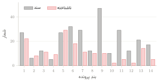
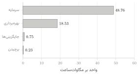
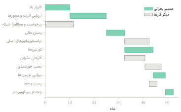
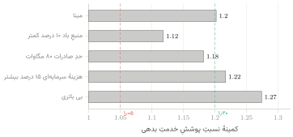
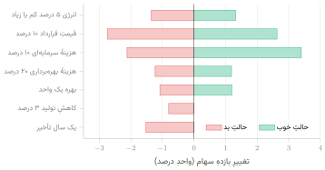
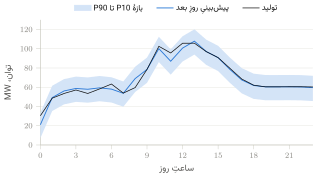

59 پروژهٔ پایانی: طراحی، تحویل و بهرهبرداریِ نیروگاهِ P
59.1 نقشهٔ فصل
نیروگاهِ P ساختگی است و همهٔ دادههایش آموزشیاند، با برچسبهایی که هر فصل گذاشته است. این فصل پروندهای برای یادگیری میسازد، نه پروندهای برای تأمینِ مالی یا ساختِ یک نیروگاهِ واقعی. هر کاربردِ واقعی به دادههای اندازهگیریشدهٔ ساختگاه، الزامهای کشورِ پروژه (فصلهای ۵۴ تا ۵۸) و تأییدِ مهندسانِ دارای صلاحیت و مرجعهای ذیصلاح نیاز دارد. هیچ بخشی از این فصل مشاورهٔ حقوقی، مالی یا مالیاتی نیست.
پس از این فصل، خواننده میتواند:
- پروندهٔ مرحلهایِ چهاردهبندیِ یک نیروگاهِ ترکیبی را از سندها، تصمیمها و ناشناختههای فصلها بسازد و کاملبودنش را وارسی کند.
- پایهٔ امکانسنجی، طراحیِ یکپارچه و برنامهٔ تحویل را با عددهایی که از مدلهای کتاب دوباره حساب میشوند بنویسد.
- هر تصمیمِ بزرگ را با شاهد، عدمِ قطعیت و مرجعِ تأییدش دفاع کند و نشان دهد اگر فرضِ اصلی رد شود طرح چه میشود.
- شش مورد را حل کند: قابلیتِ اطمینان، پیشبینی و خدمات، اتصال و صادرات، تأمینِ مالی، زمین و جامعه، و تحویلِ اطلاعاتِ دارایی.
پیشنیاز: همهٔ کتاب، بهویژه فصلهای ۱، ۱۶، ۲۲، ۲۸، ۳۳، ۳۷، ۵۰، ۵۳ و ۵۸.
- اگر تولیدِ P50 در پرونده با عددِ تصمیمِ D-019 فرق کند، کدام درست است؟
- آیا دروازهٔ تصمیم وقتی ناشناختهای باز است بسته میماند؟
- چرا پیشبینیِ خوب هنوز خدمتِ قراردادی نیست؟
پاسخها: (۱) هیچکدام تا روشن شود چه چیزی تغییر کرده است. پرونده دوباره حساب میکند تا همین ناسازگاری دیده شود؛ (۲) نه، با شرط باز میشود، و هر شرط صاحب و تاریخ دارد؛ (۳) چون مهارتِ پیشبینی، توانِ فنی، صلاحیتِ قراردادی و عملکردِ تحویلشده چهار ادعای جدا با چهار شاهدِ جدا هستند. اگر دو پرسش یا بیشتر را نتوانستید، فصل 1، فصل 22 و فصل 20 را مرور کنید.
جایگاهِ این فصل در نیروگاهِ P. این فصل چیزِ تازهای نمیآموزد. آنچه پنجاهوهشت فصل ساختند را در یک پرونده کنار هم میگذارد و میسنجد که با هم میخوانند یا نه. هر عدد با فراخوانیِ مدلِ فصلِ خودش دوباره حساب میشود، نه با رونویسی. اگر ورودیای تغییر کرده باشد، همینجا دیده میشود. مدتهای برنامه، شاهدهای خرابی، شاخصهای اجتماعی و ثبتِ داراییها آموزشیاند (A-571 تا A-575). نتیجه مبنای D-063 است.
59.1.1 پروندهٔ چهاردهبندی
برنامهٔ کتاب پروندهای مرحلهای با چهارده بند میخواهد. برنامهٔ زیر برای هر بند فصلهایش را میگیرد و از بخشِ «تحویلدادنی»ِ همان فصلها سندها و ناشناختهها را میخواند.
برنامه:
companion/ch59/sources.py و companion/ch59/index.py
ITEMS = [ # (number, short title, chapters that feed it)
(1, "data pack, requirements, assumptions, changes",
[1, 2, 3, 4, 5, 17, 38]),
(2, "resource-measurement and data-quality plan", [12, 13]),
(3, "site, layout, water balance and stewardship", [14, 29]),
(4, "yield model, losses and uncertainty", [15, 16]),
(5, "architecture and equipment selection", [8, 9, 10, 11, 18, 19]),
(6, "one-lines, auxiliaries, load lists, schedules",
[6, 7, 23, 24, 25, 26, 27]),
(7, "civil, mech., E&S, welfare, security, emergency",
[29, 30, 31, 32, 33]),
(8, "grid study, export, forecast/dispatch, services", [17, 20, 28]),
(9, "procurement specifications and quality plan", list(range(39, 49))),
(10, "construction, inspection, commissioning, handover", [49, 50]),
(11, "operation, maintenance, spares, data governance",
[34, 35, 36, 51, 52]),
(12, "RAM basis, critical equipment, verification plan", [37, 52]),
(13, "economics, finance, risk, footprint, retirement", [21, 22, 33, 53]),
(14, "Iran, Afghanistan, Tajikistan appendices", [54, 55, 56, 57, 58]),
]the staged dossier of Plant P: 14 items built from the chapters
# ch dec docs unk title
1 7 9 27 22 data pack, requirements, assumptions, changes
2 2 2 6 8 resource-measurement and data-quality plan
3 2 2 12 11 site, layout, water balance and stewardship
4 2 2 5 9 yield model, losses and uncertainty
5 6 7 27 29 architecture and equipment selection
6 7 8 32 18 one-lines, auxiliaries, load lists, schedules
7 5 5 29 11 civil, mech., E&S, welfare, security, emergency
8 3 3 12 10 grid study, export, forecast/dispatch, services
9 10 10 47 10 procurement specifications and quality plan
10 2 2 10 2 construction, inspection, commissioning, handover
11 5 5 29 5 operation, maintenance, spares, data governance
12 2 2 12 2 RAM basis, critical equipment, verification plan
13 4 4 21 14 economics, finance, risk, footprint, retirement
14 5 5 17 5 Iran, Afghanistan, Tajikistan appendices
distinct documents 263, unknowns named 134, decisions 62 of 62
chapters in no item: none; decisions in no item: none
an item with no document or no decision would be a gap in
the dossier; the index is rebuilt from the chapters each time
مثال 59.1 (پروندهای که از کتاب ساخته میشود) پرسش. چهارده بندِ پرونده چند سند، چند تصمیم و چند ناشناخته دارند، و آیا فصلی یا تصمیمی بیرون مانده است؟
پاسخ. ۲۶۳ سندِ جدا، هر ۶۲ تصمیم و ۱۳۴ ناشناختهٔ نامبرده. هیچ فصل و هیچ تصمیمی بیرون نمانده است. بند ۹ (تدارکات و کیفیت) با ۴۷ سند بزرگترین بند است. بند ۵ (معماری و انتخابِ تجهیز) با ۲۹ ناشناخته بیشترین پرسشِ باز را دارد (شکل 59.1).
تفسیر. فهرست از خودِ فصلها خوانده میشود. اگر فصلی سندی بیفزاید یا ناشناختهای ببندد، پرونده با یک اجرا بهروز میشود. وارسیِ «هیچ تصمیمی بیرون نمانده» همان آزمونی است که در دفترِ الزامها (فصل 38) برای الزامها داشتیم. بندی که سند یا تصمیم نداشته باشد، شکافِ پرونده است، نه بخشِ کوتاهی از آن.
59.1.2 پرونده در سه مرحله
پرونده یکباره نوشته نمیشود. هر بند در سه مرحله بالغ میشود: مفهومی برای دروازهٔ امکانسنجی، طراحی برای تصمیمِ سرمایهگذاری، و چونساخت برای تحویل.
| بند | مفهومی (امکانسنجی) | طراحی (تصمیمِ سرمایهگذاری) | چونساخت (تحویل) |
|---|---|---|---|
| ۱ | بستهٔ داده و الزامهای اولیه | خطِ مبنای الزامها | دفترِ تغییرهای بسته |
| ۲ | برنامهٔ اندازهگیری | یک سال داده و همبستگی | دادهٔ عملکرد |
| ۴ | تولیدِ اولیه | P50 و P90 با بودجهٔ عدمِ قطعیت | تولیدِ اندازهگیریشده |
| ۵ و ۶ | معماری و گزینهها | تکخطی و جدولهای تجهیز | نقشههای چونساخت |
| ۸ | درخواستِ اتصال | مطالعههای شبکه و پیشنهادِ اتصال | آزمونهای پذیرشِ شبکه |
| ۹ و ۱۰ | راهبردِ تدارکات | مشخصات و برنامهٔ کیفیت | گزارشهای کارخانه و ساختگاه |
| ۱۱ و ۱۲ | فرضهای بهرهبرداری | راهبردِ نگهداری و دسترسپذیری | ثبتِ داراییها و سابقهها |
| ۱۳ و ۱۴ | غربالگریِ مالی و کشوری | مدلِ مالی و پیوستِ کشورِ پروژه | قراردادها و مجوزهای نهایی |
مثال 59.2 (این کتاب کجای این جدول است؟) پرسش. پروندهٔ نیروگاهِ P در پایانِ کتاب در کدام مرحله است؟
پاسخ. بیشترِ بندها در مرحلهٔ طراحیاند: تولید با بودجهٔ عدمِ قطعیت، تکخطی، مطالعهٔ شبکه، مشخصات و مدلِ مالی. بخشهایی از مرحلهٔ چونساخت هم تمرین شدهاند (آزمونهای کارخانه و ساختگاه، ثبتِ داراییها، سابقهٔ خرابی)، ولی روی دادههای ساختگی.
تفسیر. پرونده تا جایی که کتاب میتواند رفته است. گذر به چونساخت دادهها و سندهای واقعی میخواهد. مرحلهها مانندِ وضعیتهای سند در فصلِ ۲ هستند: هر بند وضعیت و تاریخِ خودش را دارد (فصل 2).
59.2 الف. پروندهٔ پایه و امکانسنجی
پروندهٔ پایه میگوید چه چیزی ساخته میشود، چقدر انرژی میدهد، با چه عدمِ قطعیتی، به چه بهایی و با کدام ریسکها. بندهای ۱ تا ۴ و ۱۳ پرونده این بخش را میسازند.
برنامه:
companion/ch59/dossier.py
59.2.1 انرژی و عدمِ قطعیت، دوباره حسابشده
energy at the POC of Plant P, recomputed (model 15.1, S0; ch 15, 16)
P50 year 1: 295.14 GWh (curtailed at 100 MW: 0.23 GWh)
sigma at the POC: long-term 11.76, year-to-year 9.31 GWh
one year 14.99: P90 275.9, P99 260.3 GWh
ten-year mean 12.12: P90 279.6 GWh
the same numbers as D-019 and D-020: the dossier recomputes,
it does not copy - a changed input would show here firstمثال 59.3 (همان عدد، از همان مدل) پرسش. تولیدِ P50 و P90 نیروگاهِ P در نقطهٔ اتصال چیست، وقتی از مدلهای فصلهای ۱۵ و ۱۶ دوباره حساب شود؟
پاسخ. P50 سالِ نخست 295.14 GWh است. انحرافِ معیارِ یکساله در نقطهٔ اتصال 14.99 GWh است، از جمعِ مجذوریِ بخشِ بلندمدت (11.76) و تغییرِ سالبهسال (9.31). پس P90 یکساله 275.9، P99 یکساله 260.3 و P90 میانگینِ دهساله 279.6 GWh است.
تفسیر. این همان عددهای D-019 و D-020 است. پرونده آنها را رونویسی نمیکند، دوباره حساب میکند. اگر یکی از ورودیها، مثلاً حدِ صادرات یا ضریبِ بلندمدتِ باد، در فصلی تغییر کرده بود، عدد اینجا عوض میشد و ناسازگاری دیده میشد. فقط 0.23 GWh از انرژی در حدِ 100 MW کاهش مییابد (فصل 15).
59.2.2 آبشارِ تلفها
loss waterfall (model 15.1), each step as % of the energy entering it:
wind gross, 1.225 kg/m3, free stream 218.79 GWh -0.00 %
wind air density at the hub 200.12 GWh -8.53 %
wind terrain (W2b) 199.56 GWh -0.28 %
wind wakes (W2b) 191.56 GWh -4.01 %
wind long-term correction 196.88 GWh +2.77 %
wind availability 193.14 GWh -1.90 %
total 11.73 % (product of steps); simple sum 11.95 %
pv POA at STC efficiency 129.15 GWh -0.00 %
pv IAM, temperature, low light 119.32 GWh -7.61 %
pv DC wiring and mismatch 115.74 GWh -3.00 %
pv inverter efficiency 113.82 GWh -1.66 %
pv clipping at 49 MW 113.03 GWh -0.69 %
pv soiling and shading 111.34 GWh -1.50 %
pv long-term correction 110.00 GWh -1.20 %
pv degradation, year 1 109.45 GWh -0.50 %
pv availability 108.36 GWh -1.00 %
total 16.10 % (product of steps); simple sum 17.16 %
plant wind + PV at MV 301.49 GWh -0.00 %
plant MV and transformer losses 298.20 GWh -1.09 %
plant own use 295.86 GWh -0.79 %
plant export limit 100 MW 295.63 GWh -0.08 %
plant grid outages 295.14 GWh -0.17 %
total 2.11 % (product of steps); simple sum 2.12 %
a correction can be a gain (long-term wind); percentages of
successive steps multiply and do not addمثال 59.4 (از انرژیِ ناخالص تا نقطهٔ اتصال) پرسش. بزرگترین تلفهای مدلِ ۱۵٫۱ کداماند و هر کدام را کدام بندِ پرونده پشتیبانی میکند؟
پاسخ. برای باد، چگالیِ هوا در ارتفاعِ هاب (8.5 %) و اثرِ دنباله (4.0 %) بزرگتریناند. پشتیبانشان اندازهگیریِ ساختگاه و چیدمان است (بندهای ۲ و ۳). برای خورشیدی، تلفهای دما، قطعِ اینورتر و آلودگی، که پشتیبانشان مدلِ سلول و برنامهٔ شستشوست (بند ۵).
تفسیر. هر پلهٔ آبشار یک فرض است که شاهدی آن را میسنجد. پرونده برای هر پله، سندِ پشتیبان را نام میبرد. پلهای که سند ندارد، جای پرسشِ مهندسِ مستقل است (فصل 15، فصل 16).
59.2.3 دفترِ فرضها
assumptions named in the chapters: 568 distinct ids (A-001 to A-570)
by dossier item: 1: 109, 2: 21, 3: 21, 4: 20, 5: 153, 6: 52, 7: 40
8: 20, 9: 82, 10: 16, 11: 41, 12: 17, 13: 32, 14: 26
each is labelled (synthetic, assumed, measured, vendor, verified)
in its chapter; the dossier carries the ledger, not the labelsمثال 59.5 (پانصدوشصتوهشت فرض در چهارده بند) پرسش. چند فرض در کتاب نام برده شده و کدام بندها بیشترین را دارند؟
پاسخ. ۵۶۸ شناسهٔ جدا، از A-001 تا A-570. بندِ ۵ (معماری و تجهیز) ۱۵۳ و بندِ ۱ (بستهٔ داده، الزامها و فرضها) ۱۰۹ فرض دارند. بندِ ۹ (تدارکات) ۸۲ فرض دارد.
تفسیر. فرضهای بندِ ۵ بیشترند، چون فصلهای ۸ تا ۱۱ تجهیزات را با دادههای آموزشی ساختند. در پروژهٔ واقعی، بیشترِ این فرضها با دادهٔ سازنده جایگزین میشوند. دفترِ فرضها هر شناسه را با برچسبش (ساختگی، فرضی، اندازهگیریشده، اعلامِ سازنده، تأییدشده) نگه میدارد. انتشارِ تازهٔ بستهٔ داده آنها را یکجا گرد میآورد (فصل 5).
59.2.4 دفترِ بستهٔ داده و ردیابیِ ناشناختهها
the data pack's assumption ledger (release 1.1.0): 99 rows
status: assumed 85, synthetic 14
introduced in: ch01 13, ch02 8, ch03 15, ch04 43, ch05 11, ch06 9
measured, vendor or verified: 0
a fictional plant ends the book with no measured input in its
pack: every row is a place where a real project puts evidenceمثال 59.6 (هیچ ورودیِ اندازهگیریشده) پرسش. از ۹۹ ردیفِ دفترِ فرضهای بستهٔ داده، چند تا اندازهگیریشده، اعلامِ سازنده یا تأییدشدهاند؟
پاسخ. هیچکدام: ۸۵ فرضی و ۱۴ ساختگیاند، همه در فصلهای ۱ تا ۶ وارد شدهاند. فصلهای بعدی فرضهایشان را در متن و در بخشِ تحویلدادنی ثبت کردند (بخش 59.2.3).
تفسیر. این شکست نیست، ماهیتِ نیروگاهی ساختگی است. ولی همین فهرست نقشهٔ کارِ یک پروژهٔ واقعی است: هر ردیف جایی است که دادهای اندازهگیریشده، دادهای از سازنده یا سندی تأییدشده باید بنشیند. شعارِ کتاب، «از فرض تا شاهد»، در پروژهٔ واقعی با همین دفتر سنجیده میشود: نسبتِ ردیفهای شاهددار به کل، در هر دروازه.
unknowns named in the dossier: 134; in two items or more: 17
U-013, U-016, U-039, U-049, U-065, U-066, U-067, U-068, U-104, U-105
U-106, U-107, U-112, U-113, U-114, U-115, U-133
items with most unknowns: 5 (29), 1 (22), 6 (18), 13 (14)
triage: an unknown shared by two items is closed first; then
those of the next gate (ch 59 A); the rest are dated conditionsمثال 59.7 (هفده ناشناختهٔ مشترک) پرسش. کدام ناشناختهها در بیش از یک بندِ پرونده آمدهاند و چرا اول بسته میشوند؟
پاسخ. هفده ناشناخته، از جمله پاسخهای بهرهبردارِ شبکه (U-065 تا U-068)، ترازهای سیل و آب (U-104 تا U-107)، پیمایشهای پرندگان و آبخوان (U-112 تا U-114) و الزامهای واسطِ بهرهبردار (U-115). بند ۵ با ۲۹ ناشناخته بیشترین را دارد.
تفسیر. ناشناختهای که در دو بند آمده، دو بخشِ پرونده را با هم نگه داشته است: بستنش دو بند را با هم جلو میبرد. پس ترتیبِ بستن چنین است: اول ناشناختههای مشترک، سپس ناشناختههای دروازهٔ بعد (بخش 59.2.6)، و بقیه بهعنوانِ شرطهای تاریخدار.
59.2.5 پرونده به تفکیکِ بخشهای کتاب
documents, unknowns and decisions by Part of the book
Part chapters docs unknowns decisions
I 1-5 18 16 7
II 6-11 23 23 8
III 12-16 16 23 5
IV 17-22 24 24 6
V 23-28 33 15 6
VI 29-33 29 11 5
VII 34-37 24 4 4
VIII 38-50 63 14 13
IX 51-53 16 3 3
X 54-59 20 6 5
documents per chapter highest in Part VII (6.0);
a document named in two Parts is counted in eachمثال 59.8 (هر بخش، سهمی از پرونده) پرسش. هر بخشِ کتاب چند سند، ناشناخته و تصمیم به پرونده افزوده است؟
پاسخ. بخشِ هشتم (تدارکات، ساخت و راهاندازی) بیشترین سند (۶۳) و تصمیم (۱۳) را دارد. بخشهای دوم تا چهارم بیشترین ناشناخته را دارند (۲۳ تا ۲۴). بخشِ هفتم با شش سند در هر فصل بیشترین سند را به ازای فصل دارد. بخشِ نهم کمترین ناشناخته و تصمیم را دارد (۳ و ۳).
تفسیر. ناشناختهها بیشتر در بخشهای نخست زاده شدند، جایی که منبع، شبکه و معماری هنوز فرض بودند. بخشهای پسین بیشتر سند و شاهد افزودند: دفترها، آزمونها و گزارشها. این همان مسیرِ «از فرض تا شاهد» است، به زبانِ شمارش. ناشناختهای که در دو بخش آمده در هر دو شمرده شده است، پس جمعِ ستون از ۱۳۴ ناشناختهٔ یکتای نمایه بیشتر است (بخش 59.2.4).
59.2.6 دروازههای تصمیم
decision gates of Plant P against the dossier items (teaching rule:
a gate passes with conditions while its items carry open unknowns)
gate items documents unknowns
G1 screening 2,3 18 19
G2 feasibility 1,2,3,4,5,13 98 93
G3 financeability 4,8,13,14 55 38
G4 final investment 6,7,9 108 39
G5 handover 10,11,12 51 9
no gate is clean: each carries unknowns that are conditions,
owned and dated - a gate is a decision taken with them, not
a claim that they are gone (ch 1, ch 22)مثال 59.9 (هیچ دروازهای پاک نیست) پرسش. پنج دروازهٔ تصمیمِ نیروگاهِ P چند سند و چند ناشناخته در بندهای خود دارند؟
پاسخ. دروازهٔ غربالگری ۱۸ سند و ۱۹ ناشناخته دارد، امکانسنجی ۹۸ و ۹۳، تأمینِ مالی ۵۵ و ۳۸، تصمیمِ سرمایهگذاری ۱۰۸ و ۳۹، و تحویل ۵۱ و ۹. ناشناختهها در بندهای مشترکِ دروازهها دو بار شمرده میشوند.
تفسیر. دروازه با شرط باز میشود، نه با صفر شدنِ ناشناختهها. هر شرط صاحب و تاریخ دارد و پیش از دروازهٔ بعد بسته میشود (بخش 22.6.1). از دروازهٔ امکانسنجی تا تحویل، شمارِ ناشناختهها کم میشود. این همان روندی است که پرونده باید نشان دهد: از فرض به شاهد.
59.2.7 اقتصادِ طرح
economics of Plant P (ch 21 model, teaching terms A-304 to A-310)
capex 156,450 k u; debt 121,025 k u (71%)
equity IRR 10.2%; project IRR 7.8%; NPV at WACC 5,159 k u
min DSCR 1.20; min LLCR 1.23
LCOE at WACC 7.5%: 68.0 u/MWh against a PPA of 70 u/MWh
the plant clears its debt case at P90 and returns a modest
equity margin: the decision in D-025 and D-026 standsمثال 59.10 (دو واحد زیرِ قیمتِ قرارداد) پرسش. هزینهٔ ترازشدهٔ انرژیِ P در برابرِ قیمتِ قراردادِ آموزشی چقدر است؟
پاسخ. با نرخِ تنزیلِ 7.5 %، هزینهٔ ترازشده 68.0 واحد بر مگاواتساعت است، در برابرِ قیمتِ قراردادِ 70. ارزشِ فعلیِ خالصِ طرح 5,159 هزار واحد است. بازدهِ سهام 10.2 % و کمینهٔ نسبتِ پوشش 1.20 است.
تفسیر. دو واحد فاصله میانِ هزینهٔ ترازشده و قیمت همان حاشیهٔ باریکی است که فصلِ ۲۲ «ادامهٔ توسعه، هنوز نه سرمایهگذاری» نامید (D-026). حالتهای تغییر و حالتهای مالیِ این فصل نشان میدهند این حاشیه در برابرِ چه چیزهایی میایستد (بخش 59.5، بخش 59.9). همهٔ شرطهای مالی آموزشیاند (فصل 21).
59.2.8 اجزای هزینهٔ ترازشده
LCOE of Plant P by part (ch 21 model, WACC 7.5%, k u / GWh = u/MWh)
capital 48.8 u/MWh 71%
operation 18.5 u/MWh 27%
replacements 0.7 u/MWh 1%
decommissioning 0.2 u/MWh 0%
total 68.3 u/MWh (68.0 without decommissioning,
the LCOE of section A)
capital is 71% of the cost of a kWh: the capex range of the
tornado and the EPC price are the levers; operation is most
of the rest; decommissioning, 25 years away, weighs little
مثال 59.11 (سرمایه، هفتاد درصد) پرسش. هزینهٔ ترازشدهٔ P از چه اجزایی ساخته شده است؟
پاسخ. سرمایه 48.8، بهرهبرداری 18.5، جایگزینیها 0.7 و برچیدن 0.2 واحد بر مگاواتساعت، روی هم 68.3. بی برچیدن، 68.0 همان هزینهٔ ترازشدهٔ بخشِ الف است. سرمایه ۷۱ درصد است (شکل 59.2).
تفسیر. در نیروگاهی که سوخت ندارد، هزینهٔ هر کیلوواتساعت بیشتر سرمایه است. پس قیمتِ قراردادِ پیمانکار، پیشبینیِ اضطراری و هزینهٔ تأمینِ مالی (نرخِ تنزیل) اهرمهای اصلیاند (بخش 59.5.3). برچیدن، با ۲۵ سال فاصله و تنزیل، کم وزن دارد. ولی صندوقش از سالِ نخست پر میشود، چون نقدینگیِ آن سال باید باشد (مثال 59.31).
59.2.9 ترازِ آبِ بهرهبرداری
operating water of Plant P (ch 29 demand, treated water, A-352)
one wash 109.2 m3; 14 washes a year; staff 20 x 60 l/day
month: 36 146 146 146 255 255
255 255 146 146 146 36
year 1,967 m3; peak month 255 m3
the construction water (ch 29: about 87,000 m3) is thirty times
a year of operation: the stewardship plan is mostly a
construction plan, then a drought rule for washing (ch 51)مثال 59.12 (آبِ ساخت، سی برابرِ یک سال) پرسش. نیروگاهِ P در بهرهبرداری سالی چه مقدار آب مصرف میکند و این با آبِ ساخت چه نسبتی دارد؟
پاسخ. حدودِ 1,967 مترمکعب آبِ تصفیهشده در سال، با ماهِ اوجِ 255 مترمکعب در تابستان. آبِ ساخت حدودِ ۸۷ هزار مترمکعب است، یعنی بیش از سی سالِ بهرهبرداری.
تفسیر. برنامهٔ نگهداشتِ آب بیشتر برنامهٔ ساخت است: منبعِ بیرونی، غبارنشانیِ کمآب و پایشِ چاه (فصل 29). در بهرهبرداری، قاعدهٔ خشکسالی برای شستشو کافی است (فصل 51). مقدارها آموزشیاند (A-352).
- چرا پرونده تولید را دوباره حساب میکند و رونویسی نمیکند؟
- P90 یکساله و P90 دهساله چه فرقی دارند و چرا؟
- کدام بند بیشترین فرض را دارد و چرا؟
- دروازهٔ تصمیم با ناشناختههای باز چگونه باز میشود؟
- فاصلهٔ هزینهٔ ترازشده تا قیمت چه معنایی برای تصمیم دارد؟
59.3 ب. پروندهٔ طراحیِ یکپارچه
پروندهٔ طراحی معماری، انتخابِ تجهیزات، نمودارِ تکخطی، پایهٔ عمران و مکانیک، کنترل و ارتباطات، ایمنی و محیطِ زیست، مطالعههای شبکه و انطباق را کنار هم میگذارد. بندهای ۵ تا ۸ این بخش را میسازند. پرسشِ اصلیِ این بخش این است که فصلها با هم میخوانند یا نه.
59.3.1 پایهٔ طراحی در یک نگاه
integrated design basis: one line per discipline (decision, basis)
architecture D-022
grid-connected, AC-coupled battery, split 33 kV bus, 2 x 63 MVA
battery D-023
LFP, 10-90 % window, protection per rack, augmentation y8, y13
control D-024
5 layers, PI with anti-windup, priorities, DP plans
one-line and auxiliaries D-027
radial strings, split bus, 110 V DC, UPS
circuits D-028
cables by rating and loss; line limited on hot still days
transformers D-029
bid B at 70 u/MWh; PV unit transformers 5.6 MVA
protection and earthing D-030
incomers 1,600 A; breakers on PV units
power quality D-031
scans at the worst unit count; filter design data
grid study D-032
21-bus model; differential or intertrip on the line
civil and water D-033
wadi levels; construction water from outside
structures D-034
24 m gravity base; fatigue steel
safety and fire D-036
no universal prescription; authority's acceptance
E&S D-037
W2b waits for the raptor survey; ruin buffer
I&C, SCADA, OT security D-038/39/40
class 0.2 VT core; rings; zones and conduits
14 disciplines; each line is the summary of a decision
record with its evidence, open items and approverمثال 59.13 (چهارده رشته، چهارده تصمیم) پرسش. پایهٔ طراحیِ P در هر رشته کدام تصمیم است؟
پاسخ. چهارده رشته، از معماری (D-022) تا ابزار دقیق، اسکادا و امنیتِ سامانههای عملیاتی (D-038 تا D-040). هر سطر خلاصهٔ یک سابقهٔ تصمیم است، با شاهد، موردهای باز و تأییدکننده.
تفسیر. این جدول نقشهٔ راهِ خواننده یا بازبین است: از هر سطر به فصلِ آن تصمیم میرود. سه رشته موردِ باز دارند که با بیرون پیوند خورده است: زمین و صاعقه به مطالعهٔ خاک (U-098)، ایمنی و آتش به پذیرشِ مرجع (U-110)، و محیطِ زیست به پیمایشِ پرندگانِ شکاری (U-113).
59.3.2 وارسیِ واسطهای طراحی
یک کمیت ممکن است در چند فصل آمده باشد: حدِ صادرات در بستهٔ داده و مدلِ تولید، توانِ باتری در بستهٔ داده و ساختارِ سلولها، ظرفیتِ ترانسفورماتور در فصلِ ۲۵ و جریانِ صادرات. برنامه هر جفت را از منبعِ خودش میخواند و میسنجد.
design interfaces: the same quantity in different chapters
ok export limit: data pack vs yield model 100.00 == 100.00
ok PV AC: data pack vs 10 inverters x 5 MW 50.00 ~ 50.00
ok PV DC: data pack vs 109,200 x 550 W 60.00 ~ 60.06
ok BESS power: data pack vs 4 PCS 20.00 == 20.00
ok BESS energy: cell build-up vs data pack 40.13 >= 40.00
ok 2 main transformers vs export MVA 126.00 >= 105.26
FLAG one transformer (N-1) vs export MVA 63.00 >= 105.26
ok line rating vs export current (A) 650.00 >= 460.41
ok hub height: structures vs resource (m) 100.00 == 100.00
flagged: 1 - one transformer (N-1) vs export MVA
the N-1 flag is known and accepted: with one transformer out
the export is limited (D-022, ch 18, 28) - a decision, not
an error; an unexplained flag would stop the dossierمثال 59.14 (یک پرچمِ پذیرفته) پرسش. از نُه وارسیِ واسط، کدام پرچم میخورد و آیا خطاست؟
پاسخ. فقط یک وارسی: یک ترانسفورماتورِ اصلی (63 MVA) کمتر از توانِ ظاهریِ صادرات (105 MVA) است. این خطا نیست. تصمیمِ معماری (D-022) پذیرفته که با یک ترانسفورماتورِ ازکارافتاده صادرات محدود شود، و فصلهای ۱۸ و ۲۸ اثرش را حساب کردهاند. انرژیِ باتری از ساختارِ سلولها 40.13 MWh است و از 40 MWhِ بستهٔ داده کم نمیآورد.
تفسیر. وارسیِ واسط مانندِ آزمونِ یکپارچگیِ نرمافزار است: هر فصل درست است، ولی آیا با هم درستاند؟ پرچمِ توضیحدار در پرونده میماند و توضیحش کنارش. پرچمِ بیتوضیح پرونده را متوقف میکند. وارسیها را باید هر بار که فصلی تغییر میکند دوباره اجرا کرد (بخش 38.4).
59.3.3 حاشیهٔ طراحیِ رتبههای اصلی
design margins of the main ratings (ch 24, 25, 26, 39)
item rating need margin
main transformers 2 x 63 MVA / export MVA 126.0 105.3 19.7%
132 kV line rating / export current, A 650.0 460.4 41.2%
33 kV incomer 1,600 A / one transformer, A 1600.0 1102.2 45.2%
PV unit transformer / inverter MVA 5.6 5.5 1.8%
the line's margin shrinks with the weather: at 45 C and still
air it does not carry 437 A (ch 24); the data year's lowest
rating was 511 A (ch 51). The incomer's margin is in its
rating, but 1,600 A has no type test yet (ch 46). The PV unit
transformer's margin is the one ch 25 found missing at 5.5 MVAمثال 59.15 (حاشیهای که آبوهوا میخورد) پرسش. رتبههای اصلیِ مسیرِ صادرات چه حاشیهای بر نیاز دارند و کدام حاشیه کمتر از آن است که به نظر میرسد؟
پاسخ. ترانسفورماتورهای اصلی ۱۹٫۷ درصد، خط ۴۱٫۲ درصد، کلیدِ ورودی ۴۵٫۲ درصد و ترانسفورماتورِ واحدِ خورشیدی ۱٫۸ درصد. نیازِ خط و ترانسفورماتورها با صادراتِ 100 MW در ضریبِ توانِ 0.95 حساب شده است.
تفسیر. حاشیهٔ خط بزرگترین است ولی ثابت نیست: در ۴۵ درجه و هوای ساکن، خط جریانِ ۴۳۷ آمپر را هم نمیبرد (فصل 24). سالِ داده به آن حالت نرسید و کمترین رتبهاش ۵۱۱ آمپر بود (فصل 51). حاشیهٔ کلیدِ ورودی روی کاغذ است، چون رتبهٔ ۱۶۰۰ آمپر هنوز آزمونِ نوعی ندارد (فصل 46). حاشیهٔ کوچکِ ترانسفورماتورِ واحد همان است که فصلِ ۲۵ در 5.5 MVA کم یافت. پس حاشیه با شاهدش خوانده میشود، نه فقط با عددش.
- کدام سه رشته موردِ بازِ پیوسته با بیرون دارند؟
- وارسیِ واسط چه چیزی را میسنجد که هر فصل جداگانه نمیسنجد؟
- چرا پرچمِ ترانسفورماتور خطا نیست؟
- پرچمِ بیتوضیح با پرونده چه میکند؟
59.4 پ. پروندهٔ تحویل و عمر
پروندهٔ تحویل میگوید نیروگاه چگونه خریده، ساخته، آزموده، تحویل داده، بهرهبرداری و نگهداری میشود، و چگونه روزی بازتوانی یا برچیده میشود. بندهای ۹ تا ۱۲ این بخش را میسازند.
59.4.1 برنامه تا آغازِ بهرهبرداری
Plant P from the start of the wind campaign to COD (teaching, A-571)
task months float
D1 wind campaign 12 0
D2 ESIA and permits 18 0
D3 grid application and studies 14 16
D4 financing to close 9 0
P1 main transformers (order to site) 12 4
P2 turbines (order to site) 14 0
C1 civil works 10 2
C2 PV installation 8 2
C3 wind erection 6 0
C4 substation and line 4 4
K1 commissioning and tests 4 0
to COD: 63 months; critical path:
D1 > D2 > D4 > P2 > C3 > K1
the wind campaign and the permits drive the plan; turbines,
not transformers, are the critical supply after close
مثال 59.16 (باد، مجوز، توربین) پرسش. با مدتهای آموزشی، از آغازِ کمپینِ اندازهگیریِ باد تا آغازِ بهرهبرداری چند ماه است و چه چیزی آن را میراند؟
پاسخ. ۶۳ ماه. مسیرِ بحرانی: کمپینِ اندازهگیریِ باد (12 ماه)، ارزیابیِ اثرات و مجوزها (18)، بستنِ مالی (9)، تأمینِ توربین (14)، برپاییِ توربین (6) و راهاندازی (4). مطالعهٔ شبکه ۱۶ ماه شناوری دارد و ترانسفورماتورهای اصلی ۴ ماه (شکل 59.3).
تفسیر. دو درس. یک: پیش از بستنِ مالی، اندازهگیریِ باد و مجوزها برنامه را میرانند. پس آغازِ زودِ ارزیابیِ اثرات، همزمان با کمپینِ اندازهگیریِ باد، بیشترین زمان را میخرد (بخش 22.4.4). دو: پس از بستنِ مالی، توربینها کالای بحرانیاند، نه ترانسفورماتورها. پس رزروِ ظرفیتِ سازندهٔ توربین پیش از بستنِ مالی، اگر شدنی باشد، ارزش دارد (فصل 39). مدتها آموزشیاند (A-571).
59.4.2 برنامه با مدتهای نامطمئن
the plan to COD with uncertain durations (triangular 0.8 d - d - 1.6 d,
teaching, 10,000 runs)
deterministic 63 months; P50 71.8, P80 75.9, P90 78.1
on the critical path in:
100% D1 wind campaign
100% D2 ESIA and permits
100% D4 financing to close
100% K1 commissioning and tests
70% C3 wind erection
70% P2 turbines (order to site)
24% C1 civil works
24% C2 PV installation
6% P1 main transformers (order to site)
6% C4 substation and line
a COD promised at 63 months is met in 2% of runs;
the PPA and the debt plan carry the P80, not the deterministic planمثال 59.17 (شصتوسه ماه، دو درصد) پرسش. اگر مدتِ هر کار میانِ ۰٫۸ و ۱٫۶ برابرِ مدتِ آموزشیاش باشد، آغازِ بهرهبرداری کِی است؟
پاسخ. میانه 71.8 ماه، صدکِ ۸۰ 75.9 و صدکِ ۹۰ 78.1 ماه. برنامهٔ قطعیِ ۶۳ماهه فقط در ۲ درصدِ اجراها برآورده میشود. کمپینِ اندازهگیریِ باد، مجوزها، بستنِ مالی و راهاندازی همیشه بحرانیاند و توربینها در ۷۰ درصدِ اجراها.
تفسیر. تاریخِ آغازِ بهرهبرداری که در قراردادِ خرید و برنامهٔ وام میآید، صدکِ ۸۰ است، نه برنامهٔ قطعی. یک سال تأخیر در مدلِ مالی 1.5 واحدِ درصد از بازدهِ سهام میگیرد (بخش 59.5.3). روش همان روشِ فصلهای ۲۲ و ۵۷ است (بخش 22.4.4).
59.4.3 دامنهٔ ساخت و بهرهبرداری در مرزِ اتصال
construction and O&M scope at the connection (ownership scenario O1)
asset or work builds operates / maintains
PV blocks, inverters, unit transformers project project
wind turbines and 33 kV collector project project
battery containers and PCS project project
plant substation, 2 x 63 MVA project project
132 kV line, 7.06 km project project (O1); utility in
O2/O3
line bay at the grid substation (E1) utility utility
revenue metering at the POC project utility witnesses, seals
protection at the remote end utility utility, settings agreed
SCADA link to the dispatch centre both interface agreed (ch 35)
project 6, utility 2, both 1
every 'both' row has an interface record with its owner and
test; the line moves to the utility in scenarios O2 and O3مثال 59.18 (خطی که مالکش با سناریو عوض میشود) پرسش. در سناریوی مالکیتِ O1، کدام داراییها و کارها با پروژهاند، کدام با شرکتِ شبکه، و کدام با هر دو؟
پاسخ. شش ردیف با پروژه، دو ردیف با شرکتِ شبکه (خانهٔ خط در پستِ شبکه و حفاظتِ سمتِ دور) و یک ردیف با هر دو (پیوندِ اسکادا با مرکزِ اعزام). کنتورِ درآمدی را پروژه میسازد و شرکتِ شبکه شاهد میشود و پلمب میکند. خطِ ۱۳۲ کیلوولت در O1 با پروژه است و در O2 و O3 با شرکتِ شبکه.
تفسیر. مرزِ مالکیت همهٔ پروندهٔ تحویل را جابهجا میکند: چه کسی میسازد، چه کسی میآزماید، چه کسی نگه میدارد و هزینهاش در کدام مدل است (بخش 54.3.3). هر ردیفِ «هر دو» یک سابقهٔ واسط با صاحب و آزمون دارد (بخش 18.4). مورد چ این مرز را با هزینه و ریسک میسنجد (بخش 59.8).
59.4.4 از تحویل تا برچیدن
پروندهٔ تحویل چهار سند را از فصلهای پیشین به هم پیوند میدهد:
| مرحله | سندِ اصلی | آنچه به مرحلهٔ بعد میدهد |
|---|---|---|
| تدارکات و کیفیت | گزارشِ ارزیابیِ پیشنهادها و برنامهٔ کیفیت (فصلهای ۳۹ و ۴۰) | سفارشها با نقطههای توقف و شاهد |
| ساخت و بازرسی | روشنامهٔ اجرا و دفترِ آمادگی (فصلِ ۴۹) | بستههای تحویلِ سامانهها |
| راهاندازی و تحویل | روشِ راهاندازی و دفترِ پذیرش (فصلِ ۵۰) | ثبتِ داراییها، سابقهٔ آزمونها |
| بهرهبرداری و نگهداری | روشهای بهرهبرداری و راهبردِ نگهداری (فصلهای ۵۱ و ۵۲) | سابقهٔ خرابی و عملکرد |
| بازتوانی و برچیدن | مبنای عمر (فصلِ ۵۳) | تصمیمِ تمدید، بازتوانی یا برچیدن |
مثال 59.19 (سابقهای که از کارخانه تا برچیدن میرود) پرسش. شمارهٔ سریالِ یک اینورتر در کدام سندهای این زنجیره میآید؟
پاسخ. در گزارشِ آزمونِ کارخانه (فصلِ ۴۴)، در سابقهٔ دریافت و نصب (فصلِ ۴۹)، در آزمونِ ساختگاه و ثبتِ داراییها (فصلِ ۵۰)، در دستورهای کار و سابقهٔ خرابی (فصلهای ۵۱ و ۵۲)، و در فهرستِ برچیدن یا بازیافت (فصلِ ۵۳).
تفسیر. همین پیوستگی است که مورد د دربارهٔ تحویلِ اطلاعاتِ دارایی میآزماید (بخش 59.11). یک سریالِ خالی در ثبتِ داراییها این زنجیره را از وسط میبرد. بازتوانی هم از همین سابقهها تصمیم میگیرد: نرخِ خرابیِ واقعی، نه نرخِ کاتالوگ (فصل 53).
59.4.5 شاهدِ بهرهبرداری در مدلِ مالی
PV degradation measured in operation (ch 53) in the finance model
model 0.50 %/yr, measured 0.37 %/yr on the PV share (37% of energy)
energy over 25 years: +41.2 GWh; year 25: +1.17%
equity IRR 10.22% -> 10.33%; NPV 5,159 -> 5,982 k u
small for the debt (the early years barely move), worth more
to the tail: the finding goes back to ch 15 and ch 21مثال 59.20 (یک یافته، از فصلِ ۵۳ تا فصلِ ۲۱) پرسش. فصلِ ۵۳ نشان داد که افتِ توانِ ماژولها در بهرهبرداری 0.37 % در سال است، نه 0.50 %ِ مدل. اثرش بر انرژی و مالی چیست؟
پاسخ. روی سهمِ خورشیدیِ انرژی (۳۷ درصد)، در ۲۵ سال 41.2 GWh انرژیِ بیشتر، و در سالِ ۲۵ 1.17 % بیشتر. بازدهِ سهام از 10.22 % به 10.33 % و ارزشِ فعلیِ خالص از 5,159 به 5,982 هزار واحد میرسد.
تفسیر. اثر برای وام کوچک است، چون سالهای نخست کم جابهجا میشوند. برای سهام بیشتر است، چون دنبالهٔ عمر سودش را میبرد. این همان مسیرِ «از فرض تا شاهد» است: شاهدِ بهرهبرداری به مدلِ تولید (D-019) و مدلِ مالی (D-025) برمیگردد و نسخهٔ تازهٔ هر دو را میسازد (بخش 53.2).
- پیش و پس از بستنِ مالی چه چیزی برنامه را میراند؟
- مطالعهٔ شبکه چند ماه شناوری دارد و این چه معنایی دارد؟
- خطِ ۱۳۲ کیلوولت در کدام سناریو با پروژه است؟
- یک سریالِ خالی در ثبتِ داراییها چه زنجیرهای را میبرد؟
59.5 ت. تمرینِ دفاع و تغییر
تمرینِ دفاعِ پایانی. خواننده هر تصمیمِ بزرگ را توجیه میکند، شاهدش را نام میبرد، عدمِ قطعیتش را میگوید، تأییدِ کارشناس یا مرجعِ لازم را مشخص میکند و توضیح میدهد که اگر فرضِ اصلی رد شود طرح چگونه تغییر میکند. این بخش هر دو نیمه را دارد: جدولِ دفاع و چهار حالتِ تغییر که با مدلهای کتاب دوباره حساب میشوند.
59.5.1 جدولِ دفاع
the defense table: each major decision with its evidence (ch 59 D)
D-017 wind P50 191.9 GWh at 100 m hub
evidence: mast + lidar + MCP (ch 13); uncertainty: sigma 7.6 GWh long-
term
approver: lenders' engineer; if disproven: re-size debt; layout W1?
D-019 P50 295.1 GWh at the POC
evidence: model 15.1 (ch 15); uncertainty: P90 1y 275.9
approver: owner, lenders' engineer; if disproven: finance cases (ch 21)
D-022 AC-coupled, 2 x 63 MVA, single line
evidence: options matrix (ch 18); uncertainty: N-1 export limit
approver: owner; if disproven: second circuit or third unit
D-023 LFP 20 MW / 40 MWh, optional
evidence: dispatch and fade (ch 19); uncertainty: repays ~40 % of
capital
approver: owner; if disproven: S0 with space kept
D-029 bid B transformers
evidence: loss evaluation (ch 25); uncertainty: loss prices
approver: owner; if disproven: re-run evaluation
D-030 protection and earthing basis
evidence: coordination by fault case (ch 26); uncertainty: soil survey
U-098
approver: licensed engineer; if disproven: new grid, new settings
D-032 grid-study basis
evidence: 21-bus model (ch 28); uncertainty: grid data U-102
approver: network operator; if disproven: re-study; compensator
D-036 safety, fire, emergency basis
evidence: registers (ch 32); uncertainty: authority U-110
approver: authority having jurisdiction; if disproven: revise layout and
systems
D-037 E&S basis, W2b waits for survey
evidence: registers (ch 33); uncertainty: raptor survey U-113
approver: regulator, lenders; if disproven: micro-siting or W1
D-056 maintenance and RAM basis
evidence: RAM model (ch 52); uncertainty: rates A-288
approver: owner, O&M contractor; if disproven: spares and contracts
10 decisions defended; every row names who must approve
and what the design becomes if the claim failsمثال 59.21 (هر ادعا با تأییدکنندهاش) پرسش. از ده تصمیمِ جدولِ دفاع، کدامها تأییدِ مرجعی بیرون از پروژه را لازم دارند؟
پاسخ. چهار تا: پایهٔ حفاظت و زمین (D-030) که مهندسِ دارای صلاحیت امضا میکند، مطالعهٔ شبکه (D-032) که بهرهبردارِ شبکه میپذیرد، ایمنی و آتش (D-036) که مرجعِ ذیصلاح میپذیرد، و محیطِ زیست و جامعه (D-037) که نهادِ ناظر و وامدهندگان میپذیرند. انرژیِ باد (D-017) و تولید (D-019) را مهندسِ مستقلِ وامدهندگان بازبینی میکند.
تفسیر. دفاع یعنی سه جمله برای هر تصمیم: «این را میگوییم، به این دلیل، با این عدمِ قطعیت». چهارمی جملهٔ «اگر نادرست باشد» است، که نشان میدهد طرح پیش از شکست به جایگزینش فکر کرده است. تصمیمی که ستونِ «اگر رد شود» را خالی دارد، هنوز دفاعپذیر نیست.
59.5.2 چهار حالتِ تغییر
def cases() -> dict:
"""Four changes to the basis: resource, export limit, capex, battery."""
from companion.ch15 import sources as s15
from companion.ch21 import model
base_cfg = s15.ModelConfig()
e0 = _net(base_cfg)
b = model.run()
runs = {
"base": (e0, b),
"wind resource -10 %": None,
"export limit 80 MW": None,
"capex +15 %": (e0, model.run(capex_scale=1.15, debt=b["debt"])),
"no battery (S0)": (e0, model.run(battery=False)),
}
e1 = _net(replace(base_cfg, lt_wind=base_cfg.lt_wind * 0.9))
runs["wind resource -10 %"] = (e1, model.run(energy_scale=e1 / e0,
debt=b["debt"]))
e2 = _net(replace(base_cfg, export_mw=80.0))
runs["export limit 80 MW"] = (e2, model.run(energy_scale=e2 / e0,
debt=b["debt"]))
return runsfour changes to the basis, recomputed (ch 15 yield, ch 21 finance;
debt held at the size of the base case except for 'no battery')
case GWh min DSCR equity IRR NPV k u
base 295.1 1.20 10.2% 5,159
wind resource -10 % 276.4 1.12 8.5% -7,059
export limit 80 MW 289.9 1.18 9.7% 1,747
capex +15 % 295.1 1.22 7.3% -16,023
no battery (S0) 295.1 1.27 12.8% 19,610
lowest minimum DSCR: wind resource -10 %, 1.12 - above the 1.10 lock-up,
below the 1.20 sizing target
(ch 21 terms); each case names the decision it reopens and
the evidence that would close it
مثال 59.22 (منبعِ باد بیشترین ضربه را میزند) پرسش. اگر منبعِ باد ۱۰ درصد کمتر باشد، حدِ صادرات 80 MW شود، هزینهٔ سرمایهای ۱۵ درصد بالا رود، یا باتری کنار گذاشته شود، طرح چه میشود؟
پاسخ. باد ۱۰ درصد کمتر انرژی را به 276.4 GWh میرساند و کمینهٔ نسبتِ پوشش را به 1.12، بالای قفلِ توزیع (1.10) ولی زیرِ هدفِ 1.20. حدِ 80 MW فقط 5.2 GWh کم میکند (1.18). هزینهٔ ۱۵ درصد بیشتر با بدهیِ ثابت بازدهِ سهام را به 7.3 % میبرد ولی نسبتِ پوشش را نه. بی باتری، بازدهِ سهام 12.8 % و نسبتِ پوشش 1.27 میشود (شکل 59.4).
تفسیر. هر حالت تصمیمی را باز میکند:
- باد ۱۰ درصد کمتر: D-017 و اندازهٔ بدهی. شاهدی که آن را میبندد، سالِ دومِ اندازهگیری یا یک لیدار است (فصل 13). اگر تأیید شود، بدهی کوچکتر میشود یا چیدمانِ W1 دوباره سنجیده میشود.
- حدِ 80 MW: D-032 و پیشنهادِ اتصال. کاهش کوچک است، چون ساعتهایی که هر دو منبع با هم بالای 80 MW میدهند کماند. باتری بخشی از همان را جابهجا میکند (فصل 18).
- هزینه ۱۵ درصد بیشتر: D-025 و قراردادِ مهندسی، تأمین و ساخت. سهام آن را میپردازد. پیشبینیِ اضطراری و قیمتِ مقطوع جلویش را میگیرند (بخش 22.2.4).
- بی باتری: همان یافتهٔ فصلِ ۲۱. با قیمتهای آموزشی، باتری سرمایهاش را برنمیگرداند. حالتِ S0 با جای خالی برای باتریِ بعدی ترجیحِ مالی است، مگر الزام یا قراردادِ خدمتی آن را بخواهد (D-023، D-025).
59.5.3 حساسیت به یک ورودی در هر بار
one input at a time around the base (equity IRR 10.2%; debt held)
input low IRR high IRR low DSCR high DSCR
capex +/- 10 % -2.1% +3.4% 1.22 1.19
PPA price +/- 10 % -2.7% +2.6% 1.06 1.31
energy +/- 5 % -1.3% +1.3% 1.14 1.26
opex +/- 20 % -1.2% +1.2% 1.15 1.25
interest +/- 1 point -1.1% +1.2% 1.10 1.24
COD one year late / on time -1.5% +0.0% 1.20 1.20
curtailment 0 / +3 % -0.8% +0.0% 1.17 1.20
widest: capex +/- 10 %, then PPA price +/- 10 %, then energy +/- 5 %;
the first two are fixed by contracts (EPC price, PPA), the
third by the resource evidence (ch 13, 16)
مثال 59.23 (سه ورودیِ پهن، سه شاهد) پرسش. کدام ورودیها بازدهِ سهام را بیشتر جابهجا میکنند و کمینهٔ نسبتِ پوشش را کدامها؟
پاسخ. هزینهٔ سرمایهای ۱۰ درصد (−2.1 تا +3.4 واحدِ درصد)، قیمتِ قرارداد ۱۰ درصد (−2.7 تا +2.6) و انرژیِ ۵ درصد (±1.3). برای نسبتِ پوشش، قیمتِ ۱۰ درصد کمتر بدترین است (1.06) و سپس بهرهٔ یک واحد بیشتر (1.10) و انرژیِ ۵ درصد کمتر (1.14). هزینهٔ سرمایهای با بدهیِ ثابت نسبتِ پوشش را جابهجا نمیکند (شکل 59.5).
تفسیر. سه ورودیِ پهن سه شاهدِ جدا دارند. هزینهٔ سرمایهای با قیمتِ مقطوعِ پیمانکار و پیشبینیِ اضطراری بسته میشود (بخش 22.2.4)، قیمت با قراردادِ خرید، و انرژی با شاهدِ منبع (فصل 13، فصل 16). پرونده بیشترین شاهد را جایی میگذارد که حساسیت بیشتر است. بهره را پوشش در بستنِ مالی ثابت میکند (بخش 21.7). بازهها آموزشیاند (A-573).
مثال 59.24 (D-024: «کنترلگر چه اولویتی دارد؟») پرسشِ بازبین. اگر دستورِ بهرهبردار و برنامهٔ فروش با هم بخوانند، کنترلگرِ نیروگاه کدام را اجرا میکند؟
پاسخ. ترتیبِ ثابت: ایمنی، دستورِ بهرهبردار، خدمت، برنامه، بازیابی (D-024). اگر ارتباط قطع شود، یک ساعت آخرین دستور نگه داشته میشود و سپس حالتِ پشتیبان. این ترتیب در آزمونِ کارخانه و ساختگاهِ کنترلگر آزموده میشود (فصل 20، فصل 50).
مثال 59.25 (D-026: «چرا این ساختگاه؟») پرسشِ بازبین. چرا از سه ساختگاه، P-Central برگزیده شد؟
پاسخ. با ماتریسِ معیارهای فصلِ ۲۲ و پایداریِ رتبه زیرِ وزنهای سه گروهِ ذینفع. ساختگاهِ شمالی پرچمهای پرندگان و جابهجایی داشت و ساختگاهِ جنوبی حدِ ۷۰ مگاواتیِ شبکه. حکم «ادامهٔ توسعه، هنوز نه سرمایهگذاری» بود و همین پرونده پاسخِ آن «هنوز» است (فصل 22).
مثال 59.26 (D-033: «آبِ ساخت از کجا؟») پرسشِ بازبین. آبِ ساخت ۱۱۲ درصدِ تغذیهٔ آبخوان است. پروژه آب را از کجا میآورد؟
پاسخ. از بیرونِ آبخوان، با تانکر یا خطلوله، و غبارنشانی که ۸۶ درصدِ آبِ ساخت است با روشهای کمآب کاهش مییابد (D-033، فصل 29، فصل 49). شاخصِ آبِ ساخت در داشبورد قرمز است (مثال 59.82).
مثال 59.27 (D-034: «پیِ توربین در چه خاکی؟») پرسشِ بازبین. پیِ وزنیِ ۲۴ متری بر کدام دادهٔ خاک تکیه دارد؟
پاسخ. بر مقدارهای مشخصهٔ ژئوتکنیکیِ آموزشیِ فصلِ ۳۰، و گزارشِ ژئوتکنیکِ نهایی هنوز باز است (U-128). طرح با بسامدِ برج، فشارِ زیرِ پی و لغزش وارسی شده است. اگر خاک ضعیفتر باشد، طرحِ شمعی گزینهٔ کنار گذاشتهشده است (فصل 30).
مثال 59.28 (D-040: «امنیتِ سامانههای عملیاتی؟») پرسشِ بازبین. اینورترها داده را به ابرِ سازنده میفرستند. این را چگونه کنترل میکنید؟
پاسخ. فصلِ ۳۶ همین را یافت: مسیری که از همهٔ ناحیهها میگذرد. پاسخ ناحیهها و مجراها، و دسترسیِ راهدورِ کنترلشده با میزبانِ پرش است. کارِ دفاعی و بیجزئیاتِ حمله است و الزامهای امنیتیِ بهرهبردار هنوز باز است (U-117، فصل 36).
مثال 59.29 (D-043: «چرا این پیشنهاد؟») پرسشِ بازبین. چرا پیشنهادِ ترانسفورماتورهای واحد U-A برگزیده شد؟
پاسخ. با قیمتِ ارزیابیشده (قیمت بهعلاوهٔ تلف و ریسک): U-A 2,072، U-C 2,093 و U-B 2,141 هزار واحد، و U-B در بندهای بحرانی رد شد. رتبه در قیمتِ ۵۲ واحد بر مگاواتساعت برمیگردد و این آستانه در گزارش آمده است (فصل 39).
مثال 59.30 (D-054: «پذیرش با کدام شاهد؟») پرسشِ بازبین. پذیرشِ بهرهبرداری با کدام آزمونها؟ و چه چیزی هنوز باز است؟
پاسخ. با آزمونهای بلوکبهبلوک، آزمونهای شبکه در برابرِ الزامهای فصلِ ۲۸ و بستههای تحویل. فصلِ ۵۰ دو از ده وارسیِ پذیرش را برقرار یافت: توانِ راکتیو در 100 MW کمتر از الزام بود، چهار الزام آزموده نشده بود و مدل اعتبارسنجی نشده بود (فصل 50).
مثال 59.31 (D-057: «پایانِ عمر؟») پرسشِ بازبین. در سالِ ۱۸ گیربکسها چه میشوند و صندوقِ برچیدن از کِی؟
پاسخ. گیربکسها با تعمیر در هنگامِ خرابی، که در همهٔ حالتهای حساسیت ارزانترین بود، و اینورترها با جایگزینی. صندوقِ برچیدن از سالِ نخست، با 111 هزار واحد در سال به جای 587 هزار واحد اگر از سالِ ۱۸ آغاز شود (فصل 53).
مثال 59.32 (D-058: «کدام قاعده حاکم است؟») پرسشِ بازبین. اگر کدِ شبکه، قراردادِ اتصال و مشخصاتِ مالک برای یک پارامتر سه حدِ متفاوت بدهند، طرح کدام را میگیرد؟
پاسخ. بازهای که همهٔ منبعها میپذیرند. اگر چنین بازهای نباشد، ناسازگاری پرسشی کتبی است و تا پاسخ، طرح با محافظهکارانهترین حد پیش میرود. ترتیبِ اعتبارِ منبعها پرسشی حقوقی است که مشاورِ محلی پاسخ میدهد (D-058، بخش 54.2.2).
مثال 59.33 (D-059 تا D-061: «در کشورِ ما چه؟») پرسشِ بازبین. کدام بخشِ این پرونده در کشورِ پروژه نادرست است؟
پاسخ. دستکم سطحِ اتصال: ۱۳۲ کیلوولت در هیچکدام از سه کشور منبع ندارد. سپس هر پیوست موردهای خودش را دارد: ۲۸، ۳۱ و ۳۲ گزارهٔ نیازمندِ تأیید در ایران، افغانستان و تاجیکستان، با نامههای آماده برای هر نشانی (بخش 59.17.1).
پاسخِ کاملتر. پرونده نمیگوید در کشورِ پروژه درست است. میگوید چه چیزی را از کجا آورده، با چه برچسبی، و چه چیزی را باید پرسید. بازبینِ محلیِ دارای صلاحیت پیوستِ کشور را میبندد.
مثال 59.34 (D-062: «این استانداردها جاریاند؟») پرسشِ بازبین. استانداردهایی که در مشخصات آمدهاند جاریاند؟
پاسخ. دفترِ استانداردها برای هر ردیف ویرایش و تاریخِ وارسی دارد. ۳۹ ردیف از ۱۹۱ هنوز پرسشِ باز دارند. مشخصات با ارجاعِ تاریخدار نوشته شدهاند، پس قرارداد پایدار است. پیش از صدور، ردیفهای بهکاررفته دوباره با کاتالوگ وارسی میشوند و ویرایشِ تازه تحلیلِ اثر را اجرا میکند (بخش 58.5.7، بخش 58.5.6).
مثال 59.35 (D-039: «دادهها به اتاقِ کنترل میرسند؟») پرسشِ بازبین. چه شاهدی دارید که شبکهٔ ارتباطی و دادهها کار میکنند؟
پاسخ. حلقههای فیبرِ توربین با بودجهٔ توانِ نوری حساب شدهاند. حلقهٔ غربی 10.8 dB تلف دارد، بیش از 10 dB که اپتیکِ آن میپذیرد، پس اپتیکِ آن عوض میشود یا مسیرش کوتاه. شمارندهها ۳۲ بیتیاند، چون شمارندهٔ ۱۶ بیتی در ۴۱ روز سرریز میشود. نقشهٔ کیفیتِ هر دروازهٔ ارتباطی در مشخصاتِ واسط آمده است. (D-039، فصل 35).
مثال 59.36 (D-041: «کمکاری را از کجا میفهمید؟») پرسشِ بازبین. اگر بخشی از نیروگاه کم کار کند، چقدر طول میکشد تا بفهمید؟
پاسخ. باقیماندهٔ روزانه در برابرِ مدلِ ۱۵٫۱ با جمعِ تجمعی برای هر بلوک و هر توربین. در موردِ فصلِ ۵۲، جمعِ تجمعی یک روز پس از خرابی علامت میداد، ولی جعبه ۴۲ روز پس از آن پیدا شد. پس این وارسی روزانه اجرا میشود و علامتش به دستورِ کار میرسد (D-041، فصل 37، فصل 52).
مثال 59.37 (D-045: «توانِ برچسبِ ماژولها درست است؟») پرسشِ بازبین. چگونه مطمئن میشوید که توانِ برچسبِ ماژولها همان است که پرداخت میکنید؟
پاسخ. پروندههای آزمونِ فلش هنگامِ رسیدن خوانده میشوند. در محمولهٔ نمونه، رانشِ +2.4 W دستگاه از ماژولِ ۲۴۰۰ به بعد پیدا شد و برچسبها دوباره صادر شدند. ماژولِ مرجع هر ۱۰۰ ماژول وارسی میشود و آزمایشگاه با قاعدهٔ تصمیمِ قرارداد نمونه میسنجد (D-045، فصل 41).
مثال 59.38 (D-047: «ترانسفورماتور T1 پذیرفته شد؟») پرسشِ بازبین. گزارشِ آزمونِ کارخانهٔ T1 سه ناکامی دارد. چه کردید؟
پاسخ. برای حمل پذیرفته نشد تا نسبتِ تبدیل، منبعِ تخلیهٔ جزئی و استیلن توضیح داده شوند و سابقهها کامل شوند. کسرِ بها 8.4 هزار واحد است. افزایشِ دمای 66.5 K در برابرِ 65 K تصمیمِ مالک است، نه تصمیمِ کفِ کارخانه: تعمیرِ خنککاری، حدِ رتبهٔ کتبی یا رد (D-047، فصل 43).
مثال 59.39 (D-055: «بهرهبرداری با چه قاعدهای؟») پرسشِ بازبین. شیفت ساعتِ ۱۰ خبر میگیرد که از ۱۱ تا ۱۵ صادرات به 80 MW محدود است. چه میکند؟
پاسخ. روز را از پیشبینی با نسخهاش برنامه میریزد و برنامه را با هر بهروزرسانی و اعلام عوض میکند. در موردِ کاربردیِ فصلِ ۵۱، شیفتی که پیش از اوج جا باز کرد، کاهشِ تولید را از 46.0 به 23.8 مگاواتساعت رساند. انرژیِ ازدسترفته با علتش ثبت میشود (D-055، فصل 51).
59.5.4 آنچه یک تغییر باز میکند
WIND, EXP = "wind resource basis (D-017)", "export limit"
YIELD, UNC = "yield model (D-019)", "uncertainty statement (D-020)"
FIN, GRID = "finance model (D-025)", "grid study (D-032)"
PPC, PROT = "PPC settings (D-024)", "protection study (D-030)"
TURB = "turbine selection (D-015)"
GRAPH = { # dossier data -> documents that use it (teaching, A-573)
WIND: [YIELD, TURB],
EXP: [YIELD, GRID, PPC],
YIELD: [UNC, FIN, "O&M budget (D-056)"],
UNC: [FIN],
FIN: ["CP register", "PPA price bid"],
GRID: [PROT, "PQ study (D-031)", "connection agreement"],
PPC: ["FAT and SAT procedures (D-054)"],
PROT: ["relay settings files"],
TURB: ["foundation design (D-034)", "transport plan (D-035)"],
}what a change reopens in the dossier (ch 38 helper on a teaching graph)
wind resource basis (D-017): 9 documents
yield model (D-019)
turbine selection (D-015)
uncertainty statement (D-020)
finance model (D-025)
O&M budget (D-056)
foundation design (D-034)
transport plan (D-035)
CP register
PPA price bid
export limit: 13 documents
yield model (D-019)
grid study (D-032)
PPC settings (D-024)
uncertainty statement (D-020)
finance model (D-025)
O&M budget (D-056)
protection study (D-030)
PQ study (D-031)
connection agreement
FAT and SAT procedures (D-054)
CP register
PPA price bid
relay settings files
the finance model and the CP register are reached from both:
every change case ends at the lenders' conditionsمثال 59.40 (سیزده سند برای یک حد) پرسش. اگر حدِ صادرات تغییر کند، کدام سندهای پرونده باید بازبینی شوند؟
پاسخ. سیزده سند: مدلِ تولید، مطالعهٔ شبکه و تنظیمهای کنترلگر، و از آنها بیانیهٔ عدمِ قطعیت، مدلِ مالی، بودجهٔ بهرهبرداری، مطالعههای حفاظت و کیفیتِ برق، قراردادِ اتصال، روشهای آزمونِ کارخانه و ساختگاه، دفترِ شرطهای پیشین، پیشنهادِ قیمت و فایلهای تنظیمِ رلهها. تغییرِ منبعِ باد نُه سند را باز میکند.
تفسیر. حالتِ تغییرِ بخشِ پیش عددها را دوباره حساب کرد. این بخش میگوید کدام سندها باید با آن عددها بازنویسی شوند. هر دو تغییر به مدلِ مالی و دفترِ شرطهای پیشین میرسند: هر تغییری سرانجام به شرطهای وامدهنده میرسد. نمودارِ وابستگی آموزشی است (A-573). در پروژه، همان دفترِ وابستگیِ سندهای فصلِ ۳۸ است، در اندازهٔ کلِ پرونده (بخش 38.6).
59.5.5 گفتوگوهای دفاع
تمرینِ دفاعِ پایانی پرسشهای بازبین را با شاهدِ پرونده پاسخ میدهد. ده گفتوگوی زیر، یکی برای هر تصمیمِ جدولِ دفاع، الگوی آناند. هر پاسخ به عددی تکیه دارد که در همین فصل دوباره حساب شده است.
مثال 59.41 (D-017: «اگر باد کمتر باشد؟») پرسشِ بازبین. اگر ضریبِ بلندمدتِ باد ۱۰ درصد خوشبینانه باشد، پروژه چه میشود؟
پاسخ. انرژی به 276.4 GWh و کمینهٔ نسبتِ پوشش به 1.12 میرسد، بالای قفلِ توزیع. بدهی پرداخت میشود و سهام کمتر میگیرد (8.5 %). شاهدی که پرسش را میبندد، سالِ دومِ اندازهگیری یا لیدار در ساختگاه است (مثال 59.22).
مثال 59.42 (D-019 و D-020: «P90 شما از کجاست؟») پرسشِ بازبین. P90 یکساله را چگونه ساختید؟
پاسخ. از P50 295.14 GWh و انحرافِ معیارِ یکسالهٔ 14.99 GWh، جمعِ مجذوریِ بیست جزءِ عدمِ قطعیت و تغییرِ سالبهسال، با فرضِ توزیعِ نرمال: 275.9 GWh. بزرگترین جزء تغییرِ سالبهسال است و پس از آن همبستگیِ بلندمدتِ باد (مثال 59.3، فصل 16).
مثال 59.43 (D-022: «چرا یک خط؟») پرسشِ بازبین. خطِ تکمداره کلِ نیروگاه را با یک خرابی قطع میکند. چرا دومداره نه؟
پاسخ. در ۲۵ سال، تکمداره 3.78 و دومداره 5.09 میلیون واحد هزینه دارد، با سرمایه و انرژیِ ازدسترفته روی هم. تفاوتِ انرژی 0.31 میلیون است و تفاوتِ سرمایه 1.62. اگر جریمهٔ قراردادی برای قطع باشد، این حساب دوباره انجام میشود (مثال 59.66).
مثال 59.44 (D-023: «باتری برای چیست؟») پرسشِ بازبین. بی باتری بازدهِ سهام 12.8 % است و با باتری 10.2 %. چرا باتری؟
پاسخ. با قیمتهای آموزشی، باتری سرمایهاش را برنمیگرداند و پرونده این را پنهان نمیکند (D-025). ترجیحِ مالی S0 با جای خالی برای باتریِ بعدی است. باتری فقط وقتی برمیگردد که الزامی، قراردادی خدمتی یا تفاوتِ قیمتی بزرگتر بیاید. کرانِ بالای ارزشِ آن در کاهشِ عدمِ تعادل حدودِ 880 هزار واحد در سال است (مثال 59.60).
مثال 59.45 (D-029: «هر دو ترانسفورماتور با هم؟») پرسشِ بازبین. دو ترانسفورماتور دارید. احتمالِ از کار افتادنِ هر دو چقدر است؟
پاسخ. بی علتِ مشترک \(2.5 \times 10^{-5}\) از سال، با بتای ۵ درصد \(2.7 \times 10^{-4}\)، یعنی 81 MWh در سال. پاسخِ طرح جداییِ فیزیکی، دیوارِ آتش و بازبینیِ مستقلِ تنظیمهاست، نه واحدِ سوم (مثال 59.54).
مثال 59.46 (D-030: «تنظیمهای دو سرِ خط؟») پرسشِ بازبین. چه کسی تضمین میکند که تنظیمهای حفاظتِ دو سرِ خط با هم بخوانند؟
پاسخ. سابقهٔ مشترکِ تنظیمها و آزمونِ مشترکِ دورهای در مرزِ بهرهبرداری، با یک صاحب برای هر سر (مثال 59.73). پایهٔ حفاظت را مهندسِ دارای صلاحیت امضا میکند و مطالعهٔ خاک (U-098) هنوز باز است.
مثال 59.47 (D-032: «مطالعهٔ شبکه با دادههای ناقص؟») پرسشِ بازبین. چهارده ورودی از سی هنوز نیامدهاند. مطالعه چه ارزشی دارد؟
پاسخ. مطالعه با ورودیهای فرضشده برچسبش را نگه میدارد و نتیجهاش «شرطی» است. هر ورودیِ نیامده شرطی در قراردادِ اتصال است. نتیجههای حساس (توانِ راکتیو در روزِ گرم، حفاظتِ خط) با بازهای از ورودیها آزموده شدهاند (مثال 59.68، فصل 28).
مثال 59.48 (D-036: «بزرگترین خسارت؟») پرسشِ بازبین. بزرگترین خسارتِ ممکنِ نیروگاه کدام است و چقدر طول میکشد؟
پاسخ. از دست رفتنِ یک ترانسفورماتورِ اصلی در آتش، با حدودِ 4,380 ساعت تا بازگشت. یا آتشِ زنجیرهایِ ظرفهای باتری. پایهٔ آتش جهانشمول نیست و پذیرشِ مرجعِ ذیصلاح (U-110) باز است (مثال 59.79، فصل 32).
مثال 59.49 (D-037: «پرندگانِ شکاری؟») پرسشِ بازبین. برآوردِ تلفاتِ پرندگانِ شکاری بالای هدف است. چه میکنید؟
پاسخ. برآورد (4.8 در سال) کهربایی است و چیدمانِ W2b تا پیمایشِ پرندگان (U-113) منتظر میماند. اگر پیمایش خطر را تأیید کند، ریزجانمایی، توقفِ برنامهریزیشده در فصلِ کوچ یا چیدمانِ دیگر گزینهها هستند (مثال 59.82، فصل 33).
مثال 59.50 (D-056: «نرخهای خرابیِ شما از کجاست؟») پرسشِ بازبین. نرخهای خرابیِ مدلِ قابلیتِ اطمینان از کجا آمدهاند و چگونه بهروز میشوند؟
پاسخ. از فصلِ ۱۸ و دادهٔ صنعت، بهعنوانِ پیشین. با شاهدِ نیروگاه بهروز میشوند: نرخِ اینورترها پس از دو سال 0.60 است، نه 0.50. برای ردههای نادر، شاهد دادهٔ ناوگانِ سازنده است، چون نیروگاه در عمرش ۲۶ خرابی از آنها نمیبیند (مثال 59.57، مثال 59.55).
59.5.6 معیارهای ارزیابیِ دفاع
| معیار | عالی | پذیرفتنی | ناکافی |
|---|---|---|---|
| شاهد | هر ادعا با سند و عددِ دوبارهحسابشده | بیشترِ ادعاها با سند | ادعا بی سند |
| عدمِ قطعیت | بازه یا P90 با منبعِ آن | بازه بی منبع | عددِ تک |
| تأییدکننده | نام و نقشِ مرجع و صلاحیت | نقش بی جزئیات | بی تأییدکننده |
| اگر رد شود | طرحِ جایگزین با هزینه و زمان | جایگزین بی عدد | بی جایگزین |
| پیوند به فصلها | فصل و تصمیم با شناسه | فصل بی شناسه | بی پیوند |
| مرزِ تخصص | کارِ کارشناس و مرجع جدا | اشارهای کلی | ادعای بیرون از صلاحیت |
مثال 59.51 (یک پاسخ، شش معیار) پرسش. پاسخِ مثال 59.41 دربارهٔ منبعِ باد را با شش معیار بسنجید.
پاسخ. شاهد: عالی، چون عدد از مدلهای فصلهای ۱۵ و ۲۱ دوباره حساب شد. عدمِ قطعیت: پذیرفتنی، چون ۱۰ درصد فرضی است و از بودجهٔ عدمِ قطعیتِ فصلِ ۱۶ نیامده است. تأییدکننده: عالی، مهندسِ مستقلِ وامدهندگان. اگر رد شود: عالی، با شاهدِ بستن و دو جایگزین. پیوند: عالی. مرزِ تخصص: پذیرفتنی، چون اندازهگیری و همبستگی را کارشناسِ منبع امضا میکند و این باید گفته شود.
تفسیر. پاسخِ بهتر ۱۰ درصد را از بودجهٔ عدمِ قطعیت میگرفت: انحرافِ معیارِ بلندمدتِ باد 7.6 GWh است، پس ۱۰ درصد (19 GWhِ باد) حدودِ ۲٫۵ انحرافِ معیار است، یعنی حالتی نادر ولی ممکن. این همان کاری است که تمرینِ دفاع میخواهد: هر عدد از جایی آمده باشد.
- چهار جملهٔ دفاعِ یک تصمیم کداماند؟
- کدام تصمیمها تأییدِ مرجعِ بیرونی میخواهند؟
- چرا حدِ 80 MW انرژیِ کمی کم میکند؟
- چرا هزینهٔ بیشتر نسبتِ پوشش را پایین نمیآورد ولی بازدهِ سهام را چرا؟
- کدام شاهد حالتِ «باد ۱۰ درصد کمتر» را میبندد؟
59.6 ث. موردِ قابلیتِ اطمینان
برنامهٔ کتاب برای این مورد: هدفهای عمر و دسترسپذیری را تخصیص دهید، تجهیزاتِ بحرانی را رتبه دهید، وابستگیها و خرابیهای با علتِ مشترک را مدل کنید، دادههای لازم برای راستیآزماییِ فرضها را بگویید، و نشان دهید شاهدِ ساخت، راهاندازی، نگهداری و بهرهبرداری چگونه مدل را بهروز میکند.
برنامه:
companion/ch59/cases.py
59.6.1 تخصیصِ دسترسپذیری
energy unavailability by class (ch 52 register and model)
class MWh/yr share cum.
wind turbine (major) 1,942 31% 31%
wind turbine (minor) 1,573 25% 57%
turbine services (planned) 1,348 22% 78%
PV inverter 450 7% 86%
132 kV line (permanent fault) 284 5% 90%
33 kV collector cable (per km) 257 4% 94%
PV unit transformer 180 3% 97%
main transformer 152 2% 100%
PV combiner box 17 0% 100%
PPC 5 0% 100%
total 6,209 MWh of 306.3 GWh: energy availability 97.97%
the three largest classes carry 78%: the availability
objective is allocated to them first (turbines and their services)مثال 59.52 (سه رده، سهچهارمِ انرژیِ ازدسترفته) پرسش. با ثبتِ خرابیهای فصلِ ۵۲، کدام ردههای تجهیز بیشترین انرژی را میگیرند و هدفِ دسترسپذیری اول به کدام تخصیص داده میشود؟
پاسخ. سه ردهٔ توربین: خرابیِ بزرگ (1,942 مگاواتساعت در سال)، خرابیِ کوچک (1,573) و خدماتِ برنامهریزیشده (1,348). این سه ۷۸ درصد از 6,209 مگاواتساعت را میبرند. دسترسپذیریِ انرژیایِ نیروگاه 97.97 % است.
تفسیر. تخصیص از جایی آغاز میشود که بیشترین انرژی هست: قراردادِ خدماتِ توربین، یدکِ قطعههای بزرگ و جرثقیل (فصل 52). ترانسفورماتورِ اصلی فقط ۲ درصد است، ولی پیامدِ هر خرابیاش بزرگ و نادر است. این را رتبهبندیِ انرژیِ میانگین نشان نمیدهد و درختِ خطا با خرابیِ همعلت نشان میدهد (بخش 52.6). همین عدد در مدلِ تولید ۹۸٫۴۲ درصد فرض شده بود. پرونده این ۰٫۴۵ واحد اختلاف را به مدلِ ۱۵ برمیگرداند.
59.6.2 رتبهبندیِ تجهیزاتِ بحرانی
critical-equipment register: two rankings (ch 52 classes)
class cons. fail/yr MWh/yr
132 kV line (permanent fault) 5 2.00 284
main transformer 5 0.02 152
PPC 5 0.10 5
wind turbine (major) 4 0.72 1,942
PV inverter 3 5.00 450
33 kV collector cable (per km) 3 0.38 257
PV unit transformer 3 0.20 180
wind turbine (minor) 2 60.00 1,573
PV combiner box 1 10.50 17
by energy: wind turbine (major), wind turbine (minor), PV inverter
by consequence: 132 kV line (permanent fault), main transformer, PPC
the register keeps both: energy decides spares and contracts,
consequence decides protection, inspection and emergency plansمثال 59.53 (دو فهرست، دو کاربرد) پرسش. تجهیزاتِ بحرانیِ P با معیارِ انرژی و با معیارِ پیامد کداماند؟
پاسخ. با معیارِ انرژی: خرابیِ بزرگ و کوچکِ توربین و اینورترِ خورشیدی. با معیارِ پیامد (درجهٔ ۵): خطِ ۱۳۲ کیلوولت، ترانسفورماتورِ اصلی و کنترلگرِ نیروگاه. هیچ ردهٔ مشترکی در سهتای نخستِ دو فهرست نیست.
تفسیر. دفترِ تجهیزاتِ بحرانی هر دو فهرست را نگه میدارد. فهرستِ انرژی قراردادِ خدمات، یدکها و جرثقیل را تعیین میکند. فهرستِ پیامد حفاظت، بازرسیِ دورهای، برنامهٔ اضطرار و یدکِ راهبردی را (بخش 52.2). کنترلگرِ نیروگاه با 5 MWh در سال در فهرستِ انرژی تقریباً دیده نمیشود، ولی خرابیاش کنترلِ کلِ نیروگاه را در نقطهٔ اتصال میبرد (فصل 34).
59.6.3 خرابیِ با علتِ مشترک
the two main transformers: both out, with a common cause (beta factor)
one unit unavailable q = 0.01 x (240 + 4140) h / 8760 = 0.0050
beta 0.00: both out 2.50e-05 of the year, 7.4 MWh/yr
beta 0.02: both out 1.24e-04 of the year, 36.7 MWh/yr
beta 0.05: both out 2.73e-04 of the year, 80.6 MWh/yr
beta 0.10: both out 5.20e-04 of the year, 153.9 MWh/yr
a 5 % common cause makes 'both out' 11 times more likely
than independent failures: a shared fire, flood or protection
error matters more than a second transformer's own failureمثال 59.54 (دو ترانسفورماتور، یک آتش) پرسش. اگر ۵ درصد از ازکارافتادگیِ هر ترانسفورماتورِ اصلی علتی مشترک با دیگری داشته باشد، احتمالِ ازکارافتادنِ هر دو چند برابر میشود؟
پاسخ. ازکارافتادگیِ هر واحد \(q = 0.01 \times 4380/8760 = 0.005\) است. بی علتِ مشترک، هر دو با هم \(q^2 = 2.5 \times 10^{-5}\) از سال از کار میافتند. با ضریبِ بتای ۵ درصد، \((0.95\,q)^2 + 0.05\,q = 2.7 \times 10^{-4}\)، یعنی حدودِ ۱۱ برابر و 81 MWh در سال.
تفسیر. دو ترانسفورماتورِ موازی از یکدیگر جدا نیستند: یک آتش، یک سیلاب، یک خطای تنظیمِ حفاظت یا یک ایرادِ مشترکِ ساخت هر دو را میبرد. پس فاصله و دیوارِ آتش، ارتفاعِ سکو بالای ترازِ سیل، و بازبینیِ مستقلِ تنظیمها همان اندازه ارزش دارند که واحدِ دوم (فصل 32، بخش 52.6). مقدارِ بتا آموزشی است (A-572).
59.6.4 دادهای که فرضها را راستیآزمایی میکند
failures needed before a rate is known within a factor 2: 26
class units per yr years
PV inverter 10 5.00 5.2
wind turbine (minor) 12 60.00 0.4
wind turbine (major) 12 0.72 36.1
PV unit transformer 10 0.20 130.0
main transformer 2 0.02 1300.0
BESS PCS 4 2.00 13.0
the plant itself never shows the rate of rare failures: for
major turbine parts and main transformers the evidence is the
maker's fleet data, asked for in the contract (ch 39, 52)مثال 59.55 (هزار و سیصد سال برای یک نرخ) پرسش. برای اینکه بازهٔ ۹۰ درصدیِ نرخِ خرابیِ هر رده تنگتر از ضریبِ ۲ شود، به چند خرابی و چند سال کارکردِ نیروگاهِ P نیاز است؟
پاسخ. به ۲۶ خرابی. اینورترهای خورشیدی آن را در 5.2 سال میدهند و خرابیهای کوچکِ توربین در کمتر از نیم سال. خرابیهای بزرگِ توربین 36 سال، ترانسفورماتورهای واحدهای خورشیدی 130 سال و ترانسفورماتورهای اصلی 1,300 سال میخواهند.
تفسیر. نیروگاه نرخِ خرابیهای نادرِ خود را هرگز نمیبیند. شاهدِ این ردهها دادهٔ ناوگانِ سازنده یا دادههای صنعت است، و این را قراردادِ خرید و خدمات باید بخواهد (فصل 39). بهروزرسانیِ بخشِ پیش فقط برای ردههای پرشمار کار میکند. برای ردههای نادر، پیشین همان دادهٔ ناوگان است و با هر خرابی کمی جابهجا میشود.
59.6.5 پراکندگیِ سالبهسال
energy lost to unplanned failures, MWh a year (ch 52 Monte Carlo of
the failure classes, 400 simulated years; planned services apart)
mean 4,267
p50 3,407
p90 7,739
the P90 year loses 2.3 times the median year: the
yearly spread, not only the mean, enters the uncertainty
budget (ch 16) and the debt case (ch 21)مثال 59.56 (سالِ بد، دو برابر و بیشتر) پرسش. انرژیِ ازدسترفته به خرابیهای برنامهریزینشده از سالی به سالِ دیگر چقدر فرق میکند؟
پاسخ. در ۴۰۰ سالِ شبیهسازیشده، میانگین 4,267، میانه 3,407 و صدکِ ۹۰ 7,739 مگاواتساعت. سالِ صدکِ ۹۰ ۲٫۳ برابرِ سالِ میانه انرژی از دست میدهد.
تفسیر. میانگین از میانه بزرگتر است، چون چند سال با خرابیِ بزرگِ توربین یا خطاهای طولانیِ خط دنباله را میسازند. بودجهٔ عدمِ قطعیت و حالتِ بدهی همین دنباله را میخواهند، نه میانگین را (فصل 16، بخش 52.7).
59.6.6 بهروزرسانیِ نرخِ خرابی با شاهد
نرخِ خرابیِ مدل از کاتالوگ یا تجربهٔ دیگران میآید. با کارکردِ نیروگاه، شاهدِ خودِ نیروگاه جای آن را میگیرد. توزیعِ گاما برای نرخ و توزیعِ پواسون برای شمارِ خرابیها این جایگزینی را ساده میکنند: اگر پیشین \(\Gamma(\alpha, \beta)\) باشد و \(k\) خرابی در \(T\) واحدسال دیده شود، پسین \(\Gamma(\alpha + k, \beta + T)\) است و میانگینش \((\alpha + k)/(\beta + T)\).
def gamma_update(alpha: float, beta: float, failures: int, exposure: float):
"""Gamma prior on a failure rate (alpha failures in beta unit-years)
updated with Poisson evidence: (alpha + failures, beta + exposure)."""
return alpha + failures, beta + exposurePV inverter failure rate updated stage by stage (gamma-Poisson;
prior mean 0.50/unit-yr from ch 18, worth 4 unit-years)
stage exp. fail mean 90 % interval
prior 0.50 0.09-1.19
factory burn-in 0.3 0 0.47 0.08-1.10
commissioning 2.5 1 0.44 0.12-0.93
operating year 1 10.0 7 0.60 0.32-0.93
operating year 2 10.0 6 0.60 0.37-0.86
posterior mean 0.60 against the prior 0.50: inverter energy lost
450 -> 537 MWh/yr; the model's rate is replaced by the
evidence once the exposure outweighs the prior (ch 37, 52)مثال 59.57 (از ۰٫۵ به ۰٫۶، مرحله به مرحله) پرسش. نرخِ خرابیِ اینورترها در مدل 0.50 در واحدسال است (فصلِ ۱۸). اگر شاهدِ آزمونِ کارخانه، راهاندازی و دو سالِ بهرهبرداری بیاید، نرخ چه میشود و اثرش بر انرژی چیست؟
پاسخ. پیشین با میانگینِ 0.50 و وزنِ ۴ واحدسال است. پس از ۲۲٫۸ واحدسال و ۱۴ خرابی، پسین میانگینِ 0.60 و بازهٔ ۹۰ درصدیِ 0.37 تا 0.86 دارد. انرژیِ ازدسترفته از خرابیِ اینورترها از 450 به 537 مگاواتساعت در سال میرسد.
با دست: \((2 + 14)/(4 + 22.8) = 16/26.8 = 0.60\).
تفسیر. شاهدِ کارخانه و راهاندازی کوتاه است و نرخ را کمی پایین میبرد. دو سالِ بهرهبرداری آن را بالا میبرند و بازه را تنگ میکنند. وقتی وزنِ شاهد از وزنِ پیشین بیشتر شود، مدل به شاهد گوش میدهد. این درس همان درسِ فصلهای ۳۷ و ۵۲ است، این بار با یک رابطهٔ ساده که هر سال اجرا میشود. شاهدها آموزشیاند (A-572).
59.6.7 موردهای بازِ موردِ قابلیتِ اطمینان
| مورد | شناسه | صاحب | با چه بسته میشود |
|---|---|---|---|
| تعریفهای قراردادیِ دسترسپذیری | U-118 | مالک و پیمانکارِ نگهداری | قراردادِ خدمات |
| دستورالعملها و دادهٔ خرابیِ سازندگان | U-133 | سازندگان | قراردادِ خرید و خدمات |
| گواهیها و آزمونهای قطعههای توربین | U-123 | سازندهٔ توربین | پروندهٔ نوعی |
| دادهٔ طرح و اثباتِ اتصالِ کوتاهِ ترانسفورماتور | U-124 | سازندهٔ ترانسفورماتور | گزارشِ طرح و آزمون |
- سه ردهٔ بزرگِ انرژیِ ازدسترفته کداماند؟
- چرا رتبهبندیِ انرژیِ میانگین ترانسفورماتورِ اصلی را دستکم میگیرد؟
- بهروزرسانیِ گاما–پواسون را با دست بنویسید.
- کِی شاهدِ نیروگاه بر پیشین چیره میشود؟
59.7 ج. موردِ پیشبینی و خدماتِ شبکه
برنامهٔ کتاب برای این مورد: اعتبارسنجیِ بازتولیدپذیرِ پیشبینیِ کوتاهمدت با دادهٔ ساختگی؛ عدمِ قطعیت و عملکرد به تفکیکِ افق؛ پیوندِ خروجیِ پیشبینی به تصمیمهای اعزام و ذخیره؛ و فقط آنجا که الزام و توانِ پروژه اجازه دهد، پوشِ خدمت، ماتریسِ الزام به مدل و آزمون، روشِ بهرهبرداری، طرحِ دورسنجی و شاهدِ پذیرش. مهارتِ پیشبینی، توانِ فنی، صلاحیتِ قراردادی و عملکردِ تحویلشده جدا میمانند.
59.7.1 اعتبارسنجیِ پیشبینی
forecast validation, reproducible (ch 15 synthetic archive, fixed seeds)
lead h RMSE % of 110 MW bias MW
1 6.8% -0.27
6 7.4% -0.29
24 9.7% -0.21
36 11.2% -0.54
day-ahead band P10-P90 learned on Jan-Jun: [-13.9, 12.3] MW
coverage on Jul-Dec: 85% (target 80 %)
hours the plant falls more than 20 MW short of its forecast: 3.6%
- the battery's 20 MW covers the rest; a reserve offer is sized
on that tail, not on the RMSEمثال 59.58 (از خطای میانگین تا دنبالهٔ کمبود) پرسش. خطای پیشبینیِ تولیدِ P به تفکیکِ افق چیست؟ بازهٔ P10 تا P90 روزِ بعد که روی شش ماهِ نخست یاد گرفته شده، روی شش ماهِ دوم چه پوششی دارد؟ و چند ساعت کمبودِ بیش از 20 MW دارد؟
پاسخ. خطای جذرِ میانگینِ مربعات برای افقِ ۱، ۶، ۲۴ و ۳۶ ساعت به ترتیب 6.8، 7.4، 9.7 و 11.2 % از ظرفیتِ 110 MW است. بازهٔ روزِ بعد −13.9 تا 12.3 MW است و روی شش ماهِ دوم ۸۵ درصد پوشش میدهد، بیش از هدفِ ۸۰ درصد. در 3.6 % ساعتها، تولید بیش از 20 MW از پیشبینی کمتر است.
تفسیر. آرشیو با بذرهای ثابت ساخته شده است. پس هر کس برنامه را اجرا کند همین عددها را میگیرد. این همان «بازتولیدپذیر» است (فصل 15). پوششِ ۸۵ درصد یعنی بازه کمی پهن است و در سرمای نیمهٔ دوم سال محافظهکارانه. برای تصمیمِ ذخیره، دنباله مهم است نه میانگین: باتریِ 20 MW بیشترِ کمبودها را میپوشاند و ۳٫۶ درصد ساعتها را نه. پیشنهادِ ذخیره روی همین دنباله اندازه میشود (فصل 20).
59.7.2 خطای پیشبینی به تفکیکِ فناوری
forecast error by technology and lead (RMSE, % of each capacity:
wind 60 MW, PV 50 MW AC; same archive and seeds)
lead h wind PV plant
1 12.1% 3.6% 6.8%
6 13.3% 4.1% 7.4%
24 17.2% 6.0% 9.7%
36 19.7% 7.1% 11.2%
day-ahead in MW: wind 10.3, PV 3.0, plant 10.7; root-sum-
square of the two 10.7: the errors are nearly independent and the
wind error dominates - the wind forecast is where better data paysمثال 59.59 (خطای باد، خطای نیروگاه) پرسش. خطای پیشبینیِ روزِ بعد برای باد، خورشیدی و کلِ نیروگاه چند مگاوات است؟
پاسخ. باد 10.3 MW (17.2 % از 60 MW)، خورشیدی 3.0 MW (6.0 % از 50 MW) و کلِ نیروگاه 10.7 MW، برابر با جذرِ مجموعِ مربعاتِ دو خطا.
تفسیر. خطای دو فناوری تقریباً مستقلاند و همدیگر را نه تقویت میکنند نه خنثی. خطای باد بر خطای نیروگاه چیره است. پس هزینهای که برای پیشبینیِ بهتر میشود، باید سراغِ باد برود: دادهٔ ساختگاه در زمانِ واقعی و پیشبینیِ هواشناسیِ بهتر (فصل 15). با درصدِ ظرفیت، خطای نیروگاه از خطای باد کمتر به نظر میرسد، چون مخرجها فرق دارند. مقایسه با مگاوات درست است.
59.7.3 پیشبینی، برنامه و عدمِ تعادل
imbalance against the forecast schedule (teaching prices A-301:
short 30, long 10 u/MWh)
lead h short MWh long MWh cost k u with 20 MW
1 22,452 20,125 875 224
6 24,560 22,020 957 257
24 32,203 30,328 1,269 393
36 38,782 34,043 1,504 496
day-ahead: the battery could cut the imbalance cost from 1,269 to
393 k u - an upper bound, ignoring its state of charge and the
energy it must hold for other duties (ch 20 E)مثال 59.60 (هزینهٔ خطا، به تفکیکِ افق) پرسش. اگر نیروگاه برنامهٔ تولیدش را با پیشبینیِ هر افق اعلام کند و کمبود و مازاد با قیمتهای آموزشی جریمه شوند، هزینهٔ عدمِ تعادل چقدر است؟ باتری چه سهمی از آن را میتواند بردارد؟
پاسخ. با پیشبینیِ روزِ بعد، 32,203 مگاواتساعت کمبود و 30,328 مازاد، روی هم 1,269 هزار واحد در سال. با پیشبینیِ یکساعته 875 هزار واحد. اگر باتری کمبودها را تا 20 MW بپوشاند، هزینهٔ روزِ بعد حداکثر تا 393 هزار واحد پایین میآید.
تفسیر. این عدد کرانِ بالای ارزشِ باتری است، نه ارزشِ آن: باتری حالتِ شارژ دارد، مازاد را هم باید جای دهد و ممکن است برای خدمتی دیگر رزرو شده باشد (بخش 20.6). بستهشدنِ برنامه به افقِ کوتاهتر (درونروزی) نزدیکِ ۴۰۰ هزار واحد در سال میارزد، اگر بازار یا قرارداد اجازه دهد. قیمتها آموزشیاند (A-301).
59.7.4 پوشِ خدمت، ماتریسِ آزمون و دورسنجی
اگر قراردادی خدمتِ پاسخِ بسامدی بخواهد (REQ-S01 فصلِ ۲۰)، پرونده چهار سند میسازد:
| سند | محتوا | منبع |
|---|---|---|
| پوشِ خدمت | توانِ بالا و پایین (20 MW)، شیبِ افت (4 %)، باندِ مرده، زمانِ پاسخ، مدتِ نگهداشت، انرژیِ لازم در هر حالتِ شارژ | فصلهای ۱۹ و ۲۰ |
| ماتریسِ الزام به مدل و آزمون | هر الزام با مدلِ شبیهسازی، آزمونِ کارخانهٔ مبدّل، آزمونِ ساختگاه و آزمونِ پیشصلاحیتِ بهرهبردار | فصلهای ۲۰، ۲۸، ۴۴، ۵۰ |
| روشِ بهرهبرداری | فعالسازی، اولویتها، رفتار در کمبودِ انرژی، گزارشِ روزانه | فصلهای ۲۰ و ۵۱ |
| طرحِ دورسنجی | نقطهها، نرخِ نمونهبرداری، برچسبِ زمان، ذخیره برای تسویه | فصلهای ۳۴ و ۳۵ |
مثال 59.61 (خدمتی که درآمد نیست تا قرارداد نباشد) پرسش. چرا این چهار سند در پروندهٔ مبنا «نوشتهنشده» میمانند؟
پاسخ. چون هیچ قراردادی خدمت را نخواسته و هیچ محصولِ منتشرشدهای در کشورهای پرونده پیدا نشد. فصلِ ۲۰ آنها را برای الزامِ آموزشیِ REQ-S01 ساخت و نشان داد که با قیمتِ آموزشی ۷٫۹۰ واحد بر مگاواتساعت، خدمت در ۹۹٫۲ درصدِ ساعتها برقرار است.
تفسیر. پرونده توانِ فنی را نگه میدارد و درآمد را نه. اگر روزی قراردادی بیاید، این چهار سند از فصلهای پیشین با الزامهای واقعی دوباره نوشته میشوند و پیشصلاحیتِ بهرهبردار آنها را میآزماید. تا آن روز، هیچ عددی از آنها در مدلِ مالی نیست (بخش 59.7.6).
P10-P90 band learned on Jan-Jun, coverage on Jul-Dec, by lead
lead h band MW coverage
1 -8.9 to 8.1 83%
6 -9.7 to 8.8 83%
24 -13.9 to 12.3 85%
36 -15.7 to 14.1 83%
a band learned in one season and used in another can be too
wide or too narrow: coverage is checked by season and by lead,
and the band is relearned as data arrive (ch 15 E)مثال 59.62 (پوشش در همهٔ افقها) پرسش. بازهٔ P10 تا P90 که روی شش ماهِ نخست یاد گرفته شده، روی شش ماهِ دوم در هر افق چه پوششی دارد؟
پاسخ. ۸۳ تا ۸۵ درصد در همهٔ افقها، بالای هدفِ ۸۰ درصد. پهنای بازه از حدودِ 17 MW در افقِ یکساعته تا 30 MW در افقِ ۳۶ساعته بزرگ میشود.
تفسیر. پوششِ کمی بالاتر از هدف یعنی بازه محافظهکارانه است، بهویژه در نیمهٔ سردِ سال. این برای ذخیره بیخطر است، ولی ذخیرهٔ بیش از نیاز هم هزینه دارد. پس پوشش به تفکیکِ فصل و افق وارسی میشود و بازه با رسیدنِ دادهها دوباره یاد گرفته میشود (فصل 15).
59.7.5 یک روزِ پیشبینی
one day (day 197) of day-ahead forecast against output, MW
energy: forecast 1654, actual 1667 MWh; error +13 MWh
hours inside the P10-P90 band: 100%
largest hourly shortfall: 9.4 MW at hour 8
one day says little about skill; it shows what the operator
sees and why the band, not the line, is the schedule's risk
مثال 59.63 (آنچه بهرهبردار میبیند) پرسش. در روزِ ۱۹۷، پیشبینیِ روزِ بعد با تولید چه فاصلهای داشت؟
پاسخ. انرژیِ روز 1,654 مگاواتساعت پیشبینی شد و 1,667 تولید شد، 13 مگاواتساعت بیشتر. همهٔ ساعتها درونِ بازه بودند و بیشترین کمبودِ ساعتی 9.4 MW در ساعتِ ۸ بود (شکل 59.6).
تفسیر. یک روز دربارهٔ مهارتِ پیشبینی چیزی نمیگوید. ارزیابی روی ماهها و افقهاست (بخش 59.7.1). ولی همین یک روز نشان میدهد چرا برنامه با بازه بسته میشود، نه با خط: کمبودِ ساعتِ ۸ را ذخیره یا باتری باید بپوشاند. تولید در ساعتهای ۱۰، ۱۲ و ۱۳ از 100 MW میگذرد و حدِ صادرات آن را میبُرد (فصل 15).
59.7.6 چهار ادعای جدا
four claims a service offer must keep apart (ch 59 F)
forecast skill shown
proof: archived forecasts scored by horizon (ch 15, 37)
technical capability partly shown
proof: model and plant tests of the PPC and battery (ch 20, 50)
contractual qualification not offered
proof: the operator's prequalification test (ch 20, 51)
delivered performance none yet
proof: settlement data, activations met (ch 51)
a good forecast is not a qualified service; a capable plant
is not a delivered one - the base case books no service revenueمثال 59.64 (پیشبینیِ خوب، خدمتِ پیشنهادنشده) پرسش. نیروگاهِ P در هر یک از چهار ادعای خدمت کجا ایستاده است؟
پاسخ. مهارتِ پیشبینی نشان داده شده است. توانِ فنی تا حدی نشان داده شده است، با مدل و آزمونهای راهاندازیِ کنترلگرِ نیروگاه و باتری. صلاحیتِ قراردادی پیشنهاد نشده است. عملکردِ تحویلشده هنوز هیچ است.
تفسیر. هر ادعا شاهدِ خودش را دارد و یکی جای دیگری نمینشیند. پوشِ خدمت، ماتریسِ الزام به آزمون و روشِ بهرهبرداری فقط وقتی نوشته میشوند که قراردادی خدمتی بخواهد. فصلِ ۲۰ آنها را برای REQ-S01 نوشت. تا آن وقت، حالتِ مبنا درآمدِ خدمتی ندارد (D-025). در پروندههای کشوری هم هیچ محصولِ خدمتیِ منتشرشدهای پیدا نشد (بخش 55.6، بخش 56.6، بخش 57.6).
energy a 20 MW frequency service needs, against the battery's window
usable window 4-36 MWh (ch 20 limits, A-299)
hold (min) energy MWh from 20 MWh
5 1.7 yes
15 5.0 yes
30 10.0 yes
60 20.0 NO
from a half-full battery (20 MWh) the service holds 48 min down
and the same up; a contract asking for an hour needs a fuller
state or a larger battery - the envelope is written from thisمثال 59.65 (چهلوهشت دقیقه از نیمهٔ ظرفیت) پرسش. باتریِ 20 MW با پنجرهٔ ۴ تا ۳۶ مگاواتساعت، از حالتِ نیمهپر (۲۰ مگاواتساعت)، خدمتِ تمامتوان را چند دقیقه نگه میدارد؟
پاسخ. \((20 - 4)/20 \times 60 = 48\) دقیقه پایین و همین اندازه بالا (تا ۳۶ مگاواتساعت). نگهداشتِ ۵، ۱۵ و ۳۰ دقیقه شدنی است و یک ساعت نه.
تفسیر. پوشِ خدمت از همین حساب نوشته میشود: توان، مدتِ نگهداشت و حالتِ شارژی که خدمت از آن آغاز میشود. قراردادی که یک ساعت بخواهد، یا حالتِ شارژِ بالاتر میخواهد که جابهجاییِ انرژی را کم میکند، یا باتریِ بزرگتر (فصل 19). حدها آموزشیاند.
59.7.7 موردهای بازِ موردِ پیشبینی و خدمات
| مورد | شناسه | صاحب | با چه بسته میشود |
|---|---|---|---|
| مشخصاتِ خدماتِ بهرهبردار | U-118 | بهرهبردارِ شبکه | سندِ مشخصاتِ خدمت |
| قاعدههای بازار یا قرارداد | U-132 | خریدار | قراردادِ خرید و بازار |
| الزامهای کنترل و خدمت | U-077 تا U-080 | بهرهبردار و مالک | قراردادِ اتصال، آزمون |
| پیشصلاحیتِ خدمت | — | بهرهبردار | آزمونِ پیشصلاحیت |
- چرا آرشیوِ پیشبینی با بذرهای ثابت ساخته میشود؟
- پوششِ ۸۵ درصد دربارهٔ بازه چه میگوید؟
- چرا ذخیره روی دنبالهٔ کمبود اندازه میشود؟
- چهار ادعای خدمت کداماند و هر کدام چه شاهدی دارد؟
59.8 چ. موردِ اتصال و صادرات
برنامهٔ کتاب برای این مورد: ماتریسِ دامنه و مالکیت که داراییهای جمعآوری و صادراتِ پروژه را از کارهای شرکتِ شبکه جدا کند؛ دفترِ قیدهای مسیر؛ نمودارِ تکخطیِ جمعآوری و صادرات؛ واسطِ پست و نقطهٔ اتصال؛ ورودیهای مطالعه و حفاظت؛ برنامهٔ شاهدِ ساخت و راهاندازی؛ مرزِ بهرهبرداری و نگهداری؛ و مقایسهٔ هزینه و ریسکِ عمر. خطِ بیرونِ ساختگاه فقط وقتی در دامنه است که سناریوی مالکیت آن را به پروژه بدهد.
ماتریسِ دامنه در بخش 59.4.3 آمد. نمودارِ تکخطی و ورودیهای مطالعه و حفاظت در فصلهای ۲۳، ۲۶ و ۲۸اند. دفترِ قیدهای مسیر و کریدورِ صادرات در فصلِ ۱۴ ساخته شد. این بخش گزینههای صادرات را در طولِ عمر میسنجد.
59.8.1 گزینههای صادرات در طولِ عمر
export options over the plant life (ch 18 options; 70 u/MWh, WACC 7.5 %,
25 years; energy priced at the PPA, teaching)
option capex loss+out PV energy total
overhead line, single circuit 3.18 771 0.60 3.78
overhead line, double circuit 4.80 377 0.29 5.09
underground cable 11.30 303 0.24 11.53
lowest life cost: overhead line, single circuit (M u)
the cable's long repairs and the double circuit's capital are
priced in one number; route, permits and ownership still decideمثال 59.66 (خطِ تکمداره، با یک شرط) پرسش. سه گزینهٔ صادرات در مسیرِ 7.06 km، با سرمایه بهعلاوهٔ ارزشِ فعلیِ انرژیِ ازدسترفته (تلف و قطع) در ۲۵ سال، چه هزینهای دارند؟
پاسخ. خطِ هوایی تکمداره 3.18 میلیون واحد سرمایه و 771 مگاواتساعت در سال انرژیِ ازدسترفته دارد. جمعش 3.78 است. خطِ دومداره 5.09 و کابلِ زمینی 11.53 است. تکمداره ارزانترین است.
تفسیر. انرژیِ ازدسترفتهٔ تکمداره دو برابرِ دومداره است، ولی ارزشِ فعلیِ این تفاوت (0.31 میلیون) از تفاوتِ سرمایه (1.62 میلیون) بسیار کمتر است. شرطِ انتخاب این است که یک خرابیِ تکی کلِ نیروگاه را قطع میکند. پس طرحِ حفاظت و قطعِ متقابل باید آن را بپوشاند (فصل 28). خطِ کابلی فقط وقتی معنا دارد که مسیرِ هوایی مجوز نگیرد (فصل 14). ارزیابی با قیمتِ قرارداد است. اگر خرابیِ خط جریمهٔ قراردادی هم داشته باشد، دومداره نزدیکتر میشود.
59.8.2 گزینههای کابلِ جمعآوری
collector cable options over 25 years (ch 18; energy at the PPA price)
option cost loss MWh PV loss total ok
33 kV 240 mm2 1,260 1,966 1,534 2,794 yes
33 kV 630 mm2 2,188 787 614 2,802 yes
66 kV 240 mm2 1,989 492 384 2,373 yes
lowest life cost among the ratings that carry the current: 66 kV 240 mm2
at 33 kV the larger section costs +8 k u over the life - a
break-even; 66 kV cuts the losses most, but its turbine
transformers and switchgear are not in this comparison (ch 18)مثال 59.67 (سطحمقطعِ بزرگتر، سربهسر) پرسش. سه گزینهٔ کابلِ جمعآوریِ توربینها در ۲۵ سال، با تلفِ قیمتگذاریشده، چه هزینهای دارند؟
پاسخ. در ۳۳ کیلوولت، کابلِ ۲۴۰ میلیمترمربع 2,794 و کابلِ ۶۳۰ 2,802 هزار واحد است: تفاوتِ ۸ هزار واحد، یعنی سربهسر. کابلِ ۶۶ کیلوولت 2,373 هزار واحد است، چون تلفش یکچهارم است.
تفسیر. گزینهٔ ۶۶ کیلوولت ارزانتر به نظر میرسد، ولی ترانسفورماتورهای توربین و تابلوهای ۶۶ کیلوولت در این مقایسه نیستند. مقایسهٔ کامل آنها را هم میخواهد (بخش 18.7). درسِ روش این است که اول وارسیِ جریانِ مجاز و سپس هزینهٔ عمر میآید. گزینهای که جریان را نکشد، هر قدر ارزان باشد، کنار میرود (فصل 24).
59.8.3 ورودیهای مطالعه و حفاظت
grid-study and protection inputs (ch 28 register): 30 items
status: received 16, requested 7, missing 5, assumed 2
owners: operator 13, plant 10, OEM 7
not yet in hand: 14 - IN-03, IN-05, IN-06, IN-07, IN-08, IN-09, IN-10, IN-11
...
each missing input is a condition of the connection agreement
and a line in the request to the network operator (ch 54-57)مثال 59.68 (چهارده ورودی هنوز در دست نیست) پرسش. از سی ورودیِ مطالعه و حفاظتِ شبکه، چند تا هنوز در دستِ پروژه نیست و چه کسی آنها را میدهد؟
پاسخ. چهارده: هفت درخواستشده، پنج نیامده و دو فرضشده. بیشترِ ورودیها را بهرهبردارِ شبکه میدهد (۱۳ مورد). سازندگان هفت و خودِ نیروگاه ده مورد میدهند.
تفسیر. هر ورودیِ نیامده شرطی در قراردادِ اتصال و سطری در درخواست به بهرهبردار است. مطالعهای که با ورودیهای فرضشده انجام شود، برچسبش را نگه میدارد تا ورودیِ واقعی بیاید (فصل 28). پروندههای کشوری نشان دادند که در هر سه کشور، بیشترِ همین ورودیها از منبعهای عمومی در دسترس نیست (بخش 55.5.5، بخش 56.5.7، بخش 57.5.7).
grid-study and protection inputs, item by item (ch 28 register)
id owner status item
IN-01 operator received short-circuit level at POC, max/min
IN-02 operator received X/R at POC
IN-03 operator requested network model around the POC
IN-04 operator received steady-state voltage range at POC
IN-05 operator assumed frequency ranges and durations
IN-06 operator requested fault clearing, auto-reclose times
IN-07 operator requested protection settings at the grid end
IN-08 operator missing background harmonics at POC (U-101)
IN-09 operator missing emission allocation (U-100)
IN-10 operator missing applicable code, version (U-102)
IN-11 operator requested neighbouring plants and their size
IN-12 plant received one-line diagram (D-027)
IN-13 plant received main transformer guaranteed data
IN-14 plant missing main transformer test data (FAT)
IN-15 plant received 33 kV cable lengths and sections
IN-16 plant received 132 kV line conductor and route
IN-17 plant missing line measured impedance
IN-18 OEM received unit data sheets (wind, PV, BESS)
IN-19 OEM received unit P-Q capability vs voltage
IN-20 OEM received unit RMS models with versions
IN-21 OEM requested unit EMT models with versions
IN-22 OEM received unit type tests (ride-through)
IN-23 OEM received plant controller model and settings
IN-24 OEM requested BESS PCS model and limits (S1)
IN-25 plant received auxiliary loads (ch 23)
IN-26 plant received earthing and neutral data
IN-27 operator received metering point and class
IN-28 operator requested telemetry signal list
IN-29 plant received weather data for line rating
IN-30 plant assumed outage rates of plant elementsمثال 59.69 (ورودیهایی که از کارخانه میآیند) پرسش. کدام ورودیهای نیامده را خودِ پروژه یا سازندگان باید بدهند، نه بهرهبردار؟
پاسخ. دادهٔ آزمونِ کارخانهٔ ترانسفورماتورِ اصلی (IN-14)، امپدانسِ اندازهگیریشدهٔ خط (IN-17)، مدلهای گذرای الکترومغناطیسیِ واحدها (IN-21) و مدل و حدهای مبدّلِ باتری (IN-24).
تفسیر. این چهار در دستِ خودِ پروژهاند: دو تا با آزمونهای کارخانه و راهاندازی میآیند (فصل 43، فصل 50) و دو تا با قراردادِ خرید که مدلها را با نسخهشان میخواهد (فصل 39). ورودیهای بهرهبردار با نامه و قراردادِ اتصال میآیند (بخش 59.8.3).
59.8.4 مدلها و تأییدهای مطالعهٔ شبکه
models of the grid study (ch 28): 8
wind converter (RMS generic, OEM / plant)
study: G-4.0 (61400-27-1); site: G-4.0
wind converter (EMT vendor, OEM)
study: W-EMT 7.2; site: W-EMT 7.3 <- differs
PV inverter (RMS vendor, OEM)
study: PV-RMS 2.3 / FW 4.1.7; site: FW 4.2.0 <- differs
PV inverter (EMT vendor, OEM)
study: PV-EMT 5.0 / FW 4.1.7; site: FW 4.2.0 <- differs
BESS PCS (RMS vendor, OEM)
study: not received; site: FW 2.0.3 <- differs
plant controller (RMS vendor, OEM / plant)
study: PPC 1.4, settings 7a91; site: settings 7a91
collector network (aggregated, plant)
study: rev C (this chapter); site: rev C
132 kV line (pi model, plant)
study: calculated; site: to be measured <- differs
approvals of the study: 7
study scope and cases approves: operator
input data approves: data owner signs
unit and controller models approves: operator accepts
study results approves: licensed engineer + operator
protection settings approves: operator (interface)
test programme approves: operator
compliance statement approves: operator (operating notice)
models whose study version differs from the site: 5
each mismatch reopens the study for that unit (ch 28, ch 50)مثال 59.70 (پنج مدل، نسخهٔ دیگر) پرسش. از هشت مدلِ مطالعهٔ شبکه، چند تا نسخهای دارند که با نسخهٔ نصبشده در ساختگاه فرق میکند؟
پاسخ. پنج: مدلِ گذرای مبدّلِ توربین (7.2 در برابرِ 7.3)، دو مدلِ اینورتر (میانافزارِ 4.1.7 در برابرِ 4.2.0)، مدلِ مبدّلِ باتری که هنوز نرسیده، و امپدانسِ خط که حساب شده و هنوز اندازهگیری نشده است.
تفسیر. مطالعهای که با نسخهٔ دیگری انجام شده، برای آن واحد بازبینی میشود. پیش از پذیرش، سازنده یا مدلِ نسخهٔ نصبشده را میدهد یا شاهد میآورد که تفاوت بیاثر است. همین تفاوتِ میانافزار در فصلِ ۴۴ هم دیده شد (فصل 44). هفت تأییدِ مطالعه هم صاحب دارند: بیشترشان را بهرهبردارِ شبکه میپذیرد و نتیجهها را مهندسِ دارای صلاحیت امضا میکند (فصل 28).
59.8.5 موردهای بازِ موردِ اتصال و صادرات
| مورد | شناسه | صاحب | با چه بسته میشود |
|---|---|---|---|
| پیشنهادِ اتصال و پاسخهای بهرهبردار | U-065 تا U-068 | بهرهبردارِ شبکه | پیشنهادِ اتصال |
| دادهها و کدِ شبکه | U-100 تا U-103 | بهرهبردارِ شبکه | دادههای مطالعه |
| مطالعهٔ خاک برای زمین | U-098 | مالک | گزارشِ خاک |
| ترازهای سیلِ آبراهه | U-107 | مالک | مطالعهٔ سیل |
| آزمونهای پذیرشِ بهرهبردار | U-131 | بهرهبردارِ شبکه | برنامهٔ آزمون و شاهد |
59.8.6 واسطها در مرزِ اتصال
interface register (ch 18): 10 interfaces
by kind: electrical 4, mechanical 1, thermal 1, comms 1, protection 1, civil
1, water 1
mismatches found by the check: 4
IF-001: 0.6 against 0.69 (tol 2 %)
IF-005: type MC-B not in ['type MC-A']
IF-006: 120.0 against 100.0 (tol 5 %)
IF-007: Modbus TCP not in ['IEC 60870-5-104', 'IEC 61850']
the ch 18 register keeps its planted mismatches as data; the
dossier lists the decision that answers each (D-012 inverter
voltage, ch 41 connector type, D-023 battery HVAC, D-039
protocols) and reruns the check at each design revisionمثال 59.71 (چهار ناسازگاری، چهار تصمیم) پرسش. وارسیِ دفترِ واسطهای فصلِ ۱۸ چند ناسازگاری نشان میدهد و کدام تصمیمها پاسخشان دادهاند؟
پاسخ. چهار ناسازگاری از ده واسط: ولتاژِ خروجیِ اینورتر و ثانویهٔ ترانسفورماتور، نوعِ اتصالدهنده، توانِ سرمایشِ ظرفهای باتری، و پروتکلِ ارتباط. پاسخها به ترتیب در D-012 (ولتاژِ اینورتر)، فصلِ ۴۱ (یک نوع اتصالدهنده)، D-023 (سرمایشِ 120 kW) و D-039 (پروتکلها) آمدند.
تفسیر. دفترِ واسط ناسازگاریهای کاشتهشده را بهعنوانِ داده نگه میدارد تا وارسی چیزی برای یافتن داشته باشد. پرونده کنارِ هر یافته تصمیمی را میگذارد که پاسخش داد. در پروژهٔ واقعی، دفترِ واسط پس از هر بازنگری دوباره وارسی میشود و هیچ ناسازگاریِ بیپاسخی به ساخت نمیرسد (فصل 38).
59.8.7 دفترِ قیدهای مسیر
| قید | منبع | اثر بر مسیرِ صادرات |
|---|---|---|
| بنای تاریخیِ ویرانه و حریمِ آن | فصلهای ۱۴ و ۳۳ | کارهای کریدور حریم را میشکستند؛ مسیر یا روشِ کار جابهجا میشود |
| گذر از آبراهه (وادی) | فصلهای ۱۴ و ۲۹ | دکلهای کششی در دو سوی آبراهه؛ پی بالای ترازِ سیل |
| زمینهای کشاورزی | فصلِ ۱۴ | طولِ مسیر روی مزرعه کمینه؛ توافق با کاربران |
| خانههای نزدیک | فصلهای ۱۴ و ۳۳ | فاصله برای نوفه و ایمنی |
| مسیرِ کوچِ گله به چشمه | فصلِ ۳۳ | گذرگاهِ باز در کارِ ساخت و پس از آن |
مثال 59.72 (مسیری که هزینه و قید را با هم میسنجد) پرسش. چرا مسیرِ کمهزینهٔ فصلِ ۱۴ کوتاهترین مسیر نیست؟
پاسخ. چون رستر هزینه قیدها را وزن میدهد: مزرعه، نزدیکیِ خانهها، گذر از آبراهه و حریمِ ویرانه هر کدام هزینهای افزوده دارند. مسیرِ کمهزینه کمی بلندتر است ولی از این قیدها دور میماند (بخش 14.12).
تفسیر. دفترِ قیدها و رسترِ هزینه یک سکهاند: دفتر میگوید چه چیزی مهم است و رستر میگوید چقدر. هر قیدِ تازه (مثلاً منطقهٔ کلیدیِ تنوعِ زیستی در تاجیکستان) یک لایه به رستر میافزاید و مسیر دوباره جستوجو میشود (مثال 57.34).
59.8.8 مرزِ بهرهبرداری و نگهداری
| کار | پروژه | شرکتِ شبکه | سابقهٔ مشترک |
|---|---|---|---|
| بازدیدِ خط و حریم | در O1 | در O2، O3 | برنامهٔ بازدید، گزارشها |
| آزمونِ دورهایِ حفاظتِ دو سر | سرِ نیروگاه | سرِ شبکه | تنظیمهای توافقشده، آزمونِ مشترک |
| خاموشیِ برنامهریزیشده | درخواست | تأیید | برنامهٔ خاموشی، مجوزِ کار |
| کنتورِ درآمدی | نگهداری | پلمب، آزمونِ دورهای | سابقهٔ پلمب و آزمون |
| پیوندِ اسکادا | سمتِ نیروگاه | سمتِ مرکزِ اعزام | فهرستِ نقطهها، آزمونِ پایانبهپایان |
مثال 59.73 (سابقهای که دو صاحب دارد) پرسش. چرا آزمونِ دورهایِ حفاظتِ دو سرِ خط سابقهٔ مشترک میخواهد؟
پاسخ. چون طرحِ حفاظتِ خط (دیفرانسیل یا قطعِ متقابل) با هر دو سر کار میکند. اگر یک سر تنظیمش را عوض کند و دیگری نداند، خطایی که باید در صدم ثانیه پاک شود ممکن است پاک نشود (فصل 26).
تفسیر. مرزِ مالکیت مرزِ مسئولیت است، ولی مرزِ اطلاعات نیست. هر کارِ مرزی یک سابقهٔ مشترک، یک صاحب برای هر سر و یک آزمونِ مشترک دارد. این را قراردادِ اتصال و دستورالعملهای بهرهبرداری مینویسند (فصل 51).
- ارزشگذاریِ عمرِ گزینههای صادرات چه چیزهایی را جمع میکند؟
- چرا تکمداره با وجودِ انرژیِ ازدسترفتهٔ بیشتر ارزانتر است؟
- شرطِ انتخابِ تکمداره چیست؟
- کدام کارهای نقطهٔ اتصال سابقهٔ مشترک میخواهند؟
59.9 ح. موردِ تأمینِ مالیِ پروژه
برنامهٔ کتاب برای این مورد: مدلِ شفافِ جریانِ نقد و منابعِ مالی با ارز، تورم، مالیات، فروش، تأمینِ مالی و فرضهای تولیدِ صریح؛ معیارهای تعریفشدهٔ خدمتِ بدهی؛ حالتهای مبنا، پایین و سربهسر؛ دفترهای بررسیِ وامدهنده و بیمهگر و شرطهای پیشین؛ تخصیصِ ریسکِ قرارداد؛ و پیشنهادِ تأمینپذیری بر پایهٔ شاهد. همهٔ فرضهای آموزشی برچسب دارند و بازبینیِ حرفهایِ ویژهٔ کشور لازم است.
مدل همان مدلِ فصلِ ۲۱ است (PLP-PRJ-CAL-0001). دفترِ شرطهای پیشین و ریسکها در فصلهای ۲۱ و ۲۲ ساخته شد. این بخش حالتها را کنار هم میگذارد و پیشنهاد میدهد.
59.9.1 فرضهای اعلامشدهٔ مدل
the stated assumptions of the finance model (ch 21, teaching A-304..310)
currency: one unit 'u', nominal; costs in year-1 money indexed
inflation 2.5% a year; PPA 70 u/MWh +2% a year for 20 years,
then 45 u/MWh in year-1 money (merchant)
unpaid curtailment 1% of energy; receivables 45 days, payables 30
tax 25%, straight-line depreciation over 20 years
debt 6% a year, fee 1.5%, tenor 15 years, sculpted
sizing: DSCR 1.30 on P50, 1.20 on P90 one year; gearing <= 75%
DSRA 6 months; lock-up 1.10; default 1.05
WACC 7.5%; cost of equity 10%
energy: P50 year 1 of model 15.1; P90 one year = 0.935 x P50
every line is a teaching value; a real model states the same
list with sources, and the lenders' auditor checks it (ch 21 D)مثال 59.74 (فهرستی که ممیز میخواند) پرسش. مدلِ مالیِ P کدام فرضها را صریح اعلام میکند؟
پاسخ. واحدِ پول و اسمیبودن، تورم، قیمت و شاخصگذاری و مدتِ قرارداد، قیمتِ پس از قرارداد، کاهشِ تولیدِ پرداختنشده، روزهای دریافت و پرداخت، مالیات و استهلاک، نرخ و کارمزد و مدتِ وام، نسبتهای اندازهگذاری، حسابِ ذخیره، قفل و پیشفرض، نرخِ تنزیل و هزینهٔ سهام، و تولیدِ P50 و P90.
تفسیر. برنامهٔ کتاب برای موردِ مالی همین را میخواهد: ارز، تورم، مالیات، فروش، تأمینِ مالی و تولید، همه صریح. هر سطر آموزشی است. در پروژه، هر سطر منبع دارد (قرارداد، قانونِ مالیات، پیشنهادِ وامدهنده، گزارشِ تولید) و ممیزِ مدل آن را با منبعش میسنجد (بخش 21.5). سطرهایی که به کشور بستهاند، مالیات و ارز و پرداخت، از پیوستِ کشوری میآیند (بخش 59.17).
59.9.2 حالتهای مالی
finance cases (ch 21 model, debt held at the base size)
case min DSCR LLCR equity IRR
base 1.20 1.23 10.2%
P90 one-year energy 1.12 1.14 8.5%
capex +10 % 1.22 1.25 8.1%
one year late 1.20 1.23 8.7%
price -10 % 1.06 1.09 7.5%
P90 + capex +10 % 1.12 1.15 6.6%
break-even tariff for min DSCR 1.05 (default): 62.7 u/MWh
break-even tariff for NPV 0 at WACC: 68.0 u/MWh
lowest case: price -10 %, min DSCR 1.06 (+0.01 against the default);
financeable at teaching terms, with the tariff as the thin marginمثال 59.75 (قیمت، حاشیهٔ باریک) پرسش. با بدهیِ ثابت، کدام حالت کمترین نسبتِ پوشش را میدهد و تعرفهٔ سربهسر چیست؟
پاسخ. قیمتِ ۱۰ درصد کمتر کمینهٔ نسبتِ پوشش را به 1.06 میبرد، فقط 0.01 بالای پیمانِ پیشفرض. P90 یکساله 1.12 و P90 همراهِ هزینهٔ ۱۰ درصد بیشتر هم 1.12 است. تعرفهٔ سربهسر برای پیمانِ 1.05 حدودِ 62.7 واحد بر مگاواتساعت است و برای ارزشِ فعلیِ صفر 68.0 واحد.
تفسیر. تعرفهٔ سربهسرِ ارزشِ فعلی همان هزینهٔ ترازشدهٔ بخشِ الف است (بخش 59.2.7). دو عددِ مستقل یکیاند، و این وارسیِ مدل است. حاشیهٔ تأمینپذیری قیمت است: ۷ واحد تا پیمان و ۲ واحد تا ارزشِ صفر. پس پیشنهادِ تأمینپذیری مشروط است: تأمینپذیر با شرطهای آموزشی، به شرطِ قیمتِ قرارداد، شاخصگذاری و ضمانتِ پرداخت. در هر کشور، همین سه با شاهدِ همان کشور وارسی میشوند (بخش 55.7، بخش 56.7، بخش 57.7).
59.9.3 سالهای قفلِ توزیع
years with the DSCR below the lock-up (1.10): dividends stop
case min years which
base 1.20 0 -
P90 one-year energy 1.12 0 -
price -10 % 1.06 3 1, 14, 15
P90 + price -10 % 0.97 6 1, 11, 12, 13, 14, 15
the ch 21 model does not hold dividends in a lock-up year, so
the equity IRR of these cases is a little high; ch 54 priced
two held years at 10.22 -> 9.90 %مثال 59.76 (قیمتِ پایینتر، سودِ دیرتر) پرسش. در کدام حالتها نسبتِ پوشش زیرِ آستانهٔ قفلِ توزیع (1.10) میرود و توزیعِ سود متوقف میشود؟
پاسخ. در حالتِ پایه و P90 یکساله هیچ سالی. با قیمتِ ۱۰ درصد کمتر سه سال (۱، ۱۴ و ۱۵) و کمینه 1.06. با P90 و قیمتِ کمتر با هم شش سال و کمینه 0.97، زیرِ آستانهٔ نکول (1.05) و حتی زیرِ یک. در آن سال اندوختهٔ خدمتِ بدهی کمبود را میپردازد.
تفسیر. مدلِ فصلِ ۲۱ سودِ سالهای قفل را نگه نمیدارد، پس بازدهِ سهامِ این حالتها کمی خوشبینانه است. فصلِ ۵۴ دو سال نگهداشتن را از 10.22 به 9.90 درصد قیمت گذاشت. حالتِ انرژی در مدل P90 یکساله را در همهٔ سالها میگذارد، پس محافظهکارانه است: در واقع سالِ P90 تک است. حالتِ قیمت چنین نیست، چون قیمتِ پایین در همهٔ سالها با هم میماند (فصل 21، بخش 59.5.3).
59.9.4 نسبتِ پوشش سال به سال
the debt-service cover year by year (ch 21 base, sculpted)
year: 1 2 3 4 5 6 7 8
DSCR: 1.20 1.38 1.37 1.35 1.34 1.33 1.32 1.32
year: 9 10 11 12 13 14 15
DSCR: 1.29 1.28 1.27 1.29 1.25 1.22 1.25
minimum 1.20 in year 1; mean 1.30
equity: 49,163 k u in, 204,054 k u out over the life
a sculpted profile keeps the cover near its target every year;
the lenders read the minimum, the sponsor the tail (ch 21 F)مثال 59.77 (کمینه در سالِ نخست) پرسش. نسبتِ پوششِ خدمتِ بدهی در طولِ وامِ ۱۵ساله چگونه تغییر میکند؟
پاسخ. کمینه 1.20 در سالِ نخست است، سپس به 1.38 میرسد و آرام تا 1.22 در سالِ ۱۴ پایین میآید. میانگین 1.30 است. سهام 49,163 هزار واحد میگذارد و در طولِ عمر 204,054 هزار واحدِ اسمی برمیدارد.
تفسیر. وام با تولیدِ P90 یکساله اندازه شده است (D-025). کمینهٔ 1.20 در سالِ نخستِ حالتِ مبنا از این هدف نمیآید: در آن سال مطالباتِ خریدار (سرمایهٔ در گردش، حدودِ 2,171 هزار واحد) از جریانِ نقد کم میشود و بی آن پوششِ سالِ نخست حدودِ 1.39 است. اندازهگذاری روی برآوردی ساده از جریانِ نقد انجام شده، پس حالتِ P90 در مدلِ کامل 1.12 میدهد، نه 1.20. وامدهنده کمینه را میخواند و سرمایهگذار دنباله را: سالهای پس از وام همهٔ جریانِ نقد مالِ سهام است (بخش 21.7).
59.9.5 شرطهای پیشین
conditions precedent to financial close (ch 21 register): 12
status: open 9, draft 3
[draft] long-term resource and P50/P90 yield report ch 12-16
[open ] independent engineer's review of the yield ch 16, 59
[open ] grid connection agreement and studies ch 17, 27-28
[open ] permits and environmental consents ch 14, 33, 55-57
[open ] EPC contract: price, schedule, LDs, security ch 38-40
[draft] equipment warranties and type certificates ch 9-11, 19, 41-46
[open ] O&M contract with availability guarantee ch 51-52
[open ] PPA signed, payment security in place ch 21 E
[open ] insurance programme (construction, operation) ch 38, 51
[draft] financial model audit (this lab) ch 21 D, F
[open ] hedging of rate and currency at close ch 21 F
[open ] equity committed, standby equity letter ch 21 F
no condition is closed by the engineering dossier alone: each
needs a signed contract, a permit or an independent reviewمثال 59.78 (سه پیشنویس، نُه باز) پرسش. از دوازده شرطِ پیشینِ بستنِ مالی، چند تا را پروندهٔ مهندسی تا حدی برآورده میکند؟
پاسخ. سه تا پیشنویساند: گزارشِ منبع و تولید، ضمانتها و گواهیهای نوعی، و ممیزیِ مدلِ مالی. نُه شرط بازاند و هر کدام قرارداد، مجوز یا بازبینیِ مستقل میخواهند.
تفسیر. پروندهٔ مهندسی شاهدِ لازم را میدهد، ولی شرط را نمیبندد. بستنِ شرط با امضای طرفِ دیگر است: مهندسِ مستقل، بهرهبردارِ شبکه، نهادِ مجوزدهنده، پیمانکار، خریدار یا بیمهگر. برای هر شرط، پرونده میگوید شاهدش در کدام بند است (بخش 59.1.1).
59.9.6 دفترِ بررسیِ وامدهنده و بیمهگر
| موضوع | پرسشِ بررسیکننده | شاهد در پرونده |
|---|---|---|
| منبع و تولید | داده چقدر بلند است و همبستگیِ بلندمدت چگونه است؟ | بندهای ۲ و ۴ |
| فناوری | تجهیزات چه سابقهای دارند و گواهیهایشان کداماند؟ | بندهای ۵ و ۹ |
| اتصال | پیشنهادِ اتصال و مطالعهها کجایند؟ | بند ۸ |
| ساخت | قرارداد، برنامه و جریمههای تأخیر چیست؟ | بند ۱۰ |
| بهرهبرداری | ضمانتِ دسترسپذیری و نگهداری چیست؟ | بندهای ۱۱ و ۱۲ |
| محیطِ زیست و جامعه | مجوزها، رایزنی و برنامههای اقدام کجایند؟ | بند ۷ و پیوستهای کشوری |
| بیمه | بزرگترین خسارتِ ممکن و زمانِ بازسازی چقدر است؟ | بندهای ۷ و ۱۲ |
| کشور | قانون، ارز، پرداخت و تحریمها چه میگویند؟ | بند ۱۴ |
مثال 59.79 (بزرگترین خسارتِ ممکن) پرسش. بیمهگر کدام سناریوی P را بزرگترین خسارتِ ممکن میداند و پرونده چه شاهدی برایش دارد؟
پاسخ. از دست رفتنِ یک ترانسفورماتورِ اصلی در آتش، با زمانِ بازگشتِ حدودِ ۴۳۸۰ ساعت (۲۴۰ ساعت کار و ۴۱۴۰ ساعت انتظار برای واحدِ تازه)، یا از دست رفتنِ دو ظرفِ باتری در آتشِ زنجیرهای. شاهدها در بندهای ۷ و ۱۲ است: فاصلهها و دیوارِ آتش، خرابیِ با علتِ مشترک (بخش 59.6.3) و ارزشِ یدکِ ترانسفورماتور (فصل 52).
تفسیر. بیمهگر و وامدهنده یک پرسش را از دو سو میپرسند: بیمهگر خسارت را، وامدهنده زمانِ بیدرآمدی را. پرونده هر دو را با یک شاهد پاسخ میدهد. شمارِ ساعتها همان ساعتهای تعمیر و انتظارِ ثبتِ خرابیهای فصلِ ۵۲ است.
59.9.7 تخصیصِ ریسکِ قرارداد
contract-risk allocation of Plant P (teaching)
energy below P50 owner
sizing on P90; DSRA
construction cost overrun EPC contractor
fixed price; LDs; security
late completion EPC contractor
delay LDs capped; insurance
equipment defects suppliers
warranties; performance guarantees
grid curtailment buyer above a threshold
PPA clause (country)
buyer late payment owner, then buyer
payment security; DSRA
change in law shared
PPA change-in-law clause
currency depends on the PPA
indexation; hedge (country)
8 risks; each row is checked against the signed contracts
by counsel - this table is a design for them, not adviceمثال 59.80 (ریسکهایی که به کشور برمیگردند) پرسش. از هشت ریسکِ جدول، کدامها پاسخشان به قراردادِ کشورِ پروژه بسته است؟
پاسخ. سه تا: کاهشِ تولید به دستورِ شبکه، تغییرِ قانون و ارز. هر سه در پروندههای کشوری با شاهدِ متفاوت آمدند: بندِ کاهشِ تولیدِ تاجیکستان با دو خوانش (بخش 57.7.1)، ارز و شاخصگذاری در افغانستان (بخش 56.7.3)، و راهِ درآمد در ایران (بخش 55.7).
تفسیر. جدولِ تخصیص طرحی برای قراردادهاست، نه توصیهٔ حقوقی. مشاورِ حقوقی آن را با قراردادهای امضاشده میسنجد. ریسکی که در هیچ قراردادی صاحب ندارد، به مالک برمیگردد و در حالتهای پایین دیده میشود.
59.9.8 ردپای چرخهٔ عمر
lifecycle footprint per kWh, boundary: cradle to grave of the plant
(ch 33 inventory and operation, Monte Carlo of the factors)
case GWh/yr P5 P50 P95 g CO2e/kWh
S0 295.1 10.4 12.5 15.4
S1 293.5 11.1 13.3 16.2
the battery case overlaps the plant without it: the footprint
is reported with its boundary and range, and it does not
decide the battery (D-037); avoided emissions are kept apartمثال 59.81 (ردپایی که باتری را تعیین نمیکند) پرسش. ردپای کربنِ چرخهٔ عمرِ P با و بی باتری چند گرم بر کیلوواتساعت است؟
پاسخ. بی باتری میانه 12.5 گرم با بازهٔ 10.4 تا 15.4، و با باتری 13.3 گرم با بازهٔ 11.1 تا 16.2. مرز از گهواره تا گور است، با بهرهبرداری و جایگزینیها.
تفسیر. دو بازه روی هم میافتند. پس ردپا معیارِ انتخابِ باتری نیست (D-037). پرونده آن را با مرز و بازه گزارش میکند و انتشارِ پرهیزشده را جدا نگه میدارد (فصل 33). ضریبِ انتشارِ برقی که در شبکه جایگزین میشود به شبکهٔ کشور بسته است و در پیوستِ کشوری میآید.
59.9.9 موردهای بازِ موردِ تأمینِ مالی
| مورد | شناسه | صاحب | با چه بسته میشود |
|---|---|---|---|
| پرسشهای مالیِ فصلِ ۲۱ | U-081 تا U-084 | مالک و مشاوران | قراردادها و نظرِ مشاوران |
| دو قطعه زمین و توسعه | U-085 | مالک | توافقِ زمین |
| زمانِ تحویلِ سازندگان و رزرو | U-087 | سازندگان | قراردادِ رزرو |
| الزامهای کشورِ پروژه | U-135 تا U-138 | مشاورانِ محلی | پیوستِ کشوری |
| شرطهای پیشینِ باز | — | مالک | دفترِ شرطهای پیشین (بخش 59.9.5) |
- کدام حالت کمترین نسبتِ پوشش را میدهد؟
- چرا تعرفهٔ سربهسرِ ارزشِ فعلی با هزینهٔ ترازشده یکی است؟
- پیشنهادِ تأمینپذیری چه شرطهایی دارد؟
- ریسکِ بیصاحب به چه کسی برمیگردد؟
59.10 خ. موردِ زمین و حفاظتهای اجتماعی
برنامهٔ کتاب برای این مورد: خطمبنای ذینفعان و کاربریِ زمین با منبعِ تأییدشده؛ ارزیابیِ حقوق، معیشت، کار، میراثِ فرهنگی، سلامت و ایمنیِ جامعه و اثرهای انباشته؛ طراحیِ پرهیز و کاهش، رایزنی و افشا، رسیدگی به شکایت و جبران، کنترلِ پیمانکار، پایش، بودجه، مسئولیتها و شاهدِ پایان. حقوق و فرایندهای رضایتِ مردمِ بومی فقط وقتی به کار میروند که چارچوبِ حاکم و بازبینیِ دارای صلاحیت آن را مقرر کنند.
خطمبنا، دفترِ زمین، رایزنی، رسیدگی به شکایت و برنامهٔ پیمانکار در فصلهای ۱۴، ۲۲ و ۳۳ ساخته شدند، و هجومِ کارگری و استخدامِ محلی در فصلِ ۴۹. این بخش داشبوردِ پایش را میسازد.
59.10.1 داشبوردِ پایش
E&S monitoring dashboard of Plant P (teaching values from ch 33, 49)
indicator value target status
local hiring, share of workforce % 33.0 40.0 red
grievances closed within 30 days % 82.0 90.0 amber
raptor fatalities a year (estimate) 4.8 3.0 amber
construction water, % of recharge 112.0 100.0 red
night noise exceedances at dwellings 0.0 0.0 green
women in consultation meetings % 18.0 30.0 red
land users with signed agreements % 96.0 100.0 amber
chance finds reported on time % 100.0 100.0 green
amber 3, green 2, red 3
each red line has a corrective action with an owner and a
date, reported to the lenders and in the grievance registerمثال 59.82 (سه قرمز، سه کهربایی) پرسش. از هشت شاخصِ پایشِ محیطی و اجتماعی، کدامها قرمزند و چه اقدامی میخواهند؟
پاسخ. سه قرمز: استخدامِ محلی (۳۳ درصد در برابرِ هدفِ ۴۰)، آبِ ساخت (۱۱۲ درصدِ تغذیهٔ آبخوان) و حضورِ زنان در جلسههای رایزنی (۱۸ درصد در برابرِ ۳۰). سه کهربایی: بستنِ شکایتها در ۳۰ روز، برآوردِ تلفاتِ پرندگانِ شکاری و توافقهای امضاشدهٔ کاربرانِ زمین.
تفسیر. هر قرمز به یافتهای از فصلهای پیشین برمیگردد. آبِ ساخت از بیرونِ آبخوان میآید (D-033، فصل 29). کمبودِ استخدامِ محلی برنامهٔ آموزش و قراردادِ پیمانکار را میخواهد (فصل 49). حضورِ کمِ زنان جلسههای جدا با زمان و مکانِ مناسب را میخواهد (بخش 33.3). برآوردِ تلفاتِ پرندگان تا پیمایشِ U-113 کهربایی میماند. هر خطِ قرمز صاحب، تاریخ و اقدامی دارد و به وامدهنده گزارش میشود. شاخصها و هدفها آموزشیاند (A-574).
59.10.2 خطمبنای ذینفعان و کاربریِ زمین
| گروه | کاربری یا علاقه | منبعِ خطمبنا | حقِ موردِ نظر |
|---|---|---|---|
| خانوارهای دامدار | چرا روی 780 ha و راهِ چشمه | فصلهای ۱۴ و ۳۳ | کاربریِ عرفی |
| کشاورزانِ کنارِ مسیر | زمینِ کشت | فصلِ ۱۴ | مالکیت یا اجاره |
| ساکنانِ روستا | نوفه، سوسوی سایه، ترافیک، آب | فصلهای ۱۴ و ۳۳ | سلامت و آسایش |
| کارگرانِ محلی | کار و آموزش | فصلهای ۳۳ و ۴۹ | شرایطِ کار |
| نگهبانانِ میراث | ویرانهٔ تاریخی | فصلِ ۳۳ | حفاظتِ میراث |
| زنان و گروههای آسیبپذیر | معیشت و دسترسی | فصلِ ۳۳ | مشارکتِ برابر |
land take and the herders' livelihood (ch 33 teaching values)
permanent take 140.8 ha; temporary 6.0 ha
herders: 5 households, 600 animals, 780 ha of grazing
if all the take is grazing: 18.1% of it, about 13.0 k u a year
plus a 3.5 km detour on the 1.2 km route to the spring
the money is small; the access route is not - a crossing kept
open and grazing allowed under the PV rows answer it (ch 33)مثال 59.83 (پولِ کم، راهِ مهم) پرسش. زمینی که نیروگاه میگیرد چه اثری بر معیشتِ پنج خانوارِ دامدار دارد؟
پاسخ. زمینِ دائمیِ 140.8 ha است. اگر همه روی چراگاه باشد، 18.1 % از چراگاه، یعنی حدودِ 13 هزار واحد درآمد در سال. ولی راهِ گله به چشمه هم از 1.2 km به 3.5 km میرسد.
تفسیر. پول کم است و راه نه: سه برابر شدنِ راهِ آب هر روز اثر دارد. پاسخِ طرح گذرگاهی باز در کارِ ساخت و پس از آن است، و چرا زیرِ ردیفهای خورشیدی با توافق (بخش 33.3). جبرانِ پولی جای اینها را نمیگیرد. شاهدِ پایانش پایشِ درآمدِ خانوارهاست (مثال 59.85). مقدارها ساختگیاند.
59.10.3 رایزنی، شکایت و کنترلِ پیمانکار
| کار | چه کسی | کِی | شاهد |
|---|---|---|---|
| افشای اطلاعاتِ طرح به زبانِ محلی | مالک | پیش از هر مرحله | سابقهٔ جلسهها و فهرستِ حاضران |
| جلسههای جدا با زنان | مالک با تسهیلگرِ زن | هر فصل | شمارِ حاضران و موضوعها |
| رسیدگی به شکایت | مالک، پیمانکار | پیوسته | دفترِ شکایت، زمانِ بستن |
| برنامهٔ اسکان و رفتارِ کارگران | پیمانکار | پیش از بسیج | ممیزیِ ماهانه |
| برنامهٔ ترافیک و ساعتهای آرام | پیمانکار | در ساخت | شمارشِ ترافیک، شکایتها |
| پایشِ پرندگان و لاشه | مالک | سه سالِ نخست | گزارشهای فصلی |
مثال 59.84 (قرمزی که برنامه پاسخ میدهد) پرسش. کدام ردیفِ این برنامه به شاخصِ قرمزِ «حضورِ زنان در جلسهها» پاسخ میدهد و چگونه سنجیده میشود؟
پاسخ. جلسههای جدا با زنان با تسهیلگرِ زن، در زمان و مکانی که زنان بتوانند بیایند. سنجه شمارِ حاضران و موضوعهایی است که در جلسهها آمد و به اقدام رسید.
تفسیر. شاخص میگوید کجا مشکل است و برنامه میگوید چه کسی و کِی چه کار میکند. پس هر قرمزِ داشبورد یک ردیف در برنامه دارد (بخش 59.10.1). کارِ پیمانکار در قراردادش میآید و با ممیزی سنجیده میشود، نه با گزارشِ خودش (بخش 33.9).
59.10.4 بودجه و پایان
| قلم | فصل | شاهدِ پایان |
|---|---|---|
| جبرانِ کاربرانِ زمین و معیشت | ۳۳ | توافقهای امضاشده، پرداختها، پایشِ درآمد پس از دو فصل |
| پیمایشها و پایشِ پرندگان | ۳۳ | گزارشِ پیمایش، جستوجوی لاشه، تصمیمِ ریزجانمایی |
| رسیدگی به شکایت | ۳۳ | دفترِ شکایت با زمانِ بستن و رضایت |
| برنامهٔ پیمانکار (اسکان، ترافیک، رفتار) | ۳۳، ۴۹ | ممیزیها و اقدامهای اصلاحی |
| یافتهٔ اتفاقی و میراث | ۳۳ | گزارشها و تأییدِ نهادِ میراث |
| بازگرداندنِ زمین پس از ساخت و برچیدن | ۲۹، ۵۳ | پایشِ پوششِ گیاهی، تحویل به مالک |
مثال 59.85 (پایان یعنی شاهد، نه تاریخ) پرسش. چه وقت تعهدِ جبرانِ معیشت «تمام» است؟
پاسخ. وقتی پایشِ درآمدِ خانوارهای اثرپذیر نشان دهد که به سطحِ پیش از طرح یا بهتر رسیدهاند، نه وقتی آخرین پرداخت انجام شد. این پایش دستکم دو فصلِ کشت یا چرا ادامه مییابد.
تفسیر. هر قلمِ بودجه شاهدِ پایانِ خود را دارد و آن شاهد در پرونده میآید. اگر وامدهندهای با استانداردهای عملکرد (STD-108) در کار باشد، همین شاهدها گزارشِ دورهای به او را میسازند (بخش 22.8).
59.10.5 موردهای بازِ موردِ زمین و جامعه
| مورد | شناسه | صاحب | با چه بسته میشود |
|---|---|---|---|
| یافتههای ارزیابیِ اثرات و شرطهای مجوز | U-086، U-112 | مالک | مجوزِ محیطزیستی |
| نتیجهٔ رایزنی و نیروی کارِ محلی | U-088 | مالک | سابقهٔ رایزنی |
| پیمایشهای پرندگان و خفاشها | U-113 | مالک | گزارشِ پیمایش |
| تغذیه و حقوقِ آبخوان | U-114 | مالک | مطالعهٔ آبشناسی |
| شرطهای بازگرداندنِ زمین | U-134 | مالک | مجوز و قراردادِ زمین |
- کدام شاخصها قرمزند و هر کدام به کدام فصل برمیگردد؟
- چرا برآوردِ تلفاتِ پرندگان کهربایی میماند؟
- تعهدِ جبرانِ معیشت کِی تمام است؟
- حقوقِ مردمِ بومی کِی به کار میرود؟
59.11 د. موردِ تحویلِ اطلاعاتِ دارایی و عمر
برنامهٔ کتاب برای این مورد: نیازهای اطلاعاتی و سلسلهمراتبِ تجهیزاتِ نیروگاهِ P؛ سابقههای پیوسته (برچسب، نقشه، سازنده، آزمون، پیکربندی، ضمانت، نگهداری)؛ وارسیِ طرحواره، ارجاعها، مالکیت، دسترسی، پشتیبان و ورود به سامانهٔ مدیریتِ نگهداری؛ و نمایشِ بهروزرسانی با یک تعمیر و یک بازنشستگیِ کنترلشده. همتای دیجیتال اختیاری است و فقط با کاربردِ نامبرده و هزینهٔ عمرش توجیه میشود.
59.11.1 نیازهای اطلاعاتی و سلسلهمراتب
the equipment hierarchy of Plant P (ch 18 product breakdown)
plant 1 kinds 1 items
system 7 kinds 7 items
subsystem 7 kinds 37 items
equipment 16 kinds 2,419 items
unit 14 kinds 118,016 items
items in all: 120,480
every item gets a functional location and a tag; only the
maintainable ones get an asset record in the CMMSinformation requirements by asset class (what the handover must carry)
inverter 9: tag, floc, serial, firmware, settings checksum,
FAT, SAT, warranty end, maintenance plan
transformer 8: tag, floc, serial, FAT report, oil and DGA baseline,
FRA baseline, warranty end, maintenance plan
turbine 8: tag, floc, serial, type certificate, SAT,
service contract, SCADA points, maintenance plan
relay 6: tag, floc, serial, settings file, test record,
firmware
31 fields over four classes; the CMMS import checks each one
is filled and points to a record that exists (ch 50)مثال 59.86 (صدوبیست هزار قلم، چند هزار دارایی) پرسش. سلسلهمراتبِ تجهیزاتِ P چند قلم دارد و کدامها به سامانهٔ مدیریتِ نگهداری میروند؟
پاسخ. 120,480 قلم در پنج سطح، بیشترش واحدها (ماژولها، سلولها و مانندِ آنها). همهٔ قلمها جایگاهِ کارکردی و برچسب میگیرند، ولی فقط تجهیزاتِ نگهداریپذیر سابقهٔ دارایی در سامانه دارند. برای چهار ردهٔ نمونه، 31 فیلدِ اطلاعاتی لازم است: از برچسب تا برنامهٔ نگهداری.
تفسیر. ماژولها یکبهیک دارایی نیستند. سابقهٔ آنها در سطحِ رشته یا جعبهٔ تجمیع است و سریالِ هر ماژول در پروندهٔ کارخانه میماند (فصل 41). مرزِ «چه چیزی دارایی است» تصمیمِ نیازهای اطلاعاتی است و در آغاز گرفته میشود، نه هنگامِ ورود به سامانه (فصل 38، بخش 52.10).
field values the CMMS import must carry for four classes (teaching)
class assets fields values
inverter 10 9 90
transformer 12 8 96
turbine 12 8 96
relay 24 6 144
total 426 values on 58 assets; at the rate of the sample
register (3 problems in 10 rows) about 17 rows would
carry a problem - the validation runs on every rowمثال 59.87 (چهارصدوبیستوشش مقدار) پرسش. ورود به سامانهٔ مدیریتِ نگهداری برای چهار ردهٔ نمونه چند مقدار میخواهد و اگر وارسی نشود چند ردیف مشکل خواهند داشت؟
پاسخ. 426 مقدار برای ۵۸ دارایی. با نرخِ ثبتِ نمونه (سه مشکل در ده ردیف)، حدودِ ۱۷ ردیف مشکل خواهند داشت.
تفسیر. برای ورودِ سابقهها، برخلافِ مهاجرت، وارسیِ نمونه کافی نیست: هر ردیف یک دارایی است و هر خطا یک کارِ نگهداریِ نادرست میسازد. پس وارسیِ بخشِ د روی همهٔ ردیفها اجرا میشود (بخش 59.11.4). مهاجرت در نیمهٔ عمر فرق دارد، چون سابقهها پیشتر وارسی شدهاند و فقط نگاشت آزموده میشود (بخش 59.11.6).
59.11.2 دسترسی، پشتیبان و مالکیتِ داده
| سابقه | مالک | دسترسیِ نوشتن | پشتیبان | نگهداری |
|---|---|---|---|---|
| ثبتِ داراییها | مالک | مهندسیِ نگهداری | روزانه | تا برچیدن + ۱۰ سال |
| پیکربندی و تنظیمها | مالک | مهندسیِ کنترل، با مجوزِ تغییر | پس از هر تغییر | عمرِ نیروگاه |
| دادهٔ اسکادا | مالک | فقط سامانه | پیوسته | عمرِ نیروگاه |
| سابقهٔ آزمونها | مالک | تیمِ راهاندازی، سپس بستن | پس از تحویل | عمرِ نیروگاه |
| دستورهای کار | بهرهبردار | تیمِ نگهداری | روزانه | قرارداد + ۵ سال |
مثال 59.88 (سابقهای که با قرارداد نمیرود) پرسش. اگر قراردادِ بهرهبرداری و نگهداری با پیمانکاری پایان یابد، دستورهای کارِ او چه میشوند؟
پاسخ. باید در سامانهٔ مالک بمانند یا با قالبی مشخص به او تحویل شوند. قراردادِ پیمانکار این را مینویسد، با دورهٔ نگهداریِ پنج سال پس از پایانِ قرارداد.
تفسیر. سابقهٔ خرابی پایهٔ نرخهای بهروزشدهٔ مورد ث است (بخش 59.6.6). اگر با پیمانکار برود، نیروگاه حافظهاش را از دست میدهد. مالکیتِ داده و دسترسی بخشی از امنیتِ سامانههای عملیاتی هم هست (فصل 36). دورهها آموزشیاند (A-575).
59.11.3 سندهای پرونده به تفکیکِ رشته و نوع
documents of the dossier by discipline and type (266 documents)
disc REP REG SPC CAL PRO DWG LST total
PRJ 15 47 1 1 12 0 1 77
GEN 16 15 4 10 9 0 1 55
ELE 16 7 13 13 6 8 11 74
CTL 5 10 5 3 7 1 4 35
CIV 5 3 2 2 3 1 0 16
MEC 3 0 2 0 2 1 1 9
all 60 82 27 29 39 11 18 266
other kinds: 0
most documents: discipline PRJ (77), type REG (82); registers and
reports together 142 of 266 (53%)مثال 59.89 (دفترها و گزارشها، بیش از نیمی) پرسش. ۲۶۶ سندِ پرونده (۲۶۳ سندِ فصلهای پیشین و سه سندِ این فصل) در کدام رشتهها و نوعها هستند؟
پاسخ. رشتهٔ پروژه PRJ با ۷۷ سند و رشتهٔ برق ELE با ۷۴ سند بیشتریناند. در میانِ نوعها، دفتر REG با ۸۲ سند بیشترین است. دفترها و گزارشها روی هم ۱۴۲ سند، یعنی ۵۳ درصد. نقشه فقط ۱۱ سند است، بیشترش برقی.
تفسیر. پروندهٔ یک نیروگاه بیشتر دفتر و گزارش است تا نقشه. دفترها زندهاند و در بهرهبرداری بهروز میشوند، پس صاحب و قالبِ داده میخواهند. نقشهها با وضعیتِ چونساخت بسته میشوند. همهٔ شمارهها با الگوی فصلِ ۲ ساخته شدهاند و نوعِ دیگری بیرون از هفت نوع نیست (فصل 2، فصل 38).
59.11.4 وارسیِ ثبتِ داراییها پیش از ورود
asset register checked before the CMMS import (10 rows, teaching)
missing: 1
=PVF1-2-INV1: serial
duplicate: 1
=WS1-T02: tag
dangling: 1
=SUB-T2: test
3 problems: the import waits until each is fixed at its
source record, not in the CMMS (ch 38, ch 50)مثال 59.90 (سه مشکل، سه منبع) پرسش. ده ردیفِ آموزشیِ ثبتِ داراییها پیش از ورود به سامانهٔ مدیریتِ نگهداری چه مشکلی دارند؟
پاسخ. سه مشکل: سریالِ خالی برای اینورترِ =PVF1-2-INV1، برچسبِ تکراریِ =WS1-T02 (دو توربین با یک برچسب) و آزمونی که وجود ندارد برای ترانسفورماتورِ =SUB-T2 (FAT-0099).
تفسیر. هر مشکل در سندِ منبعش درست میشود، نه در سامانهٔ نگهداری: سریال از سابقهٔ دریافت، برچسب از فهرستِ برچسبها و آزمون از دفترِ آزمونها (فصل 38، فصل 50). اگر در سامانه درست شود، منبع و سامانه از هم جدا میشوند و تحویلِ بعدی همان خطا را دوباره میآورد. ردیفها و خطاها آموزشیاند (A-575).
59.11.5 یک تعمیر و سابقههایش
one repair, the records it touches (replacing inverter =PVF1-1-INV1)
1 work order with cause and parts
2 asset register: serial, date
3 configuration: firmware and settings checksum
4 warranty claim of the old unit
5 spares stock and reorder
6 test record of the new unit (site test)
7 SCADA point list (unchanged tags, new device id)
8 as-built drawing (no change)
8 records; a repair closed with fewer leaves the register
describing a machine that is no longer thereمثال 59.91 (هشت سابقه برای یک اینورتر) پرسش. وقتی اینورترِ =PVF1-1-INV1 تعویض میشود، کدام سابقهها باید بهروز شوند؟
پاسخ. هشت سابقه: دستورِ کار با علت و قطعهها، سریال و تاریخ در ثبتِ داراییها، میانافزار و چکیدهٔ تنظیمها، ادعای ضمانتِ دستگاهِ قدیم، موجودیِ یدک، آزمونِ ساختگاهِ دستگاهِ نو، شناسهٔ دستگاه در فهرستِ نقطههای اسکادا، و نقشهٔ چونساخت که این بار تغییر نمیکند.
تفسیر. تعمیری که با سابقههای کمتر بسته شود، ثبتِ داراییها را با ماشینی که دیگر آنجا نیست رها میکند. شناسهٔ دستگاه عوض میشود ولی برچسبِ جایگاه نه. برای همین سلسلهمراتب «جایگاهِ کارکردی» و «تجهیز» را جدا نگه میدارد (فصل 35). در بازنشستگی، همین سابقهها با برنامهٔ مهاجرت به سامانهٔ تازه منتقل یا با جدولِ نگهداریِ سابقهها بایگانی میشوند (فصل 53).
59.11.6 مهاجرتِ سابقهها در نیمهٔ عمر
moving the asset records to a new CMMS at mid-life (teaching)
equipment records to move: 2,419 (ch 18 hierarchy)
sample checked with zero errors for < 1 % at 95 %: 299 records
checking all at 2 min a record: 81 hours; the sample: 10 h
the sample proves the migration, not each record: errors found
stop it and send it back to the mapping rules (ch 53, ch 58)مثال 59.92 (دویستونودونه سابقه) پرسش. اگر سامانهٔ مدیریتِ نگهداری در نیمهٔ عمر عوض شود، چگونه نشان دهیم مهاجرتِ 2,419 سابقهٔ تجهیز درست بوده است؟
پاسخ. با نمونهای از ۲۹۹ سابقه که بی هیچ خطا وارسی شود. آن نشان میدهد نرخِ خطا با اطمینانِ ۹۵ درصد زیرِ ۱ درصد است. وارسیِ همه حدودِ 81 ساعت کار است و نمونه حدودِ 10 ساعت.
تفسیر. همان کرانِ آزمونِ بیخرابیِ فصلِ ۵۸ است (بخش 58.4.6). نمونه مهاجرت را میسنجد، نه تکتکِ سابقهها. اگر خطایی پیدا شود، مهاجرت متوقف میشود و قاعدههای نگاشت درست میشوند، نه آن سابقه بهتنهایی (فصل 53).
59.11.7 موردهای بازِ موردِ تحویلِ اطلاعات
| مورد | شناسه | صاحب | با چه بسته میشود |
|---|---|---|---|
| پاسخدهندهٔ سه موردِ واسطِ شبکه | U-119 | مالک و بهرهبردار | ماتریسِ مسئولیت |
| سابقههای واسنجی و فایلهای شبکهٔ چونساخت | U-129 | یکپارچهساز | بستهٔ تحویل |
| روشنامهها و مجوزهای پیمانکار | U-130 | پیمانکار | سندهای تأییدشده |
| روشهای راهاندازی و آزمونهای بهرهبردار | U-131 | مالک و بهرهبردار | برنامهٔ آزمون |
همتای دیجیتال فقط وقتی به پرونده میآید که کاربردی نامبرده داشته باشد، مثلاً شبیهسازیِ بارِ خستگیِ برجها با دادهٔ اسکادا برای تصمیمِ تمدیدِ عمر (فصل 53)، و هزینهٔ عمرش، از جمله نگهداری و بهروزرسانیِ مدل، از ارزشِ آن تصمیم کمتر باشد. بی چنین کاربردی، ثبتِ داراییها، سابقهٔ آزمونها و دادهٔ اسکادا همهٔ آنچه را لازم است میدهند.
- سه مشکلِ ثبتِ داراییهای نمونه کداماند؟
- چرا مشکل در سندِ منبع درست میشود، نه در سامانه؟
- در تعویضِ اینورتر کدام شناسه عوض میشود و کدام نه؟
- همتای دیجیتال کِی به پرونده میآید؟
59.12 ذ. برگههای پرونده
هر بندِ پرونده یک برگه دارد. برگهها را برنامهٔ sheets از بخشِ «تحویلدادنیِ نیروگاهِ P» فصلها میسازد: تصمیمها با عنوانِ کوتاهشان، سندها و ناشناختهها. هر فصلی که سندی بیفزاید یا ناشناختهای ببندد، با اجرای دوبارهٔ برنامه در برگه دیده میشود. وضعیتِ هر بند از شمارِ ناشناختههای بازش میآید.
59.12.1 بندِ ۱: پایهٔ همهٔ پرونده
پایهٔ همهٔ پرونده: بستهٔ داده با شمارهٔ انتشار، دفترِ الزامها، دفترِ فرضها و دفترِ تغییرها. فصلها: ۱، ۲، ۳، ۴، ۵، ۱۷، ۳۸.
| تصمیم | عنوان | فصل |
|---|---|---|
| D-001 | خطِ مبنای نیروگاهِ P | ۱ |
| D-004 | مدلهای پروژه | ۱ |
| D-005 | قراردادهای برگهٔ محاسبه | ۲ |
| D-006 | بازنگریِ برگهٔ محاسبه | ۲ |
| D-007 | وارسیِ مدلهای ریاضی | ۳ |
| D-008 | پایهٔ محاسبههای انرژی | ۴ |
| D-009 | استفاده از بستهٔ داده | ۵ |
| D-021 | خطِ مبنای الزامها | ۱۷ |
| D-042 | طراحیِ تفصیلی و اطلاعات | ۳۸ |
سندها (۲۷): PLP-ELE-CAL-0001، PLP-ELE-LST-0003، PLP-ELE-SPC-0008، PLP-GEN-CAL-0001، PLP-GEN-CAL-0002، PLP-GEN-LST-0001، PLP-GEN-REG-0001، PLP-GEN-REG-0002، PLP-GEN-REP-0001، PLP-GEN-REP-0002، PLP-GEN-REP-0003، PLP-GEN-SPC-0001، PLP-GEN-SPC-0002، PLP-GEN-SPC-0004، PLP-MEC-DWG-0001، PLP-PRJ-PRO-0006، PLP-PRJ-REG-0001، PLP-PRJ-REG-0002، PLP-PRJ-REG-0003، PLP-PRJ-REG-0004، PLP-PRJ-REG-0005، PLP-PRJ-REG-0007، PLP-PRJ-REG-0008، PLP-PRJ-REG-0019، PLP-PRJ-REG-0020، PLP-PRJ-REG-0021، PLP-PRJ-REP-0001
ناشناختههای نامبرده (۲۲): U-001، U-002، U-003، U-004، U-005، U-013، U-014، U-015، U-016، U-017، U-018، U-019، U-020، U-021، U-022، U-023، U-065، U-066، U-067، U-068، U-115، U-119
وضعیت: با شرطهای زیاد: ناشناختهها پیش از دروازهٔ بعد اولویتبندی میشوند.
مبنای تصمیمها، از خروجیِ آزمودهشدهٔ هر فصل: فصلِ ۲، فصلِ ۳، فصلِ ۴، فصلِ ۵، فصلِ ۱۷، فصلِ ۳۸.
Plant P Reference Data Pack 1.0.0, scenario S0 (no-BESS); resource uncertainty
A-029 (teaching values), 200,000 draws
screening, no density correction:
P50 289.8 GWh, P90 276.6 GWh, std 10.1 GWh (3.5 %)
with first-order density correction:
P50 273.4 GWh, P90 260.3 GWh, std 10.1 GWh (3.7 %)
the density effect is a BIAS (a known shift): it moves the centre; it is
not added to the uncertaintyannual energy of the wind farm (data pack 1.0.0, S0), four mathematical
routes:
1 mean speed into the power curve 162.6 GWh (function of a
mean)
2 Weibull k = 2.114, c = 8.017: 8760 x integral 191.4 GWh (expectation)
3 binned frequency x power at bin centres 192.7 GWh (quadrature on bins)
4 hour by hour (time series) 192.5 GWh (sum = integral)
routes 2-4 agree within 0.7 %; route 1 is -16 % (mean of a nonlinear
function)one WT-5.0-150 at Plant P through the data-pack year (S0, synthetic data):
mean hub density 1.046 kg/m3; mean wind power density 341 W/m2
energy carried through the rotor area: 52.8 GWh/yr
Betz limit 16/27 of it: 31.3 GWh/yr
turbine output (density-corrected power curve, no farm losses): 16.68 GWh/yr
capture: 31.6% of the wind, 53.3% of the Betz limit
capacity factor 38.1%
shear alpha 0.171: cube of the speed averaged over the disc = 0.9805 x hub;
rotor-equivalent speed = 0.9935 x hub speed (-0.65 %)
most of the wind's energy is never captured: above rated speed the turbine
sheds it on purpose, and below cut-in there is nothing to gainregister rev A: 77 records, validation issues: 0
by system: BES 1, INV 10, MET 4, PLT 1, PVB 10, SUB 1, SWG 1, TRF 1, WTG 48
levels: plant 1, system-level items 37, components 39
criticality: A 51, B 26
most children: PLP-PLT-01 with 25
tag = PLP-<system>-<nn>[-<component>], e.g. PLP-WTG-07-GEN (teaching scheme,
A-094)requirements baseline for D-021 (draft):
register: 12 requirements; verified 1, assumed 4, open 7
grid request: 12 items to the operator; boundary matrix: 7 open cells
the baseline is frozen only for what is verified or assumed
with a source; open items carry an owner and a date; any
change after the freeze goes through change controlrequirements register (PLP-PRJ-REG-0007, draft): 12 entries
status: verified 1, assumed 4, open 7
priority: must 9, should 2, could 1
without a measurable criterion: REQ-005, REQ-008, REQ-010, REQ-012
without a link to a decision, assumption or unknown: REQ-005, REQ-007,
REQ-008, REQ-010
the crude check (a number in the measure) flags four: three
are measurable by reference (the number lives in the grid
code, the contract or the permit, which must be named);
REQ-010 is a wish, not a requirement, until it names a
measure (availability, mean time to repair); unlinked entries
need a source document before the baseline is frozenD-042 detailed design and information basis of Plant P (teaching)
1 numbering, revisions and statuses of ch 2, enforced by the
CDE workflow; register checked every week
2 one source of truth per value: ratings in the approved
one-line, CT data from the switchgear data sheets, lengths
from the route survey; every link carries its revision
3 requirements traced to design, verification method and
evidence; none issued for construction without the first
two
4 an ICD per major skid; release for manufacture only with
all items closed and the FAT procedure approved
5 engineering progress by status credit; queries answered in
14 days; changes with impact, cost, schedule and approval
6 independent checks: one by one for protection, lifting and
foundations, sampled for the rest
7 grid interface: one accountable party per item; changes on
either side notified before issue
8 handover: owner's information requirements as checks;
critical items at 98 % or better
open: accountable owners of three interface items; the
operator's interface schedule (U-115, U-119)59.12.2 بندِ ۲: برنامهٔ اندازهگیریِ منبع و کیفیتِ داده
برنامهٔ اندازهگیریِ منبع و کیفیتِ داده: ایستگاهها، دکل و لیدار، آزمونهای کیفیت و همبستگیِ بلندمدت. فصلها: ۱۲، ۱۳.
| تصمیم | عنوان | فصل |
|---|---|---|
| D-016 | مبنای منبعِ خورشیدی | ۱۲ |
| D-017 | مبنای منبعِ باد | ۱۳ |
سندها (۶): PLP-GEN-CAL-0004، PLP-GEN-CAL-0005، PLP-GEN-PRO-0001، PLP-GEN-PRO-0002، PLP-GEN-REP-0004، PLP-GEN-REP-0005
ناشناختههای نامبرده (۸): U-039، U-043، U-044، U-045، U-046، U-047، U-048، U-049
وضعیت: با شرط: ناشناختهها صاحب و تاریخ دارند.
مبنای تصمیمها، از خروجیِ آزمودهشدهٔ هر فصل: فصلِ ۱۲، فصلِ ۱۳.
measurement and data-quality plan of the Plant P station (PLP-GEN-PRO-0001):
instruments: GHI and DHI (shadow ball) thermopile pyranometers,
DNI pyrheliometer on a sun tracker, two POA reference cells
(a redundant pair), rear-side cell, soiling pair,
air temperature, humidity, pressure, rain, wind at 2 and 10 m
sampling 1 s, stored one-minute mean/min/max; clock synchronised
daily and logged; all times in local standard time +04:00
quality control: missing, limits (physically possible, extremely
rare), closure, night offset, stuck, clock (clear days), weekly
ratio to the provider series; every flag kept with the value
maintenance: dome cleaning daily in the dry season (log with
time), levelling and desiccant monthly, tracker alignment
weekly; recalibration by an accredited laboratory or by
comparison on site at the interval the plan sets
acceptance of a month: recovery after QC at least the plan's
target (teaching: 95 %), closure within 8 % on 95 % of hours,
ratio to provider stable within 2 % of its annual mean
outputs: monthly QC report, filled hourly series with flags,
soiling-loss series and rain events for the cleaning decisionlong-term wind and farm energy (variance-ratio MCP, D-017):
MCP line: site = +0.012 + 1.0862 x reference
long-term 100 m mean 7.248 m/s; 2023 7.066 m/s
farm after hub density and wakes: 2023 186.69 GWh,
long term 191.87 GWh (+2.8 %)
energy uncertainty from the wind 4.1 %: P90 long-term 181.8 GWh
one year adds year-to-year 5.6 %: P90 one year 174.8 GWh
2023 was a slightly calm year; the measured year alone would
understate the long-term energy (chapter 11 used it as it is)59.12.3 بندِ ۳: قیدهای ساختگاه
قیدهای ساختگاه، پیمایشها، چیدمانِ مقدماتی، ترازِ آب و برنامهٔ نگهداشتِ آن. فصلها: ۱۴، ۲۹.
| تصمیم | عنوان | فصل |
|---|---|---|
| D-018 | چیدمانِ مقدماتی | ۱۴ |
| D-033 | عمران و آب | ۲۹ |
سندها (۱۲): PLP-CIV-CAL-0001، PLP-CIV-DWG-0001، PLP-CIV-PRO-0001، PLP-CIV-REG-0001، PLP-CIV-REP-0001، PLP-CIV-REP-0002، PLP-CIV-SPC-0001، PLP-ELE-DWG-0003، PLP-GEN-REG-0003، PLP-GEN-REG-0006، PLP-GEN-REP-0006، PLP-PRJ-REG-0006
ناشناختههای نامبرده (۱۱): U-049، U-050، U-051، U-052، U-053، U-054، U-055، U-104، U-105، U-106، U-107
وضعیت: با شرطهای زیاد: ناشناختهها پیش از دروازهٔ بعد اولویتبندی میشوند.
مبنای تصمیمها، از خروجیِ آزمودهشدهٔ هر فصل: فصلِ ۱۴، فصلِ ۲۹.
constraint register PLP-GEN-REG-0003, rev A (screening):
id constraint source
C-01 raptor nest on the ridge ecology layer (desk)
C-02 herders' seasonal camp B screening survey
C-03 customary grazing area screening survey
C-04 spring and channel screening survey
C-05 wadi floods terrain model
C-06 setbacks to dwellings, roads, lines teaching values A-260
C-07 terrain and soils 50 m terrain model
C-08 caravanserai ruin heritage layer (desk)
C-09 farm strips on the export side screening survey
C-10 grid substation bay and route grid operator (to ask)
C-11 aviation and radar none yet
C-12 water for construction and cleaning demand estimate A-261
every row also has: status (all open), owner, the verification
that closes it and the layouts it affects; rows close with
evidence, never with a date alonecivil and water basis of Plant P (D-033):
ground: model from 10 boreholes and 2 seismic lines,
interpolated only with stated limits; the further
investigation of int_investigation before design; no
foundation chosen here (ch 30 with the engineers)
roads and pads: grades within the transport limits (U-106),
curve widening by swept path, aggregate by CBR section,
crane pads checked where soft ground lies (T07); the
grade line never dams the wadi (fill capped at the crest)
drainage: rational method on the 1-hour Gumbel record,
culvert or ford at the wadi crossing with an overtopping
path; sediment ponds while ground is bare
climate: design values with the record's trend, not as if
stationary; hazards linked to the parts they govern
fire: access, firewater and runoff containment from the
fire strategy and the authority (U-105), placeholders here
water: W-1 for operation with the tank carrying summer;
construction water from another source (trucked or
treated) - 54,000 m3 short; cleaning by robots preferred
on water grounds (D-014 robot vs truck at bid confirmed)
corridor: the ch 14 route straightened (4 angle points,
28 towers) with its register of surveys and permits;
substation 1.8 m above the channel bed: platform level
and any diversion bund after a flood study (U-107)
open: water right and abstraction volume (U-104); fire
strategy values (U-105); transport limits (U-106);
wadi flood levels and flow paths (U-107)59.12.4 بندِ ۴: مدلِ تولید با تلفها
مدلِ تولید با تلفها، و بیانیهٔ عدمِ قطعیت با P50 و P90. فصلها: ۱۵، ۱۶.
| تصمیم | عنوان | فصل |
|---|---|---|
| D-019 | مبنای انرژی | ۱۵ |
| D-020 | مبنای عدمِ قطعیت | ۱۶ |
سندها (۵): PLP-GEN-CAL-0006، PLP-GEN-CAL-0007، PLP-GEN-REP-0007، PLP-GEN-REP-0008، PLP-GEN-REP-0009
ناشناختههای نامبرده (۹): U-056، U-057، U-058، U-059، U-060، U-061، U-062، U-063، U-064
وضعیت: با شرط: ناشناختهها صاحب و تاریخ دارند.
مبنای تصمیمها، از خروجیِ آزمودهشدهٔ هر فصل: فصلِ ۱۵، فصلِ ۱۶.
energy-yield statement of Plant P, model 15.1 (P50, long term, S0):
wind at MV 193.14 GWh (gross 218.79; density, terrain,
wakes, long term, availability)
PV at MV 108.36 GWh (POA at STC 129.15; year 1)
electrical losses and own use 5.64 GWh
curtailment at 100 MW 0.23 GWh
grid outages (12 h) 0.49 GWh
net at the point of connection 295.14 GWh; capacity factor 0.337
not included: uncertainty and P90 (chapter 16), life-mean
degradation, the S1 battery, price and dispatch effects
basis: model 15.1: lt_wind=1.028, lt_pv=0.988, av_wind=0.981, av_pv ...financing memo, Plant P (S0), teaching terms A-281:
yield: P50 295 GWh; one-year sigma 15 GWh; P90 1y 276; P99 1y 260 GWh
ten-year P90 280 GWh (for the average over a loan)
debt sized 79,287 k u by the P90 1y case; P50 cover 1.32
separate downside cases: price, cost, availability guarantee
(lab E); a P90 delivery guarantee costs about 71 k u a year
open items: U-061 lender's cases and ratios, U-062 a second
year of measurement, U-063 correlation of the long-term
errors of wind and PV59.12.5 بندِ ۵: منطقِ معماری و انتخابِ تجهیز
منطقِ معماری و انتخابِ تجهیز: فتوولتائیک، توربین، اینورتر و باتری. فصلها: ۸، ۹، ۱۰، ۱۱، ۱۸، ۱۹.
| تصمیم | عنوان | فصل |
|---|---|---|
| D-011 | پیشرانهٔ گیربکسدار با مبدّلِ کامل | ۸ |
| D-012 | ولتاژِ AC اینورترها | ۹ |
| D-013 | چیدمانِ آرایه | ۱۰ |
| D-014 | مبنای شستشو | ۱۰ |
| D-015 | مبنای انرژیِ باد | ۱۱ |
| D-022 | مبنای معماری | ۱۸ |
| D-023 | مبنای باتری | ۱۹ |
سندها (۲۷): PLP-ELE-CAL-0004، PLP-ELE-CAL-0005، PLP-ELE-CAL-0006، PLP-ELE-CAL-0007، PLP-ELE-DWG-0001، PLP-ELE-DWG-0002، PLP-ELE-DWG-0004، PLP-ELE-LST-0002، PLP-ELE-PRO-0001، PLP-ELE-PRO-0002، PLP-ELE-REP-0002، PLP-ELE-REP-0003، PLP-ELE-REP-0004، PLP-ELE-REP-0005، PLP-ELE-REP-0006، PLP-ELE-SPC-0001، PLP-ELE-SPC-0002، PLP-ELE-SPC-0003، PLP-ELE-SPC-0004، PLP-GEN-CAL-0003، PLP-GEN-REG-0004، PLP-GEN-REG-0005، PLP-MEC-LST-0001، PLP-MEC-PRO-0001، PLP-MEC-REP-0001، PLP-MEC-REP-0002، PLP-MEC-SPC-0001
ناشناختههای نامبرده (۲۹): U-013، U-016، U-027، U-028، U-029، U-030، U-031، U-032، U-033، U-034، U-035، U-036، U-037، U-038، U-039، U-040، U-041، U-042، U-065، U-067، U-068، U-069، U-070، U-071، U-072، U-073، U-074، U-075، U-076
وضعیت: با شرطهای زیاد: ناشناختهها پیش از دروازهٔ بعد اولویتبندی میشوند.
مبنای تصمیمها، از خروجیِ آزمودهشدهٔ هر فصل: فصلِ ۸، فصلِ ۹، فصلِ ۱۰، فصلِ ۱۱، فصلِ ۱۸، فصلِ ۱۹.
conceptual data of the Plant P generator (PLP-ELE-SPC-0001, A):
type: geared permanent-magnet synchronous, 6 poles, 1155 rpm, 57.75 Hz
rating 5.4 MVA at 690 V: 4,518 A; 5.13 MW to the converter
efficiency at 25/50/100 % load (loss model): 0.954 / 0.969 / 0.970
EMF falls with speed: 358 V at 600 rpm; the converter
must work over the whole speed range and at overspeed
insulation designed for converter impulses (b_insulation); a
thermal class with margin over the 94 C hot spot of c_thermal
cooling for about 160 kW: 4.7 kg/s of water at 8 K (b_cooling)
balance grade G 2.5: residual 62 kg mm (c_balance)
monitoring: winding PT100s, bearing temperatures,
accelerometers (outer race 110 Hz),
insulated bearing on the non-drive end against shaft currents
tests: routine set on every unit, type set on the first (section C)
the qualified machine designer and the turbine supplier confirm every lineloss and thermal budget of one 5 MW inverter at 5.5 MVA, pf 0.909 (A-165):
semiconductors (4 stacks x 3 NPC legs) 49.6 kW (59.2 %)
LCL inductors L1 and L2 (copper and core) 19.2 kW (23.0 %)
filter damping resistors 3.7 kW ( 4.4 %)
DC-link capacitors (ESR) 0.2 kW ( 0.2 %)
busbars, cables, contactors 4.4 kW ( 5.3 %)
control, gate drives, sensors 1.2 kW ( 1.4 %)
fans, pumps, cabinet cooling 5.5 kW ( 6.6 %)
total 83.8 kW; efficiency at 5 MW 0.9835
hottest device T1: 988 W per position, two modules in parallel,
R_th junction-to-coolant 0.060 K/W each:
mean junction 75 C at 45 C coolant,
plus a ripple of about 10 K at 50 Hz (section A): well below
the data-sheet limit, a margin for hot days and ageing
coolant flow for a 6 K rise: 3.9 kg/s; heat to air outside the skidincoming inspection and cleaning acceptance basis (A-199):
109,200 modules in 3,523 pallets and 177 containers
every container: seals, shock indicators, pallet damage,
documents against the packing list (serials, bins)
electroluminescence on 1 pallet per container: 5,487 modules (5.0 %)
laboratory flash on 12 modules per 10 MWp: 72 modules,
judged by the decision rule of the contract
cleaning robot acceptance: one table row per robot model run
for a month: removal ratio from paired soiling cells, glass
coating checked by the module maker's method, no cracks
under electroluminescence before and afterannual energy of the 12 turbines, free stream to wakes (D-015):
gross, power curve at 1.225 kg/m3 218.79 GWh
site air density (equivalent speed) 201.23 GWh (-8.0 %)
wakes, layout A (2 x 6, 4D x 8D) 188.16 GWh (-6.5 %)
capacity factor 0.358; full-load hours 3,136
not yet included: availability, electrical losses, curtailment
at the export limit, icing, degradation and the uncertainty of
each step (chapters 13, 15 and 21)
chapter 5's 177.08 GWh used one lumped 12 % loss: the wake loss
alone is about half of itarchitecture basis of Plant P (D-022; PLP-ELE-REP-0005):
mode: grid-connected, grid-following; island only for
the plant's critical loads behind a transfer switch
capacities: wind 60 MW (12 x 5), PV 60.06 MWp / 50 MW AC,
battery S1 20 MW / 40 MWh AC-coupled, export 100 MW
collector: 33 kV, 3 radial wind strings, 3 PV feeders,
battery on its own bays; split 33 kV bus
reactive power: units plus battery inverters (margin 3 Mvar)
or a compensator, after the grid code (U-067)
substation: two 63 MVA 33/132 kV transformers
export: single-circuit 132 kV overhead line, 7.06 km
interfaces: 18 system pairs; 10 detailed items in the
register (PLP-GEN-REG-0004), 4 mismatches to close
water: well, 2,500 m3 tank with a held reserve
open: POC and line owner (U-065..U-068), coupling, cable
size, line circuits; change control from here onbattery design basis (D-023; PLP-ELE-REP-0006):
chemistry LFP prismatic 314 Ah; 1P52S modules; 8-module racks
up to 1,498 V; 12 racks a container; 8 containers; 4 PCS
window 10-90 %; 86 % round trip; fade: maker's warranty curve
HVAC 120 kW a container (end-of-life heat, hottest hour);
IF-006 closed at 120 kW, not the offered 100 kW
protection: a fuse and switch per rack for its own fault,
DC bus rated for all racks; insulation monitoring
detection: BMS, off-gas, smoke, heat; remote isolation per rack
separation, ventilation or explosion control, water and runoff:
from the authority, the hazard mitigation analysis and the
product's large-scale test report (U-073, U-074)
dispatch: rule of lab D with its edge-case tests; warranty
limits as controller settings
life: augmentation in years 8 and 13 or a larger first stage;
end-of-life plan with a licensed recycler59.12.6 بندِ ۶: نمودارهای تکخطیِ اصلی و برقِ داخلی
نمودارهای تکخطیِ اصلی و برقِ داخلی، فهرستهای بار و جدولهای تجهیز. فصلها: ۶، ۷، ۲۳، ۲۴، ۲۵، ۲۶، ۲۷.
| تصمیم | عنوان | فصل |
|---|---|---|
| D-002 | پایهٔ مدار و ایمنیِ DC | ۶ |
| D-003 | شرطهای کارِ آزمایشگاهیِ فصلِ ۶ | ۶ |
| D-010 | قراردادِ علامتها | ۷ |
| D-027 | نمودارِ تکخطی و برقِ داخلی | ۲۳ |
| D-028 | مبنای مدارها | ۲۴ |
| D-029 | ترانسفورماتورها و پست | ۲۵ |
| D-030 | حفاظت، زمین و صاعقه | ۲۶ |
| D-031 | کیفیتِ برق و خدمات | ۲۷ |
سندها (۳۲): PLP-CTL-REP-0001، PLP-ELE-CAL-0002، PLP-ELE-CAL-0003، PLP-ELE-CAL-0008، PLP-ELE-CAL-0009، PLP-ELE-CAL-0010، PLP-ELE-CAL-0011، PLP-ELE-CAL-0013، PLP-ELE-DWG-0005، PLP-ELE-DWG-0006، PLP-ELE-DWG-0007، PLP-ELE-DWG-0008، PLP-ELE-LST-0001، PLP-ELE-LST-0004، PLP-ELE-LST-0005، PLP-ELE-LST-0006، PLP-ELE-LST-0007، PLP-ELE-LST-0008، PLP-ELE-PRO-0003، PLP-ELE-PRO-0004، PLP-ELE-PRO-0005، PLP-ELE-REG-0001، PLP-ELE-REG-0002، PLP-ELE-REG-0003، PLP-ELE-REP-0001، PLP-ELE-REP-0007، PLP-ELE-REP-0008، PLP-ELE-REP-0009، PLP-ELE-REP-0010، PLP-ELE-SPC-0005، PLP-ELE-SPC-0006، PLP-ELE-SPC-0007
ناشناختههای نامبرده (۱۸): U-006، U-012، U-024، U-025، U-026، U-089، U-090، U-091، U-092، U-093، U-094، U-095، U-096، U-097، U-098، U-099، U-100، U-101
وضعیت: با شرطهای زیاد: ناشناختهها پیش از دروازهٔ بعد اولویتبندی میشوند.
مبنای تصمیمها، از خروجیِ آزمودهشدهٔ هر فصل: فصلِ ۷، فصلِ ۲۳، فصلِ ۲۴، فصلِ ۲۵، فصلِ ۲۶، فصلِ ۲۷.
grid at the 132 kV POC (A-109): S_sc 1000 MVA, X/R 10
behind the 120 MVA, 12 % transformer the 33 kV bus sees 500 MVA (A-100: 500)
short-circuit ratio S_sc / P = 10; network impedance 0.100 pu on 100 MVA
voltage change at the POC, dV ~ R P + X Q (pu, generator convention):
P 1.00 pu, Q +0.000 pu (pf 1 ): dV +1.00 %
P 1.00 pu, Q +0.329 pu (supplying Q): dV +4.27 %
P 1.00 pu, Q -0.329 pu (absorbing Q): dV -2.28 %
active power alone moves the voltage little (R small); Q moves itelectrical basis of Plant P (D-027; PLP-ELE-DWG-0005 rev A):
levels: 0.6/0.69 kV units, 33 kV collector, 132 kV export
collector: WS1, WS2, PVF3, BESS-A on section A; WS3, PVF1,
PVF2, BESS-B on section B; coupler normally open
main transformers 2 x 63 MVA YNd11 (provisional), earthing
transformers with 400 A resistors on each 33 kV section
per-transformer limit in the PPC (each section up to 68 MVA)
export: line bay E1 with disconnector at the boundary; line
owner and meter place open (U-065); losses between the
meters 0.26 %
fault levels: 33 kV about 12.5 kA with the coupler closed
(25 kA gear), 0.4 kV board 7.9 kA
auxiliaries: 2 x 250 kVA, generator 150 kVA, DC 250 Ah, UPS
33 kVA / 60 min; load-shed and cause-and-effect matrices
open: impedances and vector groups (makers), utility data
(U-089), autonomy requirement (U-091)circuit basis of Plant P (D-028; PLP-ELE-CAL-0009):
wind strings: 630 mm2 first section, 240 mm2 beyond
(graded; cost + losses least of the allowed plans)
PV feeders: PVF1's first section (4 blocks) 630 mm2, the
rest of PVF1, PVF2, PVF3 and the battery feeders 240 mm2;
route bends at least 15 x the cable's diameter
installation: 1.0 m depth, two circuits 0.4 m apart; soil
1.5 K m/W until the thermal survey (U-093)
33 kV gear 25 kA 3 s, 63 kA peak; LV board 15 kA
export: single-circuit 132 kV overhead line (D-022) - the
cable option kept for crossings the line cannot make
LV feeders: 25 mm2 Cu minimum unless a current-limiting
breaker's let-through allows less; long feeders by drop
DC: trip circuits checked at the end-of-discharge voltage
added after the first draft:
rating on a high percentile of the soil survey, hot spots
(crossings, dry stretches) backfilled or grouted; DTS fibre
in the collector trenches
screens checked with the feeder relay for cross-country
faults (35 mm2 at 0.3 s); incomers 1,600 A (ch 26)
PV string cables 6 mm2 (losses priced); LV checked for
loop impedance with the chosen breaker types
132 kV line: rating on hot, still days limits export
(study with the weather data); creepage from a site
pollution assessment; tower footing resistance recorded
vacuum-switched unit transformers: arresters or RC
snubbers per the makers' study; SF6 density monitoredtransformer and export-bay basis of Plant P (D-029):
2 x 63 MVA 132/33 kV YNd11 ONAN/ONAF, z 12 %, OLTC +/-10 %
in 17 steps (range open to the grid study, U-096)
losses evaluated with A and B factors stated in the enquiry
unit transformers: oil-filled 5.5 MVA on the PV and battery
skids, dry-type 5.6 MVA in the turbine towers
containment for 110 % of the oil plus rain; separation,
detection and any suppression from the fire design (ch 31)
132 kV single bus with a bus disconnector; line bay E1 with
arresters, CTs and VTs for protection and revenue metering
dossier review rules: declared values, tolerances and the
decision for each failure written into the contractprotection, earthing and lightning basis of Plant P (D-030):
33 kV: overcurrent and earth fault per feeder, graded with
>= 0.3 s margins; 400 A resistance earthing; breaker
failure to the incomer; bus protection or incomer backup
main transformers: biased differential with inrush blocking,
gas and pressure devices, overcurrent backup
132 kV line: line differential over fibre, distance backup,
transfer trip from the grid end on two channels
CTs: 1 A secondaries, knee points from the fault levels
earthing: mesh grid from the soil survey (U-098), GPR and
touch/step checked by the guide's method with clearing times
lightning: turbine LPS from the maker; arresters at the line
entrance and the transformers; risk study with local flash
density (U-099)
settings: project studies and the operator's approvalpower-quality and service basis of Plant P (D-031):
emission: assessed at the POC against the operator's
allocation; screening by in-phase summation, then measured
resonance: no plain capacitor bank on the 33 kV; if Mvar or
filtering is needed, a filter tuned near the 4.7th with
unbalance protection; frequency scan in the grid study
reactive power: from the units, checked at the POC with the
losses between; hot, still days read with the line rating
services: acceptance matrix with metric, place, method and
record for each claim; telemetry gaps counted by length
investigation: workflow with records; comparisons within
fixed hours; currents and on/off tests before conclusions
later findings: the 33 kV resonance moves with the units
online (11th with ~8, 13th with ~3): scans and remedies
are judged at the worst unit count and order; the filter
seen from 132 kV resonates near 4.3 - the network's
ripple-signal frequencies go into its design data; the
reactor tap is set on site after the capacitors are
measured; Q capability is checked at 0.9 pu (43 Mvar,
not 68); the voltage controller reads the POC or
compensates the line; a whole-plant trip while giving
33 Mvar is a 3 % step at the POC; HVAC drives need
chokes or active front ends on the 400 V board
open: the operator's emission allocation (U-100), the
background harmonic levels at the POC (U-101)59.12.7 بندِ ۷: پایهٔ عمران
پایهٔ عمران، مکانیک، محیطِ زیست، حفاظتهای اجتماعی، رفاهِ کارگران، سلامت و ایمنیِ جامعه، امنیتِ فیزیکی و اضطرار. فصلها: ۲۹، ۳۰، ۳۱، ۳۲، ۳۳.
| تصمیم | عنوان | فصل |
|---|---|---|
| D-033 | عمران و آب | ۲۹ |
| D-034 | سازهها | ۳۰ |
| D-035 | حمل | ۳۱ |
| D-036 | ایمنی، آتش و اضطرار | ۳۲ |
| D-037 | محیطِ زیست و جامعه | ۳۳ |
سندها (۲۹): PLP-CIV-CAL-0001، PLP-CIV-CAL-0002، PLP-CIV-PRO-0001، PLP-CIV-PRO-0002، PLP-CIV-REG-0001، PLP-CIV-REG-0002، PLP-CIV-REP-0001، PLP-CIV-REP-0002، PLP-CIV-REP-0003، PLP-CIV-REP-0004، PLP-CIV-SPC-0001، PLP-CTL-REG-0003، PLP-GEN-PRO-0003، PLP-GEN-PRO-0004، PLP-GEN-REG-0006، PLP-GEN-REG-0007، PLP-GEN-REP-0010، PLP-GEN-REP-0011، PLP-GEN-REP-0012، PLP-PRJ-PRO-0001، PLP-PRJ-PRO-0002، PLP-PRJ-PRO-0003، PLP-PRJ-PRO-0004، PLP-PRJ-PRO-0005، PLP-PRJ-REG-0014، PLP-PRJ-REG-0015، PLP-PRJ-REG-0016، PLP-PRJ-REG-0017، PLP-PRJ-REG-0018
ناشناختههای نامبرده (۱۱): U-104، U-105، U-106، U-107، U-108، U-109، U-110، U-111، U-112، U-113، U-114
وضعیت: با شرطهای زیاد: ناشناختهها پیش از دروازهٔ بعد اولویتبندی میشوند.
مبنای فصلهایی که در بندِ پیشین آمد: فصلِ ۲۹ (بندِ ۳).
مبنای تصمیمها، از خروجیِ آزمودهشدهٔ هر فصل: فصلِ ۳۰، فصلِ ۳۱، فصلِ ۳۲، فصلِ ۳۳.
structures basis of Plant P (D-034):
loads: the turbine maker's load set (A-356 teaching values),
site suitability for the 50-year gust; wind governs the
turbine, earthquake may govern the substation
tower: buckling and fatigue set the walls; the ch 11
schedule needs about 32 t more steel low down (teaching)
foundation: a 24 m gravity base on dense ground (the 20 m
base of ch 4 / ch 29 lifts off); at T07 new gravel under
the base or piles, decided by the water range (ch 29 Q6);
concrete about 893 m3 a turbine (+44 % on ch 29's take-off)
anchors: preload about 1,250 kN a bolt; grout and flange
ring checked for it; re-tension after the first months
PV: lateral load sets the post depth in dense sand (about
2 m), pull-out the depth in loose silty sand; heavier zinc
or sacrificial steel where the soil is aggressive
line: angle points dominate (two to five times the storm
load); the 86 deg turn is a terminal or split in two
line: suspension towers more than about 15 m below both
neighbours lift their insulators on the coldest night
and swing further in wind - tension towers at the wadi
verification: independent checks of foundation and anchors;
type certificate's site assessment for the tower
findings for the maker: the fatigue steel raises f1 about
4.5 % (T07 would pass if credited); a 12 % margin rule
cannot be met by any base - only by a stiffer tower
open: geotechnical design values (ch 29 U-104..U-107 and Q1-
Q10); maker's dynamic stiffness requirement (A-359)logistics basis of Plant P (D-035):
route: port to site 244 km; abnormal loads at night under the
permit (U-106); two long bridges assessed by their owner
before the first convoy; the 4.85 m overpass leaves 5 cm
for the base section - measured, with a fallback route
vehicles: 16 trailer axles for the nacelle, 14 for the base
section (teaching axle limit 120 kN)
lifts: one crawler crane; nacelle at 0.80 of the chart; tandem
and near-live lifts critical whatever their use; the
approved lift plans are the lift engineer's
weather: lift limits from the maker; the rotor waits longest;
standby paid as the contract says; nacelles just in time
receipt and preservation: inspection at unloading; impact
recorders read; desiccant and heaters logged; every
hand-over signed (chain of custody)
emergency: rescue at height by the trained site team during
lifts; medical transfer agreed with local services; radio
or satellite where mobile coverage fails (ch 32)
export works: 186 drums, 12 reels, 5 stringing sections, the
transformer skidded onto its plinth; each work package
with its own approval
campaign: route capacity (night window, parking places) sets
the pace; a 7-day delivery buffer; start month chosen with
the wind (159-177 days in the data year); one main crane
unless the grid date makes a second one pay
findings: swept paths at every bend; a pusher above 8-10 %
grades; nacelles on the maker's yoke, never site slings;
cable duct runs limited by bends and length (joint bays)D-036 safety, fire and emergency basis of Plant P (teaching)
1 safety management: teaching 5 x 5 matrix, hierarchy of
controls, permit office with shared isolation points,
prequalification with a minimum on every criterion
2 hazards: PV DC treated as energised in daylight; restraint
or retracting devices where clearance is short; summer
early shifts; wind chill on nacelle roofs; site speeds
3 fire: register F01-F09, matrix by area, C&E rules (alarm
for every input, own location, position feedback);
methods, rates and separations from the fire strategy
and the authority (U-105, U-110)
4 water: 180 m3 reserve lasts 60 min at the placeholder
rate; the fire service arrives after it in about 31 %
of draws - tankers and meeting point agreed in advance
5 lifecycle: evidence ladder, test intervals by PFD,
impairment register, management of change, restore
6 welfare: town housing or a camp with its own water (a
camp would use 61 % of the wells); buses; school hours
7 emergency: 12 scenarios with levels; two rescuers on
every crew; night work only with the team on site;
satellite phones in duty vehicles; exercise programme
8 findings of the later lessons: the control building as
drawn loses the race with smoke (second exit, drilled
'leave now'); AEDs in every vehicle; gates too tight for
a fire appliance (familiarisation drive); the erection
contractor's rate above its funnel band; 4 barriers to a
container explosion leave the teaching target missed
open: fire strategy and authority acceptance (U-105,
U-110); medical provider's response times (U-111);
findings: ch 29 construction water rises to 87,460 m3
with ch 22's workforce (corrected there)D-037 environmental and social basis of Plant P (teaching)
1 assessment: screening, noise with background, flicker
avoided by W2b, raptor study before the final layout,
bat cut-in on autumn nights, visibility accepted with
photomontages, cumulative effects with other projects
2 people: stakeholder map, disclosure ahead of decisions,
land register with customary use, herders' route kept
(fence gap), water point offered, commitments only if
approved and funded
3 monitoring: register E01-E06, S01-S03 with owners and
indicators; P rows wait for the permit text
4 fire aftermath: communication, sampling grid, waste
routes, pond tested before any release
5 water: village first in drought, monitoring well,
construction water from outside the aquifer
6 footprint: functional unit 1 kWh at the POC, inventory
and avoided emissions reported apart, supplier data
verified before it replaces generic factors
7 change control: triggers per topic (1 dB, any flicker,
10 % of collisions); T06's 150 m move trips the noise one
8 monitoring: bat carcass rounds every 3 days, raptor
rounds every 14; noise survey repeated in the camp's
season (margin under 1 dB); quarterly RAG report
9 community: no night convoys through the village (trucks
add 4.2 dB), site medic, verified local-content numbers,
trained guards only, detection-activated lights if allowed
open: permit conditions (U-112), raptor and bat surveys
(U-113), aquifer recharge and rights (U-114); the
framework's answers on land and consultation (lab G)59.12.8 بندِ ۸: برنامهٔ مطالعهٔ شبکه
برنامهٔ مطالعهٔ شبکه، مرزِ جمعآوری و صادرات، پایهٔ پیشبینی و اعزام، و دفترِ انطباقِ خدماتِ شبکه. فصلها: ۱۷، ۲۰، ۲۸.
| تصمیم | عنوان | فصل |
|---|---|---|
| D-021 | خطِ مبنای الزامها | ۱۷ |
| D-024 | مبنای کنترل | ۲۰ |
| D-032 | مبنای مطالعهٔ شبکه | ۲۸ |
سندها (۱۲): PLP-CTL-CAL-0001، PLP-CTL-PRO-0001، PLP-CTL-REG-0001، PLP-CTL-REG-0002، PLP-CTL-SPC-0001، PLP-ELE-CAL-0014، PLP-ELE-LST-0003، PLP-ELE-REG-0004، PLP-ELE-REG-0005، PLP-ELE-REP-0011، PLP-PRJ-REG-0007، PLP-PRJ-REG-0008
ناشناختههای نامبرده (۱۰): U-065، U-066، U-067، U-068، U-077، U-078، U-079، U-080، U-102، U-103
وضعیت: با شرط: ناشناختهها صاحب و تاریخ دارند.
مبنای فصلهایی که در بندِ پیشین آمد: فصلِ ۱۷ (بندِ ۱).
مبنای تصمیمها، از خروجیِ آزمودهشدهٔ هر فصل: فصلِ ۲۰، فصلِ ۲۸.
control basis of Plant P (D-024), numbers from this chapter:
hierarchy: scheduling / EMS / PPC / subsystems / devices
PPC loop: kp 1.5, ki 0.8 on tau 2 s; anti-windup; delay <= 0.5 s
priorities: safety > operator > service > schedule > recapture
comms loss: hold 1 h, then battery fallback; cap never raised
battery value with day-ahead plans 469 k u/yr (99.5 % of perfect)
imbalance: day-ahead 1,245 -> intraday 919 k u/yr (teaching)
bid at quantile 0.25: penalty -16 % (Sep-Dec)
REQ-S01 in the plan: held 99.2 % with calls and outages, cost
57.7 k u/yr = 7.90 u per MW-h held, 104 alarms/yr
island only for critical loads; black start not offeredgrid-study basis of Plant P (D-032):
model: rev C from the POC to aggregated units, grid max and
min (1,500 / 900 MVA), taps holding the 33 kV bus, the
controller holding Q = 0 at the POC unless asked
capability: +46/-63 Mvar at full output (25 C); +33 Mvar is
NOT met on a 45 C day (29 Mvar): battery share (S1), a
capacitor bank or a written limit - an operator decision
losses: the study's curve replaces model 15.1's (4.4 against
3.3 GWh a year) in the next energy model
faults: within 31.5 kA (132 kV) and 25 kA (33 kV); the line
needs a differential scheme or an intertrip at its plant end
dynamics: ride-through with k = 2 above the teaching envelope;
voltage-controller gains studied at minimum strength;
frequency support only by reducing (no headroom in S0)
islanding: passive relays blind ~1,760 h a year - intertrip
weak grid: WSCR 3.5-5.8 with the neighbours - EMT study
models: 5 of 8 need action before submission (versions)
export: the line's rating did not bind in the data year;
the line's planned day is the largest N-1 exposure (810
MWh/yr at random, 76 on a calm day); faults 17 as ch 18
later findings: voltage-stability limit about twice the
plant's size; earthed stars carry ~3 kA of network earth
faults; intertrip within 0.15 s on a supervised channel
(~2 h/yr residual); export set-point 98-99 MW for gusts;
harmonic study on the operator's locus, not one point;
the radial line kept against a tee and 33 kV (recorded)
open: the code and its values (U-102); the operator's
network model, minimum strength and neighbours (U-103)59.12.9 بندِ ۹: مشخصاتِ خرید و برنامهٔ کیفیتِ هر تجهیز
مشخصاتِ خرید و برنامهٔ کیفیتِ هر تجهیز، تا آزمونِ کارخانه. فصلها: ۳۹، ۴۰، ۴۱، ۴۲، ۴۳، ۴۴، ۴۵، ۴۶، ۴۷، ۴۸.
| تصمیم | عنوان | فصل |
|---|---|---|
| D-043 | تدارکات | ۳۹ |
| D-044 | کیفیتِ ساخت | ۴۰ |
| D-045 | ساخت و پذیرشِ ماژول | ۴۱ |
| D-046 | کیفیتِ قطعههای توربین | ۴۲ |
| D-047 | بازبینیِ طرح و آزمونِ کارخانهٔ ترانسفورماتور | ۴۳ |
| D-048 | ساخت و پذیرشِ مبدّل | ۴۴ |
| D-049 | ساخت و شاهدِ باتری | ۴۵ |
| D-050 | کابل، تابلو و پنل | ۴۶ |
| D-051 | ساختِ سازه و ردیاب | ۴۷ |
| D-052 | سختافزارِ ابزار، کنتور و شبکه | ۴۸ |
سندها (۴۷): PLP-CIV-PRO-0003، PLP-CIV-REG-0003، PLP-CIV-REP-0005، PLP-CIV-SPC-0002، PLP-CTL-LST-0004، PLP-CTL-PRO-0005، PLP-CTL-PRO-0006، PLP-CTL-REG-0008، PLP-CTL-REG-0009، PLP-CTL-REG-0010، PLP-CTL-REP-0005، PLP-CTL-SPC-0005، PLP-ELE-LST-0009، PLP-ELE-LST-0010، PLP-ELE-LST-0011، PLP-ELE-PRO-0006، PLP-ELE-REG-0006، PLP-ELE-REP-0012، PLP-ELE-REP-0013، PLP-ELE-REP-0014، PLP-ELE-REP-0015، PLP-ELE-REP-0016، PLP-ELE-SPC-0009، PLP-ELE-SPC-0010، PLP-ELE-SPC-0011، PLP-ELE-SPC-0012، PLP-ELE-SPC-0013، PLP-MEC-PRO-0002، PLP-MEC-REP-0003، PLP-MEC-SPC-0002، PLP-PRJ-LST-0001، PLP-PRJ-PRO-0007، PLP-PRJ-PRO-0008، PLP-PRJ-REG-0022، PLP-PRJ-REG-0023، PLP-PRJ-REG-0024، PLP-PRJ-REG-0025، PLP-PRJ-REG-0026، PLP-PRJ-REG-0027، PLP-PRJ-REG-0028، PLP-PRJ-REG-0029، PLP-PRJ-REG-0030، PLP-PRJ-REP-0005، PLP-PRJ-REP-0006، PLP-PRJ-REP-0007، PLP-PRJ-REP-0008، PLP-PRJ-SPC-0001
ناشناختههای نامبرده (۱۰): U-120، U-121، U-122، U-123، U-124، U-125، U-126، U-127، U-128، U-129
وضعیت: با شرط: ناشناختهها صاحب و تاریخ دارند.
مبنای تصمیمها، از خروجیِ آزمودهشدهٔ هر فصل: فصلِ ۳۹، فصلِ ۴۰، فصلِ ۴۱، فصلِ ۴۲، فصلِ ۴۳، فصلِ ۴۴، فصلِ ۴۵، فصلِ ۴۶، فصلِ ۴۷، فصلِ ۴۸.
D-043 procurement basis of Plant P (teaching)
1 packages: EPC with a separate turbine OEM contract; the
owner's engineer keeps SCADA integration
2 evaluation: compliance matrix first (critical items are
cleared, not priced), then evaluated price with losses,
delivery and currency, then the capability audit floors
3 PV unit transformers: recommend U-A subject to closing
two deviations and the data update duty
4 supplier data: 14 items with schema, update duty and
rights; delivery is accepted on the data, not a count
5 RAM: plant targets split into supplier shares with
response and repair times and on-site spares
6 labour: proportionate screen to tier 2; claims kept apart
from verified findings; remedy and escalation in contract
7 contracts: interface matrix with an owner for every gap;
wording for the lawyers
8 commercial: milestones near value; securities tied to
events, not dates; one strategic spare transformer
9 factory: 18 hold/witness points; lots held on sample
evidence (module power), source inspection funded
open: grid operator's interface schedule (U-115, U-119);
tier-2 source of U-B's winding wire if U-B returns (U-120)D-044 manufacturing quality basis of the PV station skids
1 route OP10-OP90 with a traveler per skid; frames bought
from a qualified maker (first-article inspection kept);
the line starts a week early - it takes 66 h to fill
2 PFMEA ranked by severity class, then S x O; four critical
characteristics, each with a control-plan row
3 ITP: functional test a hold; IR, relay injection and LV
busbar visual witnessed; records reviewed
4 torque: logged wrenches, shift checks, paint marks;
joint resistance on five joints a skid, all if one > 17
5 gauge: micro-ohmmeter with fixture (%GRR 11.5)
6 lugs: incoming plan n = 132, c = 3; die checked at press
7 genealogy: serial, lot, tool and person links (15 a skid)
8 dossier accepted on validity, not on 'pass' (lesson D)
9 burn-in of control boards only if a failure trips a block
10 relay injection on every skid (p 3 % > k1/k2 0.9 %); wiring
by an automatic tester from the design wiring list
11 crimp pull Cpk 0.94 - raise the mean (factorial) before
serial build; IR compared at 20 C only
open: the integrator's own capability data before award
(U-121); a second certified jointer before serial buildD-045 module manufacturing and acceptance basis (PVM-550)
1 purchase by BOM revision: a certificate (IEC 61215,
IEC 61730) counts only for the BOM it tested; any change
follows the retesting guideline (IEC TS 62915)
2 the maker's quality system (IEC 62941) and its control
plan seen before award; golden-module checks every 100
3 flash files parsed on receipt: data, drift, outliers;
labels reissued when a drift is found
4 EL of one pallet a container; whole container if two or
more cracked; site EL sample of 299 a block after
installation (1 % at 95 %)
5 laboratory flash 12 per 10 MWp under the contract's
decision rule (ch 10)
6 strings along one table row; returns beside outgoing
cables; clamps in the maker's zones, checked by crew
7 connectors of one maker and type; frame bonding tested
on every table
8 spares of the same class and connector; string-current
CUSUM against each string's own history
9 light-induced loss data priced in the bid evaluation;
EL before and after lamination in the maker's plan
10 power claims by relative measurement: control modules
kept in the dark, same laboratory, same reference
open: the chosen maker's qualification evidence for the
exact BOM and its PID result (U-122)D-046 turbine component quality and acceptance basis
1 blades: fibre fraction and voids on cap coupons; DSC cure
evidence; UT of caps and bond lines with a measured POD;
receptor resistance; weighing and set matching on record
2 root joint shown closed at the extreme load (the teaching
joint opens at 2 x operating - the maker's design decides)
3 hub castings judged by stress zones; NCR to the designer
4 gearboxes: back-to-back run-in with spectra at 1x, 2x and
mesh sidebands; oil sample; units held until re-run
5 generators: balance to the grade, insulation index before
energising, winding sensors tested; hot-climate cooling
6 torque-and-angle logged tools on every bolted joint;
500 h re-tension in commissioning
7 storage plan with shaft turning; field repairs only within
the maker's categories and weather windows
8 NCR authority by severity; late reports escalate
9 every blade: flap frequency with its weight (stiffness);
static-test deflection (+0.6 m) fed into the clearance
budget; saddles laid out against the target moment
10 gear case depth per heat to the edge-load floor (HT-43
held); alignment and case depth judged together
11 flange contact faces bare; settling in the re-tension
plan; nacelles weighed with their centre of gravity;
shock logs read before erection (N-05, N-11 checked)
12 efficiency from the back-to-back loss measurement; leak
tests with temperature; coating by mean and minimum
13 process FMEA ranked by severity sets the holds; nine
critical characteristics asked for at receipt
open: maker's type and component certificates and test
evidence for this configuration (U-123)D-047 transformer design review and factory acceptance basis
1 design review: flux density with the grid study's V/f;
turns and tap steps inside the ratio tolerance; impedance
from the geometry; loss build-up; gap and barrier stress;
short-circuit stresses with the inner winding supported
2 losses corrected for waveform and temperature before any
comparison; deductions with the A and B of the enquiry
3 heat run read from the cooling curve extrapolated to
shut-down; winding and top-oil rises both judged
4 traveler records at every gate, with the core, winding
heights, drying end point, oil water and preservation
5 baselines delivered (ratio, R, PI, FRA both windings, DGA,
impact log) - each site check compares with one
6 maker data to every discipline before FAT closes
7 open decisions listed with owners; no 'all pass' summary
8 energise from the grid on a high tap; the 33 kV winding
sets the flux in service (TQ-03)
9 witness points from the FMEA: drying end point, bare core,
active part; burr, clamping and joint records as holds
10 readings referred before comparing: tan delta to 20 C,
delta phases solved, PD with calibration and background
11 rating plate with measured values; DC-injection limit in
the PV unit specification; upgraded paper considered
12 a written rating limit (62 MVA) costs no energy here and
is an option for the winding-rise finding
open: maker's design data and short-circuit proof (U-124)D-048 converter manufacturing and acceptance basis
1 product defined by hardware, BOM, firmware, parameters and
calibration - each with a version and a record
2 interface print weighed; module serial, lot and position
recorded at mounting; modules paired by voltage class
3 board line with paste, optical, X-ray and in-circuit
inspection; escapes counted; broker parts screened
4 released parameter set and firmware fingerprinted at the
end-of-line test and again at the site
5 every tree item met by an end-of-line test; full-power run
with temperature reading of every position
6 firmware test list with fault injection in the release
record; MPPT efficiency steady and dynamic as evidence
7 derating and creepage checked at design review, not left
to the factory
8 later findings: busbar spacing a critical characteristic
(a quarter of the switches over the rule); control supply
hold-up 102 of 150 ms; sensor offsets trimmed against the
DC limit; Q(V) checked across the curve; N+1 fans for hot
days; a spare stack pays (+33 k u); the as-left set read
back against the authorised set
open: type tests of the design (DC injection, ride-through)
and the maker's firmware release records (U-125)D-049 battery manufacturing and evidence basis
1 coating weight, dry-room dew point, formation and rest
records of the cell maker delivered with each lot
2 every cell graded (capacity, resistance, K-value) and
matched; bins and IDs recorded per module
3 every weld's resistance measured and kept; torque and
insulation of each module and rack recorded
4 BMS limits checked against the cell data with margins;
the configuration fingerprinted at factory and site
5 OCV spread after a rest at site acceptance; balancing
duty by module exported to monitoring
6 transport SOC, isolation by division, replacement modules
brought to the rack's SOC; take-back route in the contract
7 later findings: lot files checked before use; lots kept
together; BMS rules for alarm-before-trip; a site rest check
sees strong leakers only (weeks), the duty signal the weak;
standby drain of a waiting container; contactor and
insulation trends in the rack record; a second cell factory
is a product change
open: the cell maker's qualification and lot data for the
exact cell, the integrator's BMS records (U-126)D-050 cable, switchgear and panel manufacturing and acceptance basis
1 cable schedule validated on every revision before use
2 conductor resistance by drum corrected to 20 C; sheath print
read at both ends; crimp pull tests traced to the tool
3 main-circuit resistance compared pole to pole and against
the limit; pole timing spread recorded as a baseline
4 interlock logic explored state by state at design review;
interlocks proven at FAT and site
5 every panel wired against its list point to point; terminal
plans checked against the wire list before wiring
6 relay settings fingerprinted against the register at panel
FAT and at site
7 one-line items mapped to compartment, terminal drawing and
tests; type, routine and site tests each kept
8 later findings: drum reports read line by line; both drum
ends' thickness kept; compound and kit lots recorded with
changeover points; type-test coverage checked before the
order (1,600 A incomer); maker-to-maker interfaces checked
from the cable schedule; trip matrix, CT earths and wire
markers checked from the lists; FAT design changes carried
into drawing revisions; no panel ships with an open A item
open: makers' type-test reports for the exact designs and the
panel builder's records (U-127)D-051 civil, structural and tracker manufacturing and acceptance basis
1 every plate's certificate checked against the order (grade,
thickness, impact temperature and each value, CEV) before
cutting; plate-to-can marks kept to the section
2 weld log checked against welder qualifications on the weld
dates; NDT coverage against the plan by weld category
3 sections released only with a complete dossier; NCRs owned
and dated; release note last
4 tracker tubes surveyed for straightness; drive end-of-line
records complete; zinc by lot (mean and each reading)
5 bar bending schedules validated before cutting; delivery
tickets checked at the gate; strength conformity by pour
6 anchor cage levelled before and after the pour; post rows
surveyed and split into systematic and random offsets
7 every decision on a nonconforming item taken by the named
responsible person - licensed engineers for structure and
ground - and filed with the record
8 later findings: sections weighed and their mass sent to
logistics (section 1 needs 16 axles) and to the frequency
check; certificates of the specific kind; one bolt lot a
flange; embedded items a hold point; 7-day strengths as a
warning; holds booked ahead; tower lines 63 days ahead
open: fabricator's qualification records and the geotechnical
report's final values (U-128)D-052 instrumentation, metering, panel and network hardware basis
1 each sensor's datasheet turned into a site error budget; the
recalibration interval set from the drift the plant affords
2 calibration certificates read for accreditation, traceability,
uncertainty, conformity and date; metering chain tested at
low load and witnessed
3 cabinets rated for their place (IP, temperature, EMC, surge);
bonding and shield earthing recorded
4 port, connection and core schedules compared as built against
design; fibre and copper accepted on their results files
5 two power feeds from two sources, each supply able to carry
the cabinet alone
6 firmware against an approved baseline; backups after every
change; clocks within 2 ms; every redundancy test done
7 tag database validated on every revision and read against
the register map; loop checks to the display for every point
8 later findings: each anemometer's own transfer function
(the generic one moved the P50 by 4 %); the main/check meter
trend watched (16 days ahead of the limit); L-104's new
isolator needs its own supply; PoE, SCADA licence and WAN
video sized with room; the PR test names its sensors
open: makers' calibration and type-test records, the
integrator's as-built network files (U-129)59.12.10 بندِ ۱۰: برنامههای ساخت
برنامههای ساخت، بازرسی، راهاندازی و تحویلِ اطلاعاتِ دارایی. فصلها: ۴۹، ۵۰.
| تصمیم | عنوان | فصل |
|---|---|---|
| D-053 | ساخت و نصب | ۴۹ |
| D-054 | راهاندازی، پذیرش و تحویل | ۵۰ |
سندها (۱۰): PLP-GEN-REG-0009، PLP-GEN-REG-0010، PLP-PRJ-PRO-0009، PLP-PRJ-PRO-0010، PLP-PRJ-REG-0031، PLP-PRJ-REG-0032، PLP-PRJ-REG-0033، PLP-PRJ-REG-0034، PLP-PRJ-REP-0009، PLP-PRJ-REP-0010
ناشناختههای نامبرده (۲): U-130، U-131
وضعیت: با شرط: ناشناختهها صاحب و تاریخ دارند.
مبنای تصمیمها، از خروجیِ آزمودهشدهٔ هر فصل: فصلِ ۴۹، فصلِ ۵۰.
D-053 construction and installation basis
1 a package is issued only through its readiness gate:
approvals, method statement, competent crew, drawings IFC,
predecessors released, emergency response in reach
2 packages sequenced with crews and hold points; booking the
package that can start first; ready work only in the
six-week look-ahead
3 installation records name the tool, the inspector and the
value: positions, torque, as-laid, terminations, continuity
4 turnover by subsystem: A sheets complete, no open A punch,
the package listing what is still missing
5 asset data captured at receipt, installation, test and
turnover; reconciled with the design register (tags,
serials, positions within 2 m)
6 auxiliary, fire and export systems turned over as their own
packages; fire impairments with measure, notice and end
7 construction water metered apart from the plant's; tickets
checked against the meter weekly
8 social-plan records reported as they are: grievances,
hiring, village traffic, chance finds
open: the contractor's method statements, permits and
approved plans (U-130)D-054 commissioning, acceptance and handover basis
1 every energisation by a named authorised person, with a
permit and its prerequisites closed; instruments in date
2 progressive verification: each result against an expected
value and a written criterion (strings by the model, relays
by the settings file, controller by the requirement)
3 failed tests follow the disposition written in the pack
before the test; deviations decided by their owner
4 auxiliary systems accepted as chains; fire acceptance by
the full cause-and-effect matrix, never a live discharge
5 every grid requirement traced to a test, a type test or
an accepted declaration; a forecast score proves nothing
6 export energised in order, each step with its permission;
phasing proven before any parallel
7 handover data validated (fields, keys, references,
revisions), trial-imported and restored before acceptance
8 handover only with emergency roles, contacts and drills done
open: approved commissioning procedures and the network
operator's acceptance tests and witness plan (U-131)59.12.11 بندِ ۱۱: روشهای بهرهبرداری
روشهای بهرهبرداری، نگهداری، یدکها و راهبردِ حاکمیتِ دادهٔ دارایی و پیکربندی. فصلها: ۳۴، ۳۵، ۳۶، ۵۱، ۵۲.
| تصمیم | عنوان | فصل |
|---|---|---|
| D-038 | ابزار دقیق و کنترل | ۳۴ |
| D-039 | اسکادا و ارتباطات | ۳۵ |
| D-040 | امنیتِ سامانههای عملیاتی | ۳۶ |
| D-055 | مبنای بهرهبرداری | ۵۱ |
| D-056 | نگهداری و قابلیتِ اطمینان | ۵۲ |
سندها (۲۹): PLP-CTL-CAL-0002، PLP-CTL-CAL-0003، PLP-CTL-DWG-0001، PLP-CTL-LST-0001، PLP-CTL-LST-0002، PLP-CTL-LST-0003، PLP-CTL-PRO-0002، PLP-CTL-PRO-0003، PLP-CTL-PRO-0004، PLP-CTL-PRO-0007، PLP-CTL-REG-0004، PLP-CTL-REG-0005، PLP-CTL-REG-0006، PLP-CTL-REG-0007، PLP-CTL-REP-0002، PLP-CTL-REP-0003، PLP-CTL-SPC-0002، PLP-CTL-SPC-0003، PLP-CTL-SPC-0004، PLP-ELE-REG-0007، PLP-GEN-CAL-0009، PLP-GEN-PRO-0006، PLP-GEN-PRO-0007، PLP-GEN-PRO-0008، PLP-GEN-REG-0011، PLP-GEN-REG-0012، PLP-GEN-REG-0013، PLP-GEN-REP-0014، PLP-GEN-REP-0015
ناشناختههای نامبرده (۵): U-115، U-116، U-117، U-132، U-133
وضعیت: با شرط: ناشناختهها صاحب و تاریخ دارند.
مبنای تصمیمها، از خروجیِ آزمودهشدهٔ هر فصل: فصلِ ۳۴، فصلِ ۳۵، فصلِ ۳۶، فصلِ ۵۱، فصلِ ۵۲.
D-038 instrumentation and control basis of Plant P (teaching)
1 measurement: 4-20 mA with live zero and quality (3.6-21 mA),
POC voltage from a class 0.2 VT core, synchronised clocks with
a 'synchronised' flag on every time stamp, calibration
intervals from recorded drift
2 control: protection never in the PLC; PLC 50 ms scan; PPC
cycle <= tau / 4 with its computing delay; permissives fail
safe on bad quality; heartbeat watchdog set from the measured
packet loss; redundant PLC pair in separate cabinets
3 design: I/O list with checker, control C&E with a test per
effect, configuration fingerprints, FAT with a punch list
4 control power: 24 V from the 110 V battery, far-panel DC
feeders sized at end-of-discharge voltage (10 mm2, not 2.5),
cabinet temperature alarmed, written restart sequence
5 fire interface: hard-wired, normally closed, independent of
the PLC; acknowledge at the HMI, reset at the fire panel
6 grid services: set points validated, held when stale, fallback
after 1 h (ch 20), modes enabled only when required or offered
7 later findings: metering/control CT core of an extended-range
class (night current 1.5 % of rated); PPC cycle <= 0.66 s for
a 45 deg phase margin; short pulses latched, never scanned;
bumpless transfer by tracking and a ramped set point; the
POC transducer and self-holding pump contactors on DC so
the plant does not trip on its own auxiliaries after a
fault; POC measured in the grid bay or corrected by a line
model (D-021); supplies replaced on a set interval
open: grid operator's interface requirements (U-115), makers'
I/O and accuracy data (U-116)D-039 SCADA and communications basis of Plant P (teaching)
1 network: single-mode fibre in the collector trenches, two
turbine rings with a fast ring protocol (recovery well
under the 3 s watchdog of ch 34), functional subnets
2 time: precision time protocol for events; a 1 us need
would need better end devices
3 data: values as objects with unit, quality and time; tag
rule checked by program; 32-bit counters; quality map of
every gateway in the interface specification
4 operations: alarm philosophy with delays and deadbands,
buffers at the source, retention 2 years raw and the
plant's life for aggregates, least-privilege roles
5 fire boundary: approved statuses only, no commands,
independent alarm routes, panel and SCADA stamps kept
6 asset data: register as the source of asset IDs, one-way
flows to CMMS, deduplicated work requests, UTC, queues
7 later findings: priority classes on every switch port (a
control message waits 0.12 ms, not 120 ms, behind a
back-fill); back-fill rate-limited; a second carrier only
on a separate route; counters as integers (a float32 kWh
counter loses 7.8 % in year 25); word order tested with a
known value; state-based alarm suppression (151 -> 13);
commands refused during server switch-over; stale limits
above the integrity-scan period; sampling from the
fastest phenomenon; acceptance samples of about 300
points for 1 %, full tests for control and grid points
open: grid operator's protocol profile and telemetry list
(U-115), makers' data and device declarations (U-116)D-040 OT security basis of Plant P (teaching)
1 governance: asset owner's programme (STD-156), named
owners, risk register with teaching scales, life cycle
2 architecture: zones and conduits from the ch 35 logical
diagram, one rule a conduit with a purpose, default deny,
DMZ for every outside path, priority to safety and
availability; no business path into control
3 access: named accounts by role, quarterly review, vendor
sessions on request through a recorded jump host
4 monitoring: logs from every device on the plant clocks,
the few that matter read daily, alerts tuned
5 resilience: inventory complete, baselines compared,
backups before and after each change, three copies one
offline, quarterly restore tests, recovery objectives
6 data: classes, custodians, expiring transfers, readable
archives, media wiped at retirement
7 supply: security requirements in every purchase,
scorecards, provenance checks, support dates in the
inventory; sanitised models for vendor design reviews
8 people: tabletop each year, a continuity plan without
SCADA, an interface table with physical security
open: grid operator's security requirements and the
site's physical-security assessment (U-117)D-055 operating basis
1 every role covered on every shift, checked role by role;
handovers by checklist; an hourly log round
2 the day planned from the forecast with its version; plans
changed on updates and notices, decisions logged with who
was told; learning recorded the next day
3 lost energy recorded by cause; abnormal events by procedure
(reviewed yearly), permits checked by isolation point
4 settlement data validated and flagged before submission;
schedules and reserves by written rules, not hour by hour
5 services only within approved capability; suspended and
reported when not deliverable
6 auxiliaries, fire tests, water and export assets run on
their intervals, with impairments and notices
7 commitments with owners, reported; asset register updated
by every change; work orders closed only with asset, code
and test record
8 exercises as planned; incidents and near misses closed with
lessons
open: the operator's procedures and the grid operator's
operating instructions; market or contract rules (U-132)D-055 -> D-056 maintenance and RAM basis (teaching, Plant P)
1. strategy by class from consequence and failure pattern;
condition-based for turbines' major parts, transformers, line
2. preventive plan: 4,683 h a year; outage work in low-resource
months (turbine services in June, not December)
3. RAM case inside the boundary units -> POC meter: energy
availability 97.97 %; model 15.1's 98.42 % is optimistic
4. spares by Poisson and expected loss: two inverters, one
major turbine kit; transformer spare by loss (shared, ch 18)
5. daily peer-ratio CUSUM per PV block and per turbine
6. cleaning: truck + brush with RO water at night, trigger by
measured soiling (ch 10); no high-pressure lance
7. export assets: boundary, inspection plan and spares agreed
with the network owner; insulators held on site
8. CMMS: hierarchy complete, codes and test records required to
close, warranty claims from complete orders; monthly
reconciliation with SCADA events
open: U-133 (makers' maintenance manuals, failure data and
service-agreement terms; network owner's boundaries)59.12.12 بندِ ۱۲: پایهٔ قابلیتِ اطمینان
پایهٔ قابلیتِ اطمینان، دسترسپذیری و نگهداشتپذیری، دفترِ تجهیزاتِ بحرانی و برنامهٔ داده و راستیآزمایی. فصلها: ۳۷، ۵۲.
| تصمیم | عنوان | فصل |
|---|---|---|
| D-041 | پایشِ عملکرد | ۳۷ |
| D-056 | نگهداری و قابلیتِ اطمینان | ۵۲ |
سندها (۱۲): PLP-CTL-REP-0004، PLP-ELE-REG-0007، PLP-GEN-CAL-0008، PLP-GEN-CAL-0009، PLP-GEN-PRO-0005، PLP-GEN-PRO-0007، PLP-GEN-PRO-0008، PLP-GEN-REG-0008، PLP-GEN-REG-0013، PLP-GEN-REP-0013، PLP-GEN-REP-0015، PLP-GEN-SPC-0003
ناشناختههای نامبرده (۲): U-118، U-133
وضعیت: با شرط: ناشناختهها صاحب و تاریخ دارند.
مبنای فصلهایی که در بندِ پیشین آمد: فصلِ ۵۲ (بندِ ۱۱).
مبنای تصمیمها، از خروجیِ آزمودهشدهٔ هر فصل: فصلِ ۳۷.
D-041 performance monitoring basis of Plant P (teaching)
1 indicators: PR on a reference sensor and at 25 C, specific
yield, time- and production-based availability with the
contract's exclusions, curtailment kept apart
2 baseline: model 15.1 hourly; daily residual with a CUSUM;
thresholds set from the cost of a miss and of a visit
3 data: validation before any indicator; flagged hours
marked, not deleted; completeness reported
4 events: one taxonomy, written entry/exit and priority
rules, planned overruns counted as forced
5 reliability: coded hierarchy, exposure-based rates with
intervals, censored estimates, Weibull for wear-out,
growth slope for the young fleet
6 forecasts: scored by horizon on held-out data, against
persistence; drift watched after every plant change
7 services: scored against a written specification; trace,
specification and result kept as settlement evidence
open: contractual availability definitions and the grid
operator's service specification (U-118)59.12.13 بندِ ۱۳: اقتصادِ عمر
اقتصادِ عمر، مدلِ مالی و حالتهای پایین، دفترِ ریسک، ردپا و رویکردِ پایانِ عمر. فصلها: ۲۱، ۲۲، ۳۳، ۵۳.
| تصمیم | عنوان | فصل |
|---|---|---|
| D-025 | مبنای مالی | ۲۱ |
| D-026 | انتخابِ ساختگاه و ادامهٔ توسعه | ۲۲ |
| D-037 | محیطِ زیست و جامعه | ۳۳ |
| D-057 | مبنای عمر | ۵۳ |
سندها (۲۱): PLP-GEN-CAL-0010، PLP-GEN-PRO-0003، PLP-GEN-PRO-0004، PLP-GEN-PRO-0009، PLP-GEN-REG-0007، PLP-GEN-REG-0014، PLP-GEN-REG-0015، PLP-GEN-REP-0011، PLP-GEN-REP-0012، PLP-GEN-REP-0016، PLP-PRJ-CAL-0001، PLP-PRJ-PRO-0005، PLP-PRJ-REG-0009، PLP-PRJ-REG-0010، PLP-PRJ-REG-0011، PLP-PRJ-REG-0012، PLP-PRJ-REG-0013، PLP-PRJ-REG-0018، PLP-PRJ-REP-0002، PLP-PRJ-REP-0003، PLP-PRJ-REP-0004
ناشناختههای نامبرده (۱۴): U-065، U-068، U-081، U-082، U-083، U-084، U-085، U-086، U-087، U-088، U-112، U-113، U-114، U-134
وضعیت: با شرطهای زیاد: ناشناختهها پیش از دروازهٔ بعد اولویتبندی میشوند.
مبنای فصلهایی که در بندِ پیشین آمد: فصلِ ۳۳ (بندِ ۷).
مبنای تصمیمها، از خروجیِ آزمودهشدهٔ هر فصل: فصلِ ۲۱، فصلِ ۲۲، فصلِ ۵۳.
finance basis of Plant P (D-025), from this chapter:
uses 170,188 k u: capex 156,450, IDC 6,165, fee 1,815, DSRA 5,757
debt 121,025 (71 %), 15 yr sculpted, sized by DSCR 1.20 on P90 1-yr
equity 49,163; equity IRR 10.2 %, project IRR 7.8 %
min DSCR 1.20, average 1.30, min LLCR 1.23
stresses: P99 every year, tariff -10 %, unhedged rate +2 points
reach lock-up; buyer 6 months late needs the DSRA
revenue: flat PPA in the base; time-of-day, services and
carbon only as labelled sensitivities until verified
conditions precedent: 9 of 12 open (not yet bankable)feasibility basis of Plant P at month 14 (one page):
site P-Central (ch 13-21); alternatives screened
energy 295.1 GWh P50 (D-019), sigma 5.1 % (D-020)
cost 156,450 k u with 5 % allowance; Monte Carlo
P80 158,443 before allowance (6.3 %)
schedule close month 28 (plan); P80 33.6 months;
grid chain now critical
money equity IRR 10.2 %, DSCR 1.20 on P90 (D-025)
development 6,500 k u to close: 1,800 spent, 4,700 to go;
EV of going on 569 k u (own money)
social 9 households, no displacement; consultation
and grievance channel open
open grid offer, ESIA approval, 2 land parcels,
PPA, EPC price, 9 of 12 CPs
verdict continue development; not yet an investmentD-056 -> D-057 lifecycle basis (teaching, Plant P at year 18)
1. performance: PV degrades 0.37 %/yr (model 0.5 %); wind
availability falls 0.30 points/yr since year 10 (wear-out)
2. gearboxes: monitor and repair at failure to year 25 (lesson D);
replacement only with a longer life or a resale value
3. inverters and SCADA/PPC: replace or upgrade before support
ends (year 21) - obsolescence, not condition, decides
4. repowering of the wind farm studied as a new grid application
(+55 GWh/yr inside the export limit; three requirement gaps)
5. decommissioning provision funded now (587 k u a year to
year 25); waste routes and receivers named; custody checked
6. closure commitments with owners and dates; workforce
transition plan; disclosure from 36 months before the end
7. records: retention schedule, migration of the CMMS and SCADA
history, access removal verified by scan
8. footprint compared on one boundary; avoided emissions
reported apart, with the displaced source stated
open: U-134 (permit and land-return conditions for repowering
and closure, local recycling routes, retention obligations)59.12.14 بندِ ۱۴: پیوستهای جدای ایران
پیوستهای جدای ایران، افغانستان و تاجیکستان برای انطباق و حفاظتهای زمین و جامعه. فصلها: ۵۴، ۵۵، ۵۶، ۵۷، ۵۸.
| تصمیم | عنوان | فصل |
|---|---|---|
| D-058 | روشِ انطباق | ۵۴ |
| D-059 | پروندهٔ ایران | ۵۵ |
| D-060 | پروندهٔ افغانستان | ۵۶ |
| D-061 | پروندهٔ تاجیکستان | ۵۷ |
| D-062 | مبنای استانداردها | ۵۸ |
سندها (۱۷): PLP-PRJ-PRO-0011، PLP-PRJ-PRO-0012، PLP-PRJ-REG-0035، PLP-PRJ-REG-0036، PLP-PRJ-REG-0037، PLP-PRJ-REG-0038، PLP-PRJ-REG-0039، PLP-PRJ-REG-0040، PLP-PRJ-REG-0041، PLP-PRJ-REG-0042، PLP-PRJ-REG-0043، PLP-PRJ-REG-0044، PLP-PRJ-REG-0045، PLP-PRJ-REP-0011، PLP-PRJ-REP-0012، PLP-PRJ-REP-0013، PLP-PRJ-REP-0014
ناشناختههای نامبرده (۵): U-135، U-136، U-137، U-138، U-139
وضعیت: با شرط: ناشناختهها صاحب و تاریخ دارند.
مبنای تصمیمها، از خروجیِ آزمودهشدهٔ هر فصل: فصلِ ۵۴، فصلِ ۵۵، فصلِ ۵۶، فصلِ ۵۷، فصلِ ۵۸.
compliance-method basis of Plant P (D-058):
1 one register, one row per requirement: source type, issuer,
clause, edition, status (verified / project-dependent /
to-confirm), applicability, consequence, evidence, owner,
approver, date verified, revision
2 the strictest applicable source governs; rank decides only
a true conflict, and a conflict goes out as a written request
3 sources read in the official language and current
consolidated text; checked again before each gate and
monthly by a named person
4 every interpretation the design depends on is in writing
5 a requirement closes only with accepted evidence and the
named approver's decision; Z-001 waits on DEV-11 (TSOZ)
6 the ownership scenario of the line is an input, decided
before the search (O1 in the base)
7 finance and fiscal items: verified in the base case,
to-confirm only as sensitivities, each closed by a dated
opinion of a qualified local reviewer
8 the method, not Country Z's values, carries to ch 55-58Iran dossier basis of Plant P (D-059):
1 49 statements, each with status and source (IR-01..49);
19 verified, 2 project-dependent, 28 to-confirm
2 counterparty SATBA under Art 61; IGMC stability standards to
be obtained; regional company and Tavanir for connection
3 land through SATBA and Agriculture Jihad; lease cap 20 %;
one year to start works; foreign eligibility to confirm
4 environment: DOE inquiry under the 1402 bylaw while it is in
force; hybrid-vs-two-plants reading and the 1405 bylaw to confirm
5 132 kV is a teaching assumption until the regional company
names the connection voltage
6 base case: no service revenue; sale route as scenarios until
PPA terms are known; sanctions by qualified counsel
7 21 written questions to 15 addressees (section D)
8 review by engineers and regulatory specialists familiar with
current practice in Iran before any use or publicationAfghanistan dossier basis of Plant P (D-060):
1 44 statements AF-01..AF-44: 12 verified,
1 project-dependent, 31 to-confirm
2 route: investment committee, Economic Commission, contract
with DABS; the 2016 licence regime kept as to-confirm
3 a pre-2021 text is designed to AND labelled to-confirm until
its application is confirmed in writing
4 first grid question: which island; 110 or 220 kV as DABS names
5 equipment chosen with local service capability and import
route; unknowns never count as a pass
6 base case: no service revenue; no base case without tariff,
currency and payment terms; payment security sought
7 land and title reviewed in the field before any contract
8 review by engineers and regulatory specialists familiar with
current practice in Afghanistan before any use or publicationTajikistan dossier basis of Plant P (D-061):
1 61 statements TJ-01..TJ-61: 28 verified,
1 project-dependent, 32 to-confirm
2 route: competitive procedure, investment agreement, PPA with
the single buyer (>= 15 years), technical conditions, SIB
3 connection rules of Resolution 449 designed in: SCADA, remote
curtailment, hourly forecasts, class 0.5S metering
4 connection level 220 kV as named in the technical conditions
5 equipment qualified to the site's seismic zone; transformer
anchors re-checked above the ch 30 basis
6 base case: summer curtailment uncompensated beyond the
permitted value until IN-02 is answered; no service revenue
7 two expertises (ecological, energy) on the critical path
8 review by engineers and regulatory specialists familiar with
current practice in Tajikistan before any use or publicationstandards basis of Plant P (D-062):
1 one register (191 rows), nine required fields, an official
catalogue source and a verification date on every row
2 no standard is cited as law: legal force comes from a law, a
grid code or the contract that names it (ch 54-57)
3 specifications cite dated editions; an undated reference only
where the latest edition is wanted on purpose
4 requirements use 'shall' with a value and a test; vague words
are removed before issue
5 a certificate counts only for the same model, edition and an
accredited scope; an older edition triggers a gap analysis
6 every requirement keeps its trace to approval, register entry
and change trigger; an edition change runs the impact list
7 watch: open items monthly, linked or hub rows twice a year,
the rest yearly
8 clause texts are bought and read for the project; the book's
register gives titles and editions, not content- برگهها از کجا ساخته میشوند و چرا دستی نوشته نمیشوند؟
- کدام بندها بیش از ده ناشناخته دارند؟
- یک سند را از برگه تا فصلِ خودش دنبال کنید.
59.13 ر. دفترِ یافتههای میانِ فصلها
فصلهای پایانیِ کتاب هر کدام مثالِ یکپارچهشان را با فهرستِ «یافتههایی که به فصلهای دیگر برمیگردند» بستند. برنامهٔ sheets این فهرستها را میخواند: ۵۱ یافته از ۱۰ فصل. هر یافته تصمیمی را در فصلی پیشین باز میکند و باید از مسیرِ تغییر بگذرد (فصل 38). یافتهای که پاسخ نگیرد، در پرونده ناسازگاریِ آشکار میماند.
| از فصل | به | یافته |
|---|---|---|
| ۴۹ | فصلِ ۳۲ | دکلهای دورِ خطِ 132 kV بیرون از زمانِ هدفِ امدادند. برنامهٔ اضطراری یک نقطهٔ دوم برای کارِ خط میخواهد. |
| ۴۹ | فصلِ ۲۹ | غبارنشانی ۸۶٪ آبِ ساخت است. صرفهجویی در راهها از هر صرفهجوییِ دیگری بیشتر است. |
| ۴۹ | فصلِ ۲۴ | بخشِ S4 کابلِ جمعآوری یک چالهٔ مفصل کم دارد. |
| ۴۹ | فصلِ ۳۳ | سهمِ استخدامِ محلی با رشدِ نیرو زیرِ تعهد رفت و دو شکایتِ دستمزد یک الگو ساختند. |
| ۴۹ | فصلِ ۵۰ | زیرسامانههای مبدّل و فشارِ متوسطِ بلوک آمادهٔ تحویلاند و بقیهٔ بلوک نه. |
| ۵۰ | فصلِ ۲۶ | ضریبِ زمانیِ رلهٔ WS3 با پروندهٔ تنظیم نمیخواند. بازخوانیِ تنظیمها پیشنیازِ هر تزریق است. |
| ۵۰ | فصلِ ۲۸ | توانِ راکتیو در 100 MW کم است (DEV-11). چهار الزام در برنامهٔ آزمون نیستند و مدل هنوز اعتبارسنجی نشده است. |
| ۵۰ | فصلِ ۲۳ | خودکفاییِ UPS-1 کم است و ولتاژِ پایانِ باتری زیرِ نیازِ بارهاست. کاستنِ بار و هواکشِ اتاقِ باتری اصلاح میشوند. |
| ۵۰ | فصلِ ۳۲ | سه جفتِ علت و معلول و یک سیگنالِ نظارتی ثابت نشدهاند. نقشِ شب و دو مانور باز است. |
| ۵۰ | فصلِ ۳۸ | پنج از هشت سطرِ دادهٔ تحویل نقص دارند و بازیابی از هدف کندتر است. |
| ۵۰ | فصلِ ۵۱ | بهرهبرداری با همین سابقهها، عدولها و فهرستِ استثناها آغاز میشود. |
| ۵۱ | فصلِ ۲۰ | برنامهٔ ثابتِ باتری 1,454 ساعت در سقف بود. برنامهٔ شبانه باید به پیشبینیِ روزِ بعد نگاه کند. |
| ۵۱ | فصلِ ۳۷ | سهچهارمِ انرژیِ ازدسترفته بیعلتِ ثبتشده است. بازبینیِ ماهانه علتها را بیشتر میخواهد. |
| ۵۱ | فصلِ ۵۰ | کمبودِ فردِ مجاز در شیفتها و مانورِ شبانه هنوز باز است. |
| ۵۱ | فصلهای ۲۹ و ۱۰ | محرکِ شستشو در خشکسالی جابهجا میشود. |
| ۵۱ | فصلِ ۵۲ | دستورهای کارِ بیدارایی و بیآزمون به تحلیلِ قابلیتِ اطمینان نمیرسند. |
| ۵۲ | فصلِ ۱۵ | دسترسپذیریِ مدلِ ۱۵.۱ با 98.42 % حدودِ 0.45 واحد خوشبین است. |
| ۵۲ | فصلِ ۴۹ | وارسیِ کششِ اتصالهای فتوولتائیک باید کامل باشد، نه نمونهای. |
| ۵۲ | فصلِ ۱۸ | یدکِ مشترکِ ترانسفورماتور با زیانِ 136 MWh در سال سنجیده میشود. |
| ۵۲ | فصلِ ۳۷ | پاییدنِ روزانهٔ مجموعِ تجمعی برای هر بلوک و هر توربین، و آشتیِ ماهانهٔ دستورهای کار با اسکادا. |
| ۵۲ | فصلِ ۵۳ | منسوخشدنِ تراشههای مبدّل و باتریهای گام، برنامهٔ جانشین میخواهد. |
| ۵۳ | فصلهای ۱۵ و ۲۱ | افتِ فتوولتائیک 0.37 % در سال است، نه 0.5 %. |
| ۵۳ | فصلهای ۲۱ و ۳۳ | ذخیرهٔ برچیدن از سالِ ۱ آغاز شود، نه پس از تصمیمِ پایان. |
| ۵۳ | فصلهای ۳۹ و ۴۴ | پایانِ پشتیبانیِ مبدّلها و نرمافزارِ کنترلگر در قرارداد تا پایانِ عمرِ نیروگاه بسته شود. |
| ۵۳ | فصلهای ۱۷ و ۲۸ | بازتوانی درخواستِ تازهٔ اتصال است و شکافهای الزامها هزینهاش را میسازند. |
| ۵۳ | فصلِ ۵۹ | پروندهٔ شاهدِ یکپارچه این تصمیمها را با فرضهایشان نگه میدارد. |
| ۵۴ | فصلهای ۱۷ و ۲۸ | شکلِ الزامِ توانِ راکتیو از متنِ رسمی خوانده شود. جاینگهدارِ ±33 Mvar در هر توان با متنِ ضریبِ توان فرق دارد. |
| ۵۴ | فصلهای ۲۸ و ۵۰ | یافتهٔ روزِ گرم (+29 Mvar) صاحب و تاریخ میخواست. DEV-11 با خازنِ 5 Mvar یا معافیتِ کتبی، به تصمیمِ بهرهبردارِ شبکه. |
| ۵۴ | فصلهای ۲۰ و ۳۴ | شیبِ 8 %/min از اصلاحیهٔ A2 تا پاسخِ CQ-04 در تنظیمها بنشیند. تنظیمهای گذر از خطا تا پاسخِ CQ-01 صادر نشوند. |
| ۵۴ | فصلِ ۲۱ | پاداش، قاعدهٔ استهلاک، ارز، انتقالِ سود و مالیاتِ تکلیفی تا تأیید فقط در حساسیت بمانند. |
| ۵۴ | فصلهای ۵۵ تا ۵۹ | روش، نه عددهای کشورِ Z، به پروندههای کشوری و پروندهٔ یکپارچه میرود. |
| ۵۵ | فصلهای ۲۳ تا ۲۸ | ولتاژِ اتصالِ 132 kV در ایران منبع ندارد. طراحیِ P–ایران پیش از پاسخِ شرکتِ برقِ منطقهای دو گزینهٔ ۶۳ و ۲۳۰ کیلوولت را هم نگه میدارد. |
| ۵۵ | فصلِ ۳۳ | برای یک نیروگاهِ بیش از ۱۰۰ مگاوات، ارزیابیِ اثرات و رایزنی الزامِ قانونی نیست (تا وقتی آییننامهٔ ۱۴۰۲ حاکم است). اگر لازم باشد، از چارچوبِ وامدهنده یا تعهدِ پروژه میآید. |
| ۵۵ | فصلهای ۴۴ و ۴۶ | فهرستِ اجباری ترانسفورماتور و کابل را دارد. گواهیِ ملیِ آنها در سفارشگذاری شرط میشود. |
| ۵۵ | فصلِ ۲۱ | راههای فروش منبع دارند و شرطهای قرارداد نه. مدل با سناریو کار میکند. |
| ۵۵ | فصلِ ۵۹ | پروندهٔ ایران پیوستِ جداگانهٔ پروندهٔ یکپارچه است. |
| ۵۶ | فصلهای ۱۷ و ۲۸ | نخستین ورودیِ مطالعه بخشِ شبکه است، نه سطحِ اتصالِ کوتاه. ولتاژ ۱۱۰ یا ۲۲۰ کیلوولت است و ۱۳۲ منبع ندارد. |
| ۵۶ | فصلهای ۱۹ و ۲۰ | در بخشی کوچک از شبکه، درخواستِ شکلدهی یا ذخیره ممکن است و مبنای کنترل را دوباره باز میکند. |
| ۵۶ | فصلهای ۳۱ و ۳۹ | مسیرِ واردات بخشی از انتخابِ تجهیز است و بستهشدنِ یک مسیر ریسکِ برنامه است. |
| ۵۶ | فصلِ ۵۲ | توانِ خدماتِ محلی شاهد میخواهد. توربین با برنامهٔ خدمات، انبارِ یدک و آموزش انتخاب میشود. |
| ۵۶ | فصلِ ۲۱ | بی شرطهای پرداخت حالتِ مبنا نیست و ضمانتِ پرداخت شرطِ وامدهنده است. |
| ۵۷ | فصلهای ۲۳ تا ۲۸ | سطحِ اتصال ۲۲۰ کیلوولت است، نه ۱۳۲. کیفیتِ برق با دو استاندارد سنجیده میشود تا پاسخِ IN-04. |
| ۵۷ | فصلهای ۲۵ و ۳۰ | در پهنهٔ ۹، برشِ پایهٔ ترانسفورماتور ۱٫۶ برابرِ مبنای فصلِ ۳۰ است. آزمونِ لرزهای بندِ سفارشِ تجهیزات است. |
| ۵۷ | فصلهای ۱۵، ۲۰ و ۳۵ | کاهشِ تولید از راهِ دور، پیشبینیِ ساعتی و دادهٔ بیدرنگ تکلیفاند. نقطهٔ پایانیِ اسکادا با پاسخِ IN-06 معلوم میشود. |
| ۵۷ | فصلِ ۲۱ | بندِ کاهشِ تولید و قیمتِ دلاری دو پرسشِ اصلیِ مدلاند. کلاسِ کنتور 0.5S در مرز است. |
| ۵۷ | فصلهای ۱۴ و ۳۳ | مسیرِ خطِ اتصال با لایهٔ تنوعِ زیستی دوباره جستوجو میشود. |
| ۵۸ | فصلِ ۳۸ | مشخصاتها با ارجاعِ تاریخدار نوشته میشوند و الزامهایشان بی واژهٔ مبهم. |
| ۵۸ | فصلهای ۳۹ تا ۴۸ | هر گواهی با مدل، ویرایش و دامنهٔ اعتباردهیِ آزمایشگاه وارسی میشود. گواهی به ویرایشِ پیشین تحلیلِ شکاف میخواهد. |
| ۵۸ | فصلِ ۴۳ | روشِ خواندنِ افزایشِ دما بخشی از الزام است و در بندِ خرید میآید. |
| ۵۸ | فصلهای ۵۴ تا ۵۷ | نیروی قانونیِ هر استاندارد از قانون، کدِ شبکه یا قرارداد میآید و برای هر کشور جدا وارسی میشود. |
| ۵۸ | دفترِ کتاب | سه جفتِ تکراری به صورتِ نامِ دیگر نگه داشته شدند. پنج سندِ ارزیابیِ انطباق و نگارش افزوده شدند (STD-187 تا STD-191). |
مثال 59.93 (یافتهها، مسیرِ بازگشت) پرسش. کدام فصلها بیشترین یافته را به فصلهای پیشین برگرداندند و با این یافتهها چه میشود؟
پاسخ. فصلِ ۴۹: ۵، فصلِ ۵۰: ۶، فصلِ ۵۱: ۵، فصلِ ۵۲: ۵، فصلِ ۵۳: ۵، فصلِ ۵۴: ۵، فصلِ ۵۵: ۵، فصلِ ۵۶: ۵، فصلِ ۵۷: ۵، فصلِ ۵۸: ۵.
تفسیر. هر یافته یک درخواستِ تغییر است: سندی که باید بازنگری شود، تصمیمی که باید دوباره گرفته شود، یا عددی که در مدلِ دیگری تغییر میکند. پرونده آنها را در دفترِ تغییرها (بندِ ۱) نگه میدارد. پاسخِ هر یافته پیش از دروازهٔ بعد ثبت میشود: پذیرفته، رد شده با دلیل، یا به تعویق افتاده با تاریخ.
59.14 نیروگاهِ P: سه مثالِ یکپارچه
برنامه:
companion/ch59/integrated.py
three numbers by hand
P90 one year: 295.14 - 1.2816 x 14.99 = 275.9 GWh
dossier: 263 documents, 62 decisions, 134 unknowns named
schedule: 12 + 18 + 9 + 14 + 6 + 4 = 63 months to CODمثال 59.94 (مقدماتی: سه عدد با دست) پرسش. P90 یکساله، اندازهٔ پرونده و طولِ برنامه تا آغازِ بهرهبرداری را با دست بنویسید.
پاسخ. \(295.14 - 1.2816 \times 14.99 = 275.9\,\text{GWh}\)؛ ۲۶۳ سند، ۶۲ تصمیم و ۱۳۴ ناشناخته؛ و \(12 + 18 + 9 + 14 + 6 + 4 = 63\) ماه روی مسیرِ بحرانی.
بررسیِ معقولبودن. هر سه با برنامه میخوانند: مثال 59.3، مثال 59.1 و مثال 59.16.
تفسیر. سه عدد سه بخشِ پرونده را خلاصه میکنند: آنچه نیروگاه میدهد، آنچه پرونده دارد و آنچه تا آغاز طول میکشد. هر سه از مدلها دوباره حساب میشوند.
Plant P: readiness for financial close (teaching review)
[x] every chapter and decision in a dossier item
[x] yield recomputed and equal to D-019, D-020
[x] design interfaces explained (N-1 accepted)
[x] debt case holds at P90 (min DSCR >= 1.05)
[x] all change cases above the default covenant
[ ] country appendix of the project country closed
[ ] grid offer and connection agreement signed
[ ] ESIA approved, raptor survey done
[ ] land agreements complete
[ ] asset register clean for CMMS import
[ ] EPC and supply contracts with risk allocation
[ ] independent engineer's report on the dossier
5 of 12: the engineering case holds; the conditions
that remain are permits, land, the grid offer, contracts and
the independent review - each an owner and a dateمثال 59.95 (میانی: آمادگی برای بستنِ مالی) پرسش. از دوازده وارسیِ آمادگی برای بستنِ مالی، چند تا برقرارند؟
پاسخ. پنج: کاملبودنِ پرونده، تولیدِ دوبارهحسابشده، واسطهای توضیحدار، نگهداشتنِ بدهی در P90 و همهٔ حالتهای تغییر بالای پیمانِ پیشفرض.
تفسیر. پروندهٔ مهندسی میایستد. آنچه مانده مجوزها، زمین، پیشنهادِ شبکه، قراردادها، پروندهٔ کشورِ پروژه، ثبتِ داراییها و بازبینیِ مهندسِ مستقل است. هر کدام صاحب و تاریخ دارد. این همان نسبتی است که هر پروژهٔ واقعی در این مرحله دارد: کارِ مهندسی تمام است و کارِ تأیید نه.
capstone dossier basis of Plant P (D-063):
1 the 14-item dossier is rebuilt from the chapters (263 documents,
62 decisions, 134 unknowns named); nothing is retyped
2 energy P50 295.1 GWh, P90 one year 275.9 GWh at the POC
3 economics: equity IRR 10.2%, min DSCR 1.20, LCOE 68.0 u/MWh
4 schedule 63 months to COD; wind campaign, permits and
turbines on the critical path
5 every major decision defended with evidence, uncertainty and
approver; four change cases recomputed
6 reliability, forecasting, export, finance, social and handover
cases each with a computed check and an open-item list
7 the base case books no service revenue; S0 keeps space for a
later battery (D-025)
8 every country use goes through its appendix (ch 55-57) and a
qualified local reviewمثال 59.96 (یکپارچه: مبنای پروندهٔ پایانی) پرسش. مبنای پرونده را با موردهای باز بنویسید.
پاسخ. هشت بندِ بالا، با موردِ بازِ U-140: ناشناختههای بازِ چهارده بند، شرطهای بستنِ مالی و موردهای بازِ شش مورد.
تفسیر. این تصمیمِ D-063 است. یافتههایی که به فصلهای دیگر برمیگردند:
- فصلِ ۱۵: دسترسپذیریِ مدلِ تولید ۰٫۴۵ واحد خوشبینانه است (مورد ث). نسخهٔ بعدیِ مدل ثبتِ خرابیها را پایه میگیرد.
- فصلِ ۱۸: ارزانترین گزینهٔ صادرات در عمر خطِ تکمداره است، به شرطِ طرحِ حفاظتی که یک خرابیِ تکی را بپوشاند (مورد چ).
- فصلِ ۲۱: حاشیهٔ تأمینپذیری قیمت است. پیشنهادِ قیمت روی تعرفهٔ سربهسرِ 62.7 تا 68.0 واحد سنجیده میشود (مورد ح).
- فصلِ ۳۹: پس از بستنِ مالی، توربین کالای بحرانی است. ظرفیتِ سازنده زود رزرو میشود (بخشِ پ).
- فصلِ ۵۲: نرخِ خرابیِ اینورتر با شاهدِ دو سال 0.60 است، نه 0.50 (مورد ث).
59.15 از کتاب تا پروژه
پروندهٔ نیروگاهِ P روشی را نشان میدهد که برای پروژهٔ واقعی تکرار میشود. گذر از این پرونده به پروندهٔ واقعی ده گام دارد:
| گام | کار | فصلها |
|---|---|---|
| ۱ | ساختگاهِ واقعی و بستهٔ دادهٔ آن، با برچسبِ هر ردیف | ۱، ۵، ۱۴ |
| ۲ | کارزارِ اندازهگیریِ یکساله و همبستگیِ بلندمدت | ۱۲، ۱۳ |
| ۳ | پیوستِ کشورِ پروژه با بازبینِ محلی | ۵۴ تا ۵۸ |
| ۴ | درخواستِ اتصال و دادههای شبکه | ۱۷، ۲۸ |
| ۵ | مدلِ تولید و بودجهٔ عدمِ قطعیت با دادههای واقعی | ۱۵، ۱۶ |
| ۶ | معماری و تجهیز با پیشنهادهای سازندگان | ۱۸ تا ۲۷ |
| ۷ | ارزیابیِ اثرات، رایزنی و زمین | ۱۴، ۳۳ |
| ۸ | مدلِ مالی با شرطهای واقعی و مهندسِ مستقل | ۲۱، ۲۲ |
| ۹ | تدارکات، کیفیت و قراردادها | ۳۸ تا ۴۸ |
| ۱۰ | ساخت، راهاندازی، تحویل و بهرهبرداری | ۴۹ تا ۵۳ |
مثال 59.97 (همان برنامهها، دادههای دیگر) پرسش. کدام بخشهای این پرونده بی تغییر به پروژهٔ واقعی میروند و کدامها از نو ساخته میشوند؟
پاسخ. روشها و برنامهها میروند: نمایهٔ پرونده، وارسیِ واسطها، حالتهای تغییر، بهروزرسانیِ نرخها، دفترها و موتورِ پروندههای کشوری. دادهها از نو ساخته میشوند: ساختگاه، منبع، تجهیز، قیمتها، شرطهای مالی و قاعدههای کشور.
تفسیر. کتاب پروندهای کامل با دادههای ساختگی ساخت تا روش کامل دیده شود. در پروژهٔ واقعی، هر عدد از شاهد میآید و هر تصمیم امضای کسی را دارد که مسئولیتِ قانونیاش را میپذیرد. مرزهای کتاب همانجا که بود میماند: کارِ برقدار، طراحیِ تأییدشده و تصمیمهای حقوقی و مالی با متخصصان و مرجعهای دارای صلاحیت است.
59.16 ساخت و صنعتیسازی
پرونده محصولهای بحرانی و دادههای تأمینکننده را از مشخصات تا پذیرشِ کارخانه و ساختگاه و تا سامانههای مالک دنبال میکند: مشخصات و برنامهٔ کیفیت (بندِ ۹)، پروندهٔ کارخانهٔ هر تجهیز با گواهی و آزمون (فصلهای ۴۱ تا ۴۸ و بخش 58.4)، آزمونهای ساختگاه و راهاندازی (بندِ ۱۰)، و ثبتِ داراییها در سامانهٔ مدیریتِ نگهداری (بخش 59.11). سریالِ هر واحد این زنجیره را به هم میدوزد (مثال 59.19).
59.17 پیوستهای کشوری
بندِ ۱۴ پرونده سه پیوستِ جدا دارد: ایران (فصل 55)، افغانستان (فصل 56) و تاجیکستان (فصل 57). هر پیوست انطباق و حفاظتهای زمین و جامعه را با شاهدِ همان کشور میآورد، و هر گزاره برچسبِ تأییدشده، وابسته به پروژه یا نیازمندِ تأیید دارد. پیوستِ کشورِ پروژه پیش از بستنِ مالی با بازبینِ محلیِ دارای صلاحیت بسته میشود. استانداردهای بینالمللیِ همهٔ پیوستها از دفترِ استانداردها و با روشِ فصلِ ۵۸ وارسی میشوند.
what each country changes in the design of Plant P (ch 55-57)
country connection amb C alt m approvals
Iran 63 or 230 kV (132 no source) 50 1500 11.5 mo
Afghanistan 110 or 220 kV (island first) 48 1800 10.0 mo
Tajikistan 220 kV at the tender site 44 600 16.0 mo
plus: Iran - INSO certificates for transformers, cables, batteries;
Afghanistan - import route and local service; Tajikistan - seismic
zone and the curtailment clause; site values and durations are
teaching values of the chaptersمثال 59.98 (سه کشور، سه طرحِ متفاوت) پرسش. کشورِ پروژه چه چیزهایی را در طرحِ P عوض میکند؟
پاسخ. سطحِ اتصال (ایران: ۶۳ یا ۲۳۰ کیلوولت؛ افغانستان: ۱۱۰ یا ۲۲۰، پس از تعیینِ بخشِ شبکه؛ تاجیکستان: ۲۲۰)، دمای محیط و ارتفاعِ گواهیها (۵۰ درجه و ۱۵۰۰ متر، ۴۸ و ۱۸۰۰، ۴۴ و ۶۰۰)، و طولِ برنامهٔ تأییدها (۱۱٫۵، ۱۰ و ۱۶ ماه). در کنارِ آنها، گواهیهای ملیِ اجباری در ایران، مسیرِ واردات و خدماتِ محلی در افغانستان، و پهنهٔ لرزهای و بندِ کاهشِ تولید در تاجیکستان.
تفسیر. طرحِ پایهٔ کتاب ۱۳۲ کیلوولت دارد و در هیچکدام از سه کشور منبعی برایش پیدا نشد. پس نخستین تغییرِ طرح در هر کشور، تغییرِ سطحِ اتصال و ترانسفورماتورِ اصلی است (فصل 25). ارزشهای ساختگاه و مدتها آموزشیاند و از فصلهای ۵۵ تا ۵۷ آمدهاند.
59.17.1 سه پیوست در یک نگاه
Iran appendix (ch 55): 49 statements, 19 verified (39%), 2 project-dependent,
28 to-confirm
approval plan 11.5 months (teaching); critical path S1 > S2 > S3 > S4 > S8
unverified on the critical path: S2, S3, S4, S8
grid-study inputs from public sources: 17%
open items: 30 to 15 addressees
risks scored 16 or more:
R06 sanctions block equipment, payment or lenders
R08 PPA terms unknown, revenue a range
R02 connection voltage other than 132 kVAfghanistan appendix (ch 56): 44 statements, 12 verified (27%), 1 project-
dependent, 31 to-confirm
approval plan 10.0 months (teaching); critical path S1 > S2 > S3 > S6 > S7 >
S8
unverified on the critical path: S6, S8
grid-study inputs from public sources: 8%
open items: 32 to 16 addressees
risks scored 16 or more:
R01 payments delayed or blocked (banking, currency)
R02 tariff and contract terms unpublished
R03 island system too small or weak for 100 MW
R06 import route closed, equipment delayed
R07 no local service for turbines or invertersTajikistan appendix (ch 57): 61 statements, 28 verified (46%), 1 project-
dependent, 32 to-confirm
approval plan 16.0 months (teaching); critical path S1 > S6 > S8 > S9
unverified on the critical path: S6, S8
grid-study inputs from public sources: 15%
open items: 33 to 15 addressees
risks scored 16 or more:
R01 summer curtailment, compensation unclear
R02 single buyer and dispatcher not designatedمثال 59.99 (سه پیوست، سه گونه کار) پرسش. کدام پیوستِ کشوری بیشترین کارِ باقیمانده را دارد و از چه جنسی؟
پاسخ. افغانستان کمترین سهمِ تأییدشده (۲۷ درصد) و بیشترین ریسکِ بالای ۱۶ (پنج ریسک) را دارد: پرداخت، شرطهای قرارداد، بخشِ کوچکِ شبکه، مسیرِ واردات و خدماتِ محلی. تاجیکستان بیشترین موردِ باز (۳۳) و بلندترین برنامهٔ تأیید (۱۶ ماه) را دارد. تاجیکستان بیشترین سهمِ تأییدشده (۴۶ درصد) را هم دارد. ایران کمترین موردِ باز (۳۰) را دارد و سهمِ تأییدشدهاش (۳۹ درصد) از وقتی آییننامهٔ ۱۴۰۲ جایگزین شد کم شده است، ولی ریسکهایش (تحریم، شرطهای قرارداد، سطحِ اتصال) بیرون از دستِ پروژهاند.
تفسیر. کارِ باقیمانده در هر کشور جنسِ دیگری دارد: در ایران بیشتر ارزشهای پروژه زیرِ قاعدههای جاری، در افغانستان اینکه قاعدهها اجرا میشوند یا نه، و در تاجیکستان نقشها و قاعدههایی که در حالِ گذارند. پیوستِ کشورِ پروژه پیش از بستنِ مالی بسته میشود و بقیه برای مقایسه میمانند. همهٔ عددها از موتورِ فصلِ ۵۵ میآیند (فصل 55).
59.17.2 بازسازیِ کلِ پرونده در یک اجرا
ORDER = ["index", "dossier", "defense", "cases", "cases2", "cases3", "cases4",
"cases5", "cases6", "cases7", "cases8", "cases9", "integrated",
"sheets"]rebuilding the capstone dossier in one run
data pack 1.1.0: 0 checksum problems
scripts run in order: index, dossier, defense, cases, cases2, cases3,
cases4, cases5, cases6, cases7, cases8, cases9, integrated, sheets
outputs: 63 text files; digest 0676363729e7
second run of the core scripts: digest 0676363729e7 (same)
same inputs, same seeds, same files: the dossier is reproducible;
a changed digest names a changed input or modelمثال 59.100 (همان ورودی، همان پرونده) پرسش. از کجا بدانیم پروندهٔ پایانی بازتولیدپذیر است؟
پاسخ. برنامهٔ run_all اول درستیِ بستهٔ داده را با چکیدههای رمزنگاشتیِ آن میسنجد (صفر مشکل در انتشارِ 1.1.0). سپس همهٔ برنامههای این فصل را به ترتیب اجرا میکند و از ۶۳ خروجی یک چکیده میسازد. اجرای دوباره همان چکیده را میدهد.
تفسیر. بازتولیدپذیری یعنی هر کس با همان بستهٔ داده و همان برنامهها همان پرونده را بگیرد. چکیدهٔ تغییرکرده نشانه است: ورودی یا مدلی تغییر کرده و باید در دفترِ تغییرها ثبت شود (فصل 5، فصل 38). این همان قاعدهٔ کتاب است که از فصلِ ۲ آغاز شد: عدد از برنامهٔ آزموده میآید، نه از حافظه.
59.17.3 شاهدهایی که تصمیمی را عوض کردند
| شاهد | فصل | تصمیمی که عوض شد یا شرطی که گرفت |
|---|---|---|
| تلفِ برقیِ مدلِ ۱۵٫۱ کم بود | ۲۸ | مدلِ تولید با مدلِ شبکه بازبینی شد |
| خط در روزهای گرم و بیباد محدود میشود | ۲۴ | حدِ پویای خط در بهرهبرداری |
| جریانِ کلیدهای ورودی ۱۶۰۰ آمپر آزمونِ نوعی ندارد | ۴۶ | شرطِ خرید برای کلیدها |
| افزایشِ دمای سیمپیچِ T1 بیش از تضمین | ۴۳ | کسرِ بها و تصمیمِ پذیرش |
| دسترسپذیریِ مدلِ تولید ۰٫۴۵ واحد خوشبینانه | ۵۲ | نسخهٔ بعدیِ مدل با ثبتِ خرابیها |
| افتِ توانِ ماژول کمتر از مدل | ۵۳ | مدلِ تولید و مالی (بخش 59.4.5) |
| باتری سرمایهاش را برنمیگرداند | ۲۱ | S0 با جای خالی ترجیحِ مالی |
| ولتاژِ ۱۳۲ کیلوولت در هیچ کشوری منبع ندارد | ۵۵ تا ۵۷ | سطحِ اتصال در هر کشور |
| سه ردیفِ تکراری در دفترِ استانداردها | ۵۸ | ادغامِ نامهای دیگر |
| نرخِ خرابیِ اینورتر پس از دو سال ۰٫۶۰ | ۵۹ | نرخِ مدلِ قابلیتِ اطمینان |
مثال 59.101 (از فرض تا شاهد، در ده سطر) پرسش. کتاب با شعارِ «از فرض تا شاهد» آغاز شد. کدام شاهدها در طولِ کتاب تصمیمی را عوض کردند؟
پاسخ. ده نمونهٔ جدولِ بالا. شش تا از آزمون، اندازهگیری یا بهرهبرداری آمدند: افزایشِ دمای T1، آزمونِ نوعیِ کلیدها، دسترسپذیری، افتِ ماژول، نرخِ اینورتر و خطِ گرم. دو تا از پژوهشِ منبع آمدند: ولتاژِ اتصال و دفترِ استانداردها. دو تا از مدلی که مدلِ دیگری را وارسی کرد: تلفِ برقی و مالیِ باتری.
تفسیر. هر شاهد تصمیمی را جابهجا کرد، و هر جابهجایی از مسیرِ تغییر گذشت. پروندهٔ واقعی همین مسیر را در مقیاسِ بزرگتر دارد: دادههای ساختگاه، پیشنهادهای سازندگان، پاسخِ بهرهبردارِ شبکه و قاعدههای کشور، هر کدام فرضی را به شاهد تبدیل میکنند یا تصمیمی را عوض میکنند.
59.18 جعبهٔ استاندارد و انطباق
- این فصل استانداردِ تازهای ثبت نمیکند. همهٔ استانداردهای پرونده در دفترِ استانداردهای کتاباند (STD-001 تا STD-191)، با وضعیت و تاریخِ وارسی، و با روشِ فصل 58 به کار میروند.
- نیروی قانونیِ هر استاندارد از قانون، کدِ شبکه یا قراردادِ کشورِ پروژه میآید (فصلهای ۵۴ تا ۵۷).
- پرونده برای یادگیری است. هر استفادهٔ واقعی به بازبینیِ مهندسانِ دارای صلاحیت، مهندسِ مستقل و مرجعهای ذیصلاح نیاز دارد.
59.19 تحویلدادنیِ نیروگاهِ P
| سند | محتوا | معیارِ پذیرش |
|---|---|---|
| PLP-PRJ-REP-0015 | پروندهٔ پایانیِ چهاردهبندی با شش مورد | هر عدد از مدلِ فصلِ خودش دوباره حساب شده؛ هر بند سند و تصمیم دارد |
| PLP-PRJ-REG-0046 | دفترِ دفاع و حالتهای تغییر | هر تصمیم با شاهد، عدمِ قطعیت، تأییدکننده و جایگزین |
| PLP-PRJ-REG-0047 | نمایهٔ پرونده | ساخته از بخشِ تحویلدادنیِ فصلها؛ هیچ فصل و تصمیمی بیرون نمانده |
این فصل اینها را به پروندهٔ نیروگاهِ P میافزاید:
- تصمیمِ D-063: مبنای پروندهٔ پایانی (مثال 59.96).
- فرضهای A-571 تا A-575: مدتهای برنامه تا آغازِ بهرهبرداری (A-571)؛ شاهدهای خرابیِ اینورترها (A-572)؛ حالتهای تغییر و حالتهای مالی (A-573)؛ شاخصها و هدفهای پایشِ اجتماعی (A-574)؛ ردیفهای ثبتِ داراییها و خطاهایشان (A-575).
- ناشناختهٔ U-140: ناشناختههای بازِ چهارده بند و شرطهای بستنِ مالی.
- پایان: پروندهٔ نیروگاهِ P از فرض به شاهد رسیده است تا جایی که کتاب میتواند برساند. بقیهٔ راه با دادههای ساختگاه، کشورِ پروژه و تأییدِ آنهایی است که مسئولیتِ قانونی دارند.
59.20 جمعبندی
- پرونده: چهارده بند، ساخته از بخشِ تحویلدادنیِ فصلها: ۲۶۳ سند، ۶۲ تصمیم، ۱۳۴ ناشناخته. هیچ فصل و تصمیمی بیرون نمانده است (بخش 59.1.1).
- پایه: P50 295.1 GWh و P90 یکساله 275.9 GWh، دوباره حسابشده؛ هزینهٔ ترازشدهٔ 68.0 واحد در برابرِ قیمتِ 70؛ پنج دروازه با شرط (بخش 59.2).
- طراحی و تحویل: نُه وارسیِ واسط با یک پرچمِ پذیرفته؛ ۶۳ ماه تا آغازِ بهرهبرداری، با باد، مجوزها و توربین روی مسیرِ بحرانی؛ دامنه در مرزِ اتصال (بخش 59.3، بخش 59.4).
- دفاع: ده تصمیم با شاهد و تأییدکننده؛ چهار حالتِ تغییر، که منبعِ باد ۱۰ درصد کمتر بیشترین اثر را دارد (بخش 59.5).
- شش مورد: قابلیتِ اطمینان با بهروزرسانیِ شاهد، پیشبینیِ بازتولیدپذیر و چهار ادعای جدا، صادرات در عمر، حالتهای مالی و تخصیصِ ریسک، داشبوردِ اجتماعی، و وارسیِ ثبتِ داراییها (بخش 59.6 تا بخش 59.11).
59.20.1 واژگانِ فصلِ ۵۹
| فارسی | انگلیسی | یادداشت |
|---|---|---|
| پروندهٔ مرحلهای | staged dossier | |
| نمایهٔ پرونده | dossier index | |
| تمرینِ دفاع | defense exercise | |
| حالتِ تغییر | change case | |
| وارسیِ واسطهای طراحی | design-interface check | |
| بهروزرسانیِ گاما–پواسون | gamma-Poisson update | |
| تخصیصِ دسترسپذیری | availability allocation | |
| تخصیصِ ریسکِ قرارداد | contract-risk allocation | |
| پیشنهادِ تأمینپذیری | financeability recommendation | |
| بازبینیِ آمادگی | readiness review | |
| همتای دیجیتال | digital twin |
59.21 ارزیابیِ پلکانی
معیارِ تسلطِ این فصل: خواننده میتواند پروندهای را از سابقههای کتاب بسازد و کاملبودنش را بسنجد؛ هر عددِ پرونده را از مدلِ خودش دوباره حساب کند؛ هر تصمیم را با شاهد، عدمِ قطعیت و تأییدکننده دفاع کند؛ و نشان دهد اگر فرضی رد شود طرح چه میشود. پاسخها در بخش 59.22 آمدهاند.
59.21.1 پلهٔ ۱: مبانی
تمرین 59.1 پرونده چند بند دارد؟
تمرین 59.2 نمایهٔ پرونده چند سند و چند تصمیم را دربر دارد؟
تمرین 59.3 P50 سالِ نخست در نقطهٔ اتصال چند است؟
تمرین 59.4 P90 دهساله چند است؟
تمرین 59.5 دفترِ فرضها چند شناسه دارد؟
تمرین 59.6 هزینهٔ ترازشدهٔ انرژی چند است؟
تمرین 59.7 کدام وارسیِ واسط پرچم خورد؟
تمرین 59.8 برنامه تا آغازِ بهرهبرداری چند ماه است؟
تمرین 59.9 دسترسپذیریِ انرژیایِ ثبتِ خرابیها چند است؟
تمرین 59.10 خطای پیشبینیِ روزِ بعد چند درصدِ ظرفیت است؟
تمرین 59.11 ارزانترین گزینهٔ صادرات در عمر کدام است؟
تمرین 59.12 تعرفهٔ سربهسر برای پیمانِ پیشفرض چند است؟
تمرین 59.13 داشبوردِ اجتماعی چند شاخصِ قرمز دارد؟
تمرین 59.14 ثبتِ داراییهای نمونه چند مشکل دارد؟
تمرین 59.15 چند خرابی برای شناختنِ نرخی در ضریبِ ۲ لازم است؟
تمرین 59.16 هزینهٔ عدمِ تعادلِ روزِ بعد در سال چند است؟
تمرین 59.17 از سی ورودیِ مطالعهٔ شبکه چند تا در دست نیست؟
تمرین 59.18 چند شرطِ پیشین باز است؟
تمرین 59.19 کمینهٔ نسبتِ پوشش در کدام سال است؟
تمرین 59.20 سلسلهمراتبِ تجهیزات چند قلم دارد؟
تمرین 59.21 چند ردیفِ دفترِ بستهٔ داده اندازهگیریشدهاند؟
تمرین 59.22 چند ناشناخته در دو بند یا بیشتر آمدهاند؟
تمرین 59.23 ردپای کربنِ S0 چند گرم بر کیلوواتساعت است؟
تمرین 59.24 طولِ برنامهٔ تأییدها در سه کشور چند ماه است؟
تمرین 59.25 کدام پیوستِ کشوری کمترین سهمِ تأییدشده را دارد؟
تمرین 59.26 بازسازیِ پرونده چند خروجی میسازد؟
تمرین 59.27 سرمایه چند درصدِ هزینهٔ ترازشده است؟
تمرین 59.28 آبِ بهرهبرداری در سال چند مترمکعب است؟
تمرین 59.29 صدکِ ۸۰ تاریخِ آغازِ بهرهبرداری چند ماه است؟
تمرین 59.30 حاشیهٔ رتبهٔ خط بر جریانِ صادرات چند درصد است؟
تمرین 59.31 با قیمتِ ۱۰ درصد کمتر چند سال قفلِ توزیع پیش میآید؟
تمرین 59.32 دفترها و گزارشها چند درصدِ سندهای پروندهاند؟
تمرین 59.33 کدام بخشِ کتاب بیشترین تصمیم را دارد؟
59.21.2 پلهٔ ۲: تحلیل
تمرین 59.34 چرا پرونده تولید را دوباره حساب میکند؟
تمرین 59.35 چرا هیچ دروازهای پاک نیست؟
تمرین 59.36 فاصلهٔ هزینهٔ ترازشده تا قیمت چه میگوید؟
تمرین 59.37 کدام رشتهها موردِ بازِ پیوسته با بیرون دارند؟
تمرین 59.38 پرچمِ بیتوضیح چه میکند؟
تمرین 59.39 پس از بستنِ مالی کالای بحرانی کدام است؟
تمرین 59.40 خطِ ۱۳۲ کیلوولت در کدام سناریو با شرکتِ شبکه است؟
تمرین 59.41 سریالِ یک اینورتر در کدام سندها میآید؟
تمرین 59.42 کدام تصمیمها تأییدِ مرجعِ بیرونی میخواهند؟
تمرین 59.43 کدام حالتِ تغییر بیشترین اثر را بر نسبتِ پوشش دارد؟
تمرین 59.44 چرا رتبهبندیِ انرژیِ میانگین ترانسفورماتورِ اصلی را دستکم میگیرد؟
تمرین 59.45 کِی شاهدِ نیروگاه بر پیشین چیره میشود؟
تمرین 59.46 چرا ذخیره روی دنبالهٔ کمبود اندازه میشود؟
تمرین 59.47 چهار ادعای خدمت کداماند؟
تمرین 59.48 شرطِ انتخابِ خطِ تکمداره چیست؟
تمرین 59.49 چرا حفاظتِ دو سرِ خط سابقهٔ مشترک میخواهد؟
تمرین 59.50 پیشنهادِ تأمینپذیری چه شرطهایی دارد؟
تمرین 59.51 کدام ریسکها به قراردادِ کشور بستهاند؟
تمرین 59.52 تعهدِ جبرانِ معیشت کِی تمام است؟
تمرین 59.53 چرا مشکلِ ثبتِ دارایی در سندِ منبع درست میشود؟
تمرین 59.54 چرا دو فهرستِ تجهیزاتِ بحرانی لازم است؟
تمرین 59.55 چرا علتِ مشترک از خرابیِ واحدِ دوم مهمتر است؟
تمرین 59.56 شاهدِ نرخِ خرابیهای نادر از کجا میآید؟
تمرین 59.57 چرا کاهشِ هزینهٔ عدمِ تعادل با باتری فقط کرانِ بالاست؟
تمرین 59.58 چرا سندهای خدمتِ پاسخِ بسامدی نوشتهنشده میمانند؟
تمرین 59.59 چرا مقایسهٔ کابلِ ۶۶ کیلوولت کامل نیست؟
تمرین 59.60 بزرگترین خسارتِ ممکنِ نیروگاه کدام است؟
تمرین 59.61 چرا راهِ چشمه از جبرانِ پولی مهمتر است؟
تمرین 59.62 دستورهای کار پس از پایانِ قرارداد کجا میمانند؟
تمرین 59.63 چرا ناشناختهٔ مشترک اول بسته میشود؟
تمرین 59.64 چرا افتِ کمترِ ماژول برای وام کوچک و برای سهام بزرگتر است؟
تمرین 59.65 چرا ردپا معیارِ انتخابِ باتری نیست؟
تمرین 59.66 نخستین تغییرِ طرح در هر سه کشور کدام است؟
تمرین 59.67 تغییرِ حدِ صادرات چند سند را باز میکند؟
تمرین 59.68 باتری از نیمهٔ ظرفیت خدمتِ تمامتوان را چند دقیقه نگه میدارد؟
تمرین 59.69 کدام ورودیهای نیامدهٔ شبکه را خودِ پروژه میدهد؟
تمرین 59.70 مهاجرتِ سابقهها با چه نمونهای سنجیده میشود؟
تمرین 59.71 بازتولیدپذیریِ پرونده چگونه نشان داده میشود؟
تمرین 59.72 کدام شاهدها تصمیمی را در طولِ کتاب عوض کردند؟
تمرین 59.73 ترتیبِ اولویتِ کنترلگرِ نیروگاه چیست؟
تمرین 59.74 صندوقِ برچیدن از کِی آغاز میشود و چرا؟
تمرین 59.75 چرا تاریخِ قرارداد صدکِ ۸۰ است نه برنامهٔ قطعی؟
تمرین 59.76 چرا بودجهٔ عدمِ قطعیت دنبالهٔ خرابیها را میخواهد؟
تمرین 59.77 پروندهٔ کتاب در کدام مرحله است؟
تمرین 59.78 کدام پلههای آبشارِ تلفها بزرگتریناند؟
تمرین 59.79 مدلِ مالی کدام فرضها را اعلام میکند؟
تمرین 59.80 چند مدلِ مطالعهٔ شبکه نسخهای جدا از ساختگاه دارند؟
تمرین 59.81 چرا ورودِ سابقهها با نمونه وارسی نمیشود ولی مهاجرت میشود؟
تمرین 59.82 کدام بخشهای پرونده بی تغییر به پروژهٔ واقعی میروند؟
تمرین 59.83 چرا حاشیهٔ کلیدِ ورودی روی کاغذ است؟
تمرین 59.84 چرا بازدهِ سهامِ حالتهای قفل خوشبینانه است؟
تمرین 59.85 چرا برنامه با بازه بسته میشود نه با خط؟
تمرین 59.86 چرا ناشناختهها بیشتر در بخشهای نخستاند؟
تمرین 59.87 پاسخِ پرسشِ بازبین دربارهٔ پذیرشِ ترانسفورماتورِ T1 چیست؟
تمرین 59.88 چرا وارسیِ کمکاری باید روزانه باشد؟
59.21.3 پلهٔ ۳: کاربرد
تمرین 59.89 P90 یکساله را با دست حساب کنید.
تمرین 59.90 طولِ مسیرِ بحرانی را با دست جمع بزنید.
تمرین 59.91 نرخِ پسینِ اینورتر را با دست حساب کنید.
تمرین 59.92 انرژیِ ازدسترفتهٔ اینورترها با نرخِ پسین چند است؟
تمرین 59.93 پوششِ بازهٔ P10 تا P90 روی شش ماهِ دوم چند است؟
تمرین 59.94 چند درصد ساعتها کمبودِ بیش از 20 MW دارند؟
تمرین 59.95 تفاوتِ ارزشِ فعلیِ انرژیِ دو خطِ هوایی چند است؟
تمرین 59.96 کمترین نسبتِ پوشش در حالتهای مالی چند است؟
تمرین 59.97 بازدهِ سهام بی باتری چند است؟
تمرین 59.98 حدِ 80 MW چه مقدار انرژی کم میکند؟
تمرین 59.99 آمادگی برای بستنِ مالی چند از دوازده است؟
تمرین 59.100 سه ردهٔ بزرگِ انرژیِ ازدسترفته چه سهمی دارند؟
تمرین 59.101 احتمالِ ازکارافتادنِ هر دو ترانسفورماتور با بتای ۵ درصد را با دست حساب کنید.
تمرین 59.102 خرابیِ بزرگِ توربین چند سال برای ۲۶ خرابی میخواهد؟
تمرین 59.103 درآمدِ ازدسترفتهٔ دامداران اگر همهٔ زمینِ گرفته چراگاه باشد چند است؟
تمرین 59.104 تفاوتِ هزینهٔ عمرِ دو کابلِ ۳۳ کیلوولت چند است؟
تمرین 59.105 پاسخِ یک گفتوگوی دفاع را با شش معیار بسنجید.
تمرین 59.106 چرا هر تغییری به مدلِ مالی و شرطهای پیشین میرسد؟
59.21.4 پلهٔ ۴: طراحی و راستیآزمایی
تمرین 59.107 یک وارسیِ واسطِ تازه (مثلاً جریانِ کابلِ جمعآوری در برابرِ بارِ رشته) به برنامه بیفزایید و اجرا کنید.
تمرین 59.108 حالتِ تغییرِ پنجم بسازید: ارتفاعِ هاب ۱۲۰ متر، با تولید از فصلِ ۱۳ و مالی از فصلِ ۲۱.
تمرین 59.109 بهروزرسانیِ گاما–پواسون را برای قطعهٔ بزرگِ توربین با شاهدِ دو سال بنویسید.
تمرین 59.110 پوشِ خدمتِ پاسخِ بسامدی را با ماتریسِ الزام به آزمون برای قراردادی فرضی بنویسید.
تمرین 59.111 مقایسهٔ گزینههای صادرات را با جریمهٔ قراردادیِ قطع تکرار کنید.
تمرین 59.112 برای هر شاخصِ قرمزِ داشبورد اقدام، صاحب و تاریخ بنویسید.
تمرین 59.113 ثبتِ داراییهای نمونه را درست کنید و دوباره وارسی کنید تا صفر مشکل بماند.
تمرین 59.114 دفترِ تجهیزاتِ بحرانیِ P را با یدکها، بازرسیها و برنامهٔ اضطرارِ هر ردیف بنویسید.
تمرین 59.115 مدلِ عدمِ تعادل را با حالتِ شارژِ باتری شبیهسازی کنید و ارزشِ واقعیِ باتری را با کرانِ بالا مقایسه کنید.
تمرین 59.116 دفترِ بررسیِ وامدهنده را با شاهدِ هر سطر از بندهای پرونده پر کنید.
تمرین 59.117 نمودارِ وابستگیِ سندهای پرونده را برای همهٔ ۶۲ تصمیم بسازید.
تمرین 59.118 برای هر موردِ بازِ شش مورد، تاریخ و صاحب بنویسید و ترتیبِ بستن را توجیه کنید.
59.21.5 پلهٔ ۵: تسلط
تمرین 59.119 دفاعِ پایانی: هر یک از ده تصمیمِ جدول را در پنج دقیقه دفاع کنید و یک حالتِ تغییر را زنده پاسخ دهید.
تمرین 59.120 پروندهٔ چهاردهبندی را برای یک ساختگاهِ دیگر با دادههای آن ساختگاه دوباره بسازید.
تمرین 59.121 پیوستِ کشورِ پروژه را ببندید و اثرش را بر برنامه، مالی و طراحی بنویسید.
تمرین 59.122 نسخهٔ ۱۵٫۲ مدلِ تولید را با دسترسپذیریِ ثبتِ خرابیها بسازید و پرونده را دوباره اجرا کنید.
59.22 پاسخنامه و راهحلها
پاسخهای عددی را برنامههای dossier، defense، cases و integrated میسازند. برای مسئلههای طراحی و تسلط، معیارهای پاسخ آمدهاند.
حل. تمرین 59.1. ۱۴ (بخش 59.1.1).
حل. تمرین 59.2. ۲۶۳ سند، ۶۲ تصمیم (مثال 59.1).
حل. تمرین 59.3. 295.14 GWh (مثال 59.3).
حل. تمرین 59.4. 279.6 GWh (مثال 59.3).
حل. تمرین 59.5. ۵۶۸ (مثال 59.5).
حل. تمرین 59.6. 68.0 واحد بر مگاواتساعت (مثال 59.10).
حل. تمرین 59.7. یک ترانسفورماتور در برابرِ صادرات (مثال 59.14).
حل. تمرین 59.8. ۶۳ (مثال 59.16).
حل. تمرین 59.9. 97.97 % (مثال 59.52).
حل. تمرین 59.10. 9.7 % (مثال 59.58).
حل. تمرین 59.11. خطِ هوایی تکمداره (مثال 59.66).
حل. تمرین 59.12. 62.7 واحد (مثال 59.75).
حل. تمرین 59.13. ۳ (مثال 59.82).
حل. تمرین 59.14. ۳ (مثال 59.90).
حل. تمرین 59.15. ۲۶ (مثال 59.55).
حل. تمرین 59.16. 1,269 هزار واحد (مثال 59.60).
حل. تمرین 59.17. ۱۴ (مثال 59.68).
حل. تمرین 59.18. ۹ از ۱۲ (مثال 59.78).
حل. تمرین 59.19. سالِ نخست (مثال 59.77).
حل. تمرین 59.20. 120,480 (مثال 59.86).
حل. تمرین 59.21. هیچ (مثال 59.6).
حل. تمرین 59.22. ۱۷ (مثال 59.7).
حل. تمرین 59.23. 12.5 (مثال 59.81).
حل. تمرین 59.24. ۱۱٫۵، ۱۰ و ۱۶ (مثال 59.98).
حل. تمرین 59.25. افغانستان، ۲۷ درصد (مثال 59.99).
حل. تمرین 59.26. ۶۳ (مثال 59.100).
حل. تمرین 59.27. ۷۱ (مثال 59.11).
حل. تمرین 59.28. حدودِ 1,967 (مثال 59.12).
حل. تمرین 59.29. 75.9 (مثال 59.17).
حل. تمرین 59.30. 41.2 (مثال 59.15).
حل. تمرین 59.31. سه سال (مثال 59.76).
حل. تمرین 59.32. ۵۳ (مثال 59.89).
حل. تمرین 59.33. بخشِ هشتم، ۱۳ تصمیم (مثال 59.8).
حل. تمرین 59.34. مثال 59.3.
حل. تمرین 59.35. مثال 59.9.
حل. تمرین 59.36. مثال 59.10.
حل. تمرین 59.37. مثال 59.13.
حل. تمرین 59.38. پرونده را متوقف میکند (مثال 59.14).
حل. تمرین 59.39. توربین (مثال 59.16).
حل. تمرین 59.40. O2 و O3 (مثال 59.18).
حل. تمرین 59.41. مثال 59.19.
حل. تمرین 59.42. مثال 59.21.
حل. تمرین 59.43. منبعِ باد ۱۰ درصد کمتر (مثال 59.22).
حل. تمرین 59.44. مثال 59.52.
حل. تمرین 59.45. مثال 59.57.
حل. تمرین 59.46. مثال 59.58.
حل. تمرین 59.47. مثال 59.64.
حل. تمرین 59.48. مثال 59.66.
حل. تمرین 59.49. مثال 59.73.
حل. تمرین 59.50. مثال 59.75.
حل. تمرین 59.51. مثال 59.80.
حل. تمرین 59.52. مثال 59.85.
حل. تمرین 59.53. مثال 59.90.
حل. تمرین 59.54. مثال 59.53.
حل. تمرین 59.55. مثال 59.54.
حل. تمرین 59.56. دادهٔ ناوگانِ سازنده (مثال 59.55).
حل. تمرین 59.57. مثال 59.60.
حل. تمرین 59.58. مثال 59.61.
حل. تمرین 59.59. مثال 59.67.
حل. تمرین 59.60. مثال 59.79.
حل. تمرین 59.61. مثال 59.83.
حل. تمرین 59.62. مثال 59.88.
حل. تمرین 59.63. مثال 59.7.
حل. تمرین 59.64. مثال 59.20.
حل. تمرین 59.65. بازهها روی هم میافتند (مثال 59.81).
حل. تمرین 59.66. سطحِ اتصال (مثال 59.98).
حل. تمرین 59.67. ۱۳ (مثال 59.40).
حل. تمرین 59.68. ۴۸ (مثال 59.65).
حل. تمرین 59.69. مثال 59.69.
حل. تمرین 59.70. ۲۹۹ سابقهٔ بیخطا (مثال 59.92).
حل. تمرین 59.71. مثال 59.100.
حل. تمرین 59.72. جدول 59.34.
حل. تمرین 59.73. مثال 59.24.
حل. تمرین 59.74. مثال 59.31.
حل. تمرین 59.75. مثال 59.17.
حل. تمرین 59.76. مثال 59.56.
حل. تمرین 59.77. مثال 59.2.
حل. تمرین 59.78. مثال 59.4.
حل. تمرین 59.79. مثال 59.74.
حل. تمرین 59.80. ۵ (مثال 59.70).
حل. تمرین 59.81. مثال 59.87.
حل. تمرین 59.82. مثال 59.97.
حل. تمرین 59.83. مثال 59.15.
حل. تمرین 59.84. مثال 59.76.
حل. تمرین 59.85. مثال 59.63.
حل. تمرین 59.86. مثال 59.8.
حل. تمرین 59.87. مثال 59.38.
حل. تمرین 59.88. مثال 59.36.
حل. تمرین 59.89. \(295.14 - 1.2816 \times 14.99 = 275.9\) (مثال 59.94).
حل. تمرین 59.90. ۶۳ ماه (مثال 59.94).
حل. تمرین 59.91. \(16/26.8 = 0.60\) (مثال 59.57).
حل. تمرین 59.92. 537 مگاواتساعت (مثال 59.57).
حل. تمرین 59.93. ۸۵ درصد (مثال 59.58).
حل. تمرین 59.94. 3.6 % (مثال 59.58).
حل. تمرین 59.95. 0.31 میلیون واحد (مثال 59.66).
حل. تمرین 59.96. 1.06، قیمتِ ۱۰ درصد کمتر (مثال 59.75).
حل. تمرین 59.97. 12.8 % (مثال 59.22).
حل. تمرین 59.98. 5.2 GWh (مثال 59.22).
حل. تمرین 59.99. ۵ (مثال 59.95).
حل. تمرین 59.100. ۷۸ درصد (مثال 59.52).
حل. تمرین 59.101. \((0.95 \times 0.005)^2 + 0.05 \times 0.005 = 2.7 \times 10^{-4}\) (مثال 59.54).
حل. تمرین 59.102. ۳۶ (مثال 59.55).
حل. تمرین 59.103. حدودِ 13 هزار واحد (مثال 59.83).
حل. تمرین 59.104. ۸ هزار واحد (مثال 59.67).
حل. تمرین 59.105. جدول 59.3، مثال 59.51.
حل. تمرین 59.106. مثال 59.40.
حل. تمرین 59.107. معیار: بخش 59.3.2، فصلِ ۲۴.
حل. تمرین 59.108. معیار: مثال 59.22، فصلِ ۱۳.
حل. تمرین 59.109. معیار: مثال 59.57، فصلِ ۵۲.
حل. تمرین 59.110. معیار: بخش 59.7، فصلِ ۲۰.
حل. تمرین 59.111. معیار: مثال 59.66.
حل. تمرین 59.112. معیار: مثال 59.82.
حل. تمرین 59.113. معیار: مثال 59.90.
حل. تمرین 59.114. معیار: مثال 59.53، فصلِ ۵۲.
حل. تمرین 59.115. معیار: مثال 59.60، فصلِ ۲۰.
حل. تمرین 59.116. معیار: جدول 59.10.
حل. تمرین 59.117. معیار: بخش 59.5.4، فصلِ ۳۸.
حل. تمرین 59.118. معیار: بخش 59.2.4 و جدولهای موردهای باز.
حل. تمرین 59.119. معیار: بخش 59.5.
حل. تمرین 59.120. معیار: بخش 59.1.1، بخش 59.2.
حل. تمرین 59.121. معیار: بخش 59.17، فصلهای ۵۵ تا ۵۷.
حل. تمرین 59.122. معیار: مثال 59.96، فصلهای ۱۵ و ۵۲.
59.23 منابع
- همهٔ فصلهای این کتاب، بهویژه بخشِ «تحویلدادنیِ نیروگاهِ P» در هر فصل؛ مدلها و دادههای همراهِ کتاب (بستهٔ داده و بستهٔ برنامهها).
- دفترِ استانداردهای کتاب و روشِ فصلِ ۵۸؛ پروندههای کشوریِ فصلهای ۵۵ تا ۵۷.